| アウトブレイク・カンパニー 萌える侵略者 07 | |
| 榊一郎 | |
| 講談社 (2013) | |
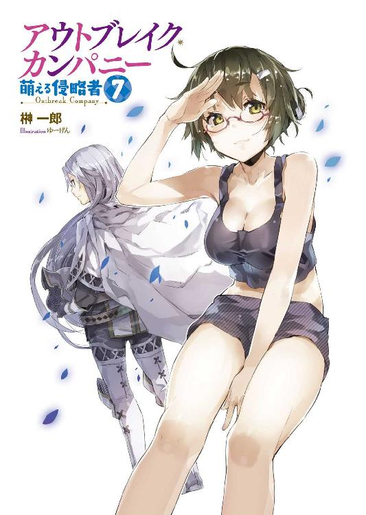
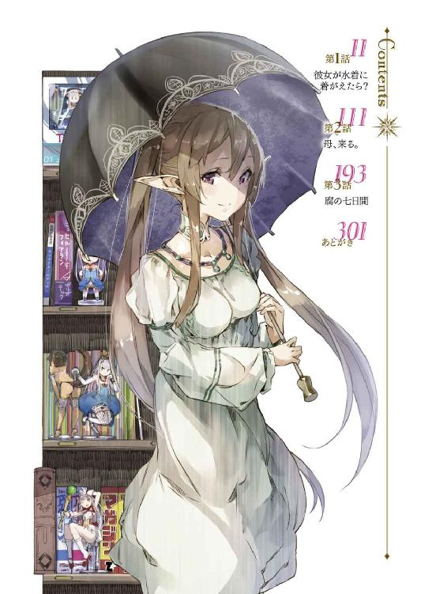
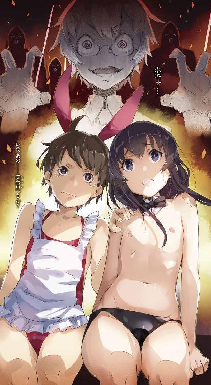
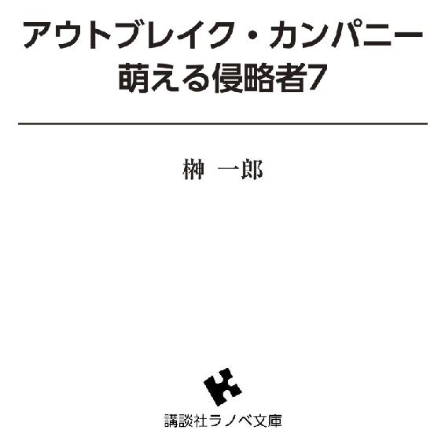
口絵・本文イラスト／ゆーげん
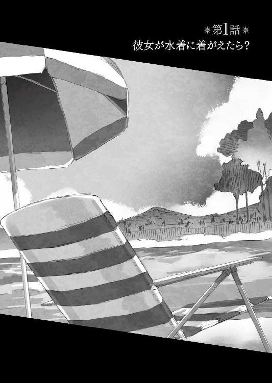
のっけから僕はテンションがＣＲＹでＭＡＸだった。
「──降り注ぐ太陽！」
雲一つなく晴れ上がった青い空ッ！
眩しいまでに遠慮なく輝く太陽ッ！
じりじりと肌を焦がす太陽光線すら、今は気持ちいいと言えるッ！
生きていて良かったッ！
何故なら！
「延々と続く白い砂浜！」
さくさくと砂を踏みしめる裸足の感触が、気持ちいい。
「はじける水飛沫！」
陽光を反射して、きらきらと七色に輝く水滴が降り注ぐ。
「飛び交う黄色い声！」
女の子達のはしゃぐ声が幾重にも重なり、耳に心地よい。
僕は両手を──頭上の太陽を、広がる世界を、すべて認め受け入れようとするかのように両腕を大きく広げて言った。
「そう、ここは夏の海！ ..................じゃないんだけどね」
まあおおむね似たような感じだ。
そう。今、僕達がいるのは、海のようでいて海じゃなかった。
ここは──湖だ。
僕達は、〈アミュテック〉社の屋敷から羽車でちょっと行ったところにある湖へと遊びにやってきていた。神聖エルダント帝国の所有する御料所の一つ......首都マリノスに隣接し、しばしば歴代の皇帝陛下が避暑にと用いてきた、いわば別荘地である。
ここには、やたらにでっかい湖があり──何しろ小さいながらも湖畔には砂浜があり、波まであるのだ──泳いだりすることもできる。
そう。泳げるのだ。
そして泳げるとなると当然──
「生きていて良かった......」
僕はこの世に生まれ出たことを、心底から神と仏に感謝した。
見せてもらおうか、三次元の実力というものを！ とか最初は余裕かましていた僕だったけれど、気が付けばそんなものは綺麗さっぱり吹き飛んでいた。
何しろ──
「何やってんの？」
そう尋ねながら近づいてきたのは、僕の護衛役の女性自衛官──古賀沼美埜里さんだった。
普段は常装と呼ばれるシャツにタイトスカートといった、いかにも公僕です、的な格好をしているけれど、今は違う。まったく違う。まず肌色の面積が違う。
「せっかくなんだから泳いだら？」
何しろ彼女は今、水着を着ていて。
しかもそれが──黒のビキニッ!!
胸がこう、揺れて、揺れて、お尻もこう、きゅっきゅっと左右に──しかも引き締まった腰がまたこう、とどめのように僕の劣情を......あああああ。
なんだ、この全身凶器ッ！
彼女はただ歩いているだけだというのに、僕は悩殺される寸前だった。
特にその胸の谷間！ こぼれ落ちそうな二つの白い丘の谷間に顔を埋めて窒息したい！ いや、させてください！ 土下座でもなんでもしますから、埋めさせて！
などと、思わず叫びそうになるのを必死に堪えて僕は言った。
「ふふふ。なに、太陽が黄色くて──ね」
「どうでもいいけど鼻血」
眼鏡の奥の目を細めて美埜里さんは言った。
「うう。凶器準備集合罪で提訴したい」
「何言ってんだか。ほら、ミュセルも待ってるよ」
と美埜里さんは水際の方を示す。
そこには──
「おおおおお......」
思わず溜め息が出た。
ミュセル・フォアラン。
可愛いメイドさん。
もっとも今の彼女は水際の妖精、いや女神だった。
普段、メイド服としてはわりと露出度の高めのものを着ているミュセルだけれど、それでも胸元や太股の辺りは動きやすいようにややゆったりめに作られている。そのおかげで、あんまりミュセルの、素のままのプロポーションってのにはお目に掛かることがないのだけれど。
それは今、僕の視線の先に、余すところなく存在した。
美埜里さんが用意したという白のホルターネックのビキニが実に目に眩しい！ 前から『意外と胸ある』などと言われていたが、なるほど！ 大きすぎず、小さすぎず、しかしてくっきりとその存在を主張する──実に均整のとれた見事な胸だった。
あえて下半身をパレオで隠しているあたりも最高だった。
そう、恥じらいだよ！ ミュセルには恥じらう姿こそがよく似合う！
「美埜里さん」
「なに？」
「僕はたぶん、今日、この日のために生まれてきたんです」
「......そうかもね」
美埜里さんの声には若干の呆れが含まれていたような気がするが、僕は気にしなかった。
「──旦那様」
ミュセルが僕の視線に気付いて──ふと目を伏せる。
恥じらうその姿がまたこう、可愛くて。
「あ、あの......へ、変、ではないですか？」
「何が？」
「いえ......その......私の......」
「とんでもありません！」
僕は握り拳を固めてそう主張した。
「実に素晴らしいと思います！」
「そ、そうですか......よ、良かった、です」
たどたどしく言いながら、頰を赤らめるミュセル。
「外でこんな格好......はじめてだったもので......でも、旦那様に......喜んでいただけたなら......それで」
そういえば水着って、いつ頃から今の形になったんだっけか。
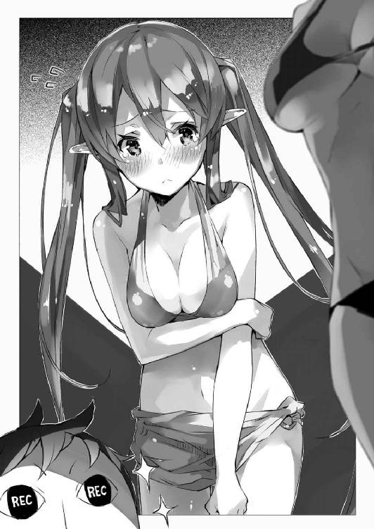
昔は単に濡れても大丈夫な布地で作ってあるだけで、ウェットスーツみたいに、全身を覆うようなのが主流だったとどっかの本で見たような。特にエルダントの文化や価値観からすると、今の格好は下着姿で野外に出ているのと変わらないように思えちゃうのかもしれない。ミュセルが恥ずかしがるのも当然だ。
だがそれがまたよし！
恥じらい要素でポイント追加ッ！
などと僕が喜びを嚙み締めていると──
「──うわぅッ！」
視界の端で、まるで搔いた雪を噴き上げる除雪車のように、何やら砂が高々と舞い上がっているのが見えた。
そちらを振り返って見れば、どばどばと跳ね上げられる砂に隠れて若干、見にくいけれど──獣耳と獣尻尾を備えた少女が、ものすごい勢いで砂浜を掘り返しまくっているのが見えた。
エルビア・ハーナイマン。
ウェアウルフの娘だ。
「やっぱりワンコなんだなぁ......」
僕は苦笑して言った。
もちろん、エルビアも水着姿だ。
ただし彼女の場合、衣装の印象はあんまり普段と変わらない。チューブトップはいつもと同じだし、自室では下着みたいな格好でうろうろしていることも多いので、僕も何度か彼女のそういう格好を見ている。
しかし──
「うーむ......けしからん」
エルビアの──その肢体の魅力が最大限に発揮されるのは、やはり『動いている姿』そのものだ。全身から迸る躍動感！ いかにも肉体ッ！ って感じで、ただ突っ立っているよりも爽やかな色気が五割増しである。そう、額の汗さえダイヤモンド、な感じだった。
しかも今は彼女、こちらに背を向けて穴を掘っているのだけれど。
僕の方から見るとお尻が丸見えというか、尻尾を出さないといけない関係で、エルビアの水着の下は、かなり際どい造りになっており──穴を掘る動きに合わせてこれまた左右に振り振りされる様子は、これでもか、これでもか、ええいこれでもかッ！ ってくらいに僕のリビドーを刺激しまくってくれる。
そして──
「シンイチ！」
名を呼ばれて振り向くと、そこには──この湖の所有者様がいらっしゃった。
すなわち、エルダント帝国の皇帝陛下である、ペトラルカ・アン・エルダント三世だ。
仰々しい名前に反してその姿は少女のそれ、というかぶっちゃけ、幼女に近い。
彼女も水着なのだが、当然その胸はぺったんこ。
だがあえて言おう。
そこがいい！
しかも......
「何をしておる？」
彼女の着ているのは、なんと、旧型スクール水着だった。
それもご丁寧にひらがなで『ぺとらるか』と書かれたゼッケンまで付けている。旧スクミズならばこのワンポイントは絶対に外せないところだ。誰の入れ知恵かは分からないけど──案外、ペトラルカが自分で漫画やアニメの知識から仕入れたのかもしれない──これはもう完璧、いや究極と言わざるを得ない。
......などと。
僕が皆の艶姿を堪能していると──
「だから君も泳ぎなさいって。ただでさえ普段からインドアに偏ってるんだし」
と、美埜里さんが僕の背中を押す。
「いやもう僕はお腹いっぱい──ではなくて」
押されるままにミュセルやペトラルカの方に向けて歩きながら、僕は美埜里さんを肩越しに振り返った。
「もともとこれって美埜里さんの休暇のためじゃないですか」
「ま、そうなんだけどね」
童顔巨乳の女性自衛官は苦笑を浮かべた。
「普段が普段だから、いざ、さあ遊べって言われてもねー......」
「そういうもんですか」
まあアウトドアだインドアだというなら、陸上自衛官なんてのは、事務職でもない限り、仕事の大半がアウトドアなんだろうし......逆に休日は家の中でごろごろ、なんて人の方が多いのかもしれない。
「そういえば他にも休暇とってる連中がいるんだけど、何して過ごしてるのかな」
と首を傾げる美埜里さん。
「このエルダントじゃ、遊びに繰り出す先も限られてるでしょうしねえ」
と僕も首をひねった。
そもそも──先にも言った通り、今回のこの『どきっ！ 美少女だらけの水着大会！ ぽろりも（以下略）』は、美埜里さんの休暇を消化するために企画されたイベントなのだ。
美埜里さんに限らず、このエルダント駐留部隊の自衛隊員達は、機密任務に従事しているわけで......つまりこちらにいる限りは勤務中、と見ることもできる。さらには機密保持の意味もあって、あまり日本とエルダントを行ったり来たりはできない立場だ。
つまり彼らの有給休暇はたまる一方なのだ。
そういうわけで、エルダント駐留部隊の自衛隊員達は、たまりにたまった有給休暇を消化せよという命令が上から下ったらしい。少なくとも書類の上では『休んだ』ことにしておかないと、後々、事務処理が面倒なのだとか。
だけど前述の通り、日本に戻って、となると何かと手続きやら何やらが面倒だ。
そういうわけで、このエルダントで何か適当な休暇の過ごし方を自衛隊員達はそれぞれ模索するという、なんだか本末転倒な事態になっているのである。
その模索結果の一つが──水遊びなのだった。
ちょうど、エルダントも緩やかながら夏になりはじめ、汗ばむような季節になってきたこともあり、ついでに言えばペトラルカが『このアニメの水着回という表現はなんじゃ？』などと訊いてきたこともあって、皆で泳ぎに行こう、という案はおおむねすんなりと受け入れられた。
「とにかく、そんな隅っこにいないで、みんなと遊んでいいんだよ？」
振り返りながら喋っていると、自然と歩く速度も落ちる。
最初は腕を伸ばして僕の背を押していた美埜里さんも、身体全体で僕を押す感じになってきて、その、あの、背中に、あの、背中に、胸が、胸がっ......！
「みんなだって慎一君と遊びたいんだから」
「そそそそそうですね！」
背中に感じる、柔らかでまろやかでたわわではわわな感触と、『遊びたい』という言葉が繫がって、かなりイケナイ妄想に流れていきそうになる意識を、たいへんな苦労をしながら引き戻すと、僕は溜め息をついた。
僕はもうしばらくこの楽園の光景を脳内のハードディスクに記録しておきたかったのだけどもねえ。
ちなみに......ペトラルカに同行してきた親衛隊の女性騎士達も、今回は『警護のため』という名目で水着姿になっている。ビキニの水着に、最低限の鎧──肩当てとかブーツとかを着けて剣を提げているその姿は、なんというか、古き良き時代のビキニアーマーっぽくて、これまたたいへんによろしい。
どうやらその水着も美埜里さんが手配したらしい。
デザイン自体は地味めなのだが、日頃の訓練の賜か、もともと、スタイルのよい女性騎士たちが着るのだから、これまた実に美しい！
「すばらしい、この桃源郷！ すごいよ！ ラ●ュタは本当にあったんだ！」
太陽を振り仰いでそう吠える僕。
そんな僕に──
「そんなことをいっていないで君も泳いだらどうだ、カノウシンイチ」
と声を掛けてきたのは。
「............」
思わずぎくりと身を強張らせながら、声の主の方を振り返る僕。
そこには、すらりとした一人の青年が立っていた。
ペトラルカと同じ銀の髪と翡翠色の瞳が──何よりも隙なく整うその目鼻立ちが、皇帝陛下の血縁であることを物語っている。僕が女性なら一発で惚れちゃいそうな、完璧とも言える美形がそこにいた。
ガリウス・エン・コルドバル卿。
騎士団の団長にして、帝国の軍事面を事実上牛耳っている人物である。
美形で貴族で権力者で、なおかつ頭は切れるわ腕は立つわ──二物どころか三物四物与えられた超絶勝ち組で、同じ男としては、どんだけ神は不公平なんだよと文句の一つも言いたくなるが。
ただ一点だけ、羨ましくもなんともない点がこの騎士ガリウスにはある。
男色の趣味だ。
ようするにホモホモナイトなのだ、この人。
まあ普段はちゃんと自重してくれているので、そうそうややこしいことにはならないのだけれど、今は僕も水着──ガリウスの視線がこう、粘っこく肌の上を撫でていくような気がして、どうにも落ち着かない。
しかも......
「それはそれとして、なんて格好してるんですか！」
「ん？」
と首を傾げる仕草すら、こう、背後に薔薇の花が咲き乱れそうな雰囲気なのだけど。
「コガヌマミノリが私に最も似合う水着ということで用意してくれたものなのだが、何か問題でもあるのか？」
ガリウスの水着は黒のビキニパンツだった。
いや。それはそれでいいのだが。
素肌の上に黒の蝶ネクタイって──どこの変態だよ!?
しかもガリウスはガリウスで、それを『ニッポン文化における水着としての正装』と信じているみたいだから、恥ずかしがるでもなく、むしろ堂々と立っている。
「美埜里さん──」
「なに？」
僕のジト目から放たれる『何やってんですか貴女は』的な視線を受けても、諸悪の根源とも言うべき、絶賛腐敗中の女性自衛官は平然としている。
「なんなんですかあれは」
「何って。裸執事」
「さらっと異様な単語、口にしますね」
「そう？」
一点の曇りもない笑顔でガリウスを見つめる美埜里さん。
見ているだけで目眩がしてきそうだった。
しかも──
「さあ、シンイチ」
そう言って僕の傍に歩み寄るとガリウスは僕の肩に手を掛けた。
「～～～～～ッ！」
普段は服によって阻まれているはずの、素肌と素肌の接触。
何気ない仕草でありながら、その指先がそっと僕の鎖骨を撫でる。
思わず叫び出したい衝動を覚えながら──ふと僕は気付いた。
一人の女性騎士がこちらを向いて携帯ゲーム機──３ＴＳを操作している。
以前の『御前サッカー試合』の上位チームに贈られた賞品の一つだ。もともとはリザードマン・チームに贈られたものだったはずだけど、彼らの大半が携帯ゲーム機に興味を持たなかったので、そのままほしがる貴族やら大商人やらに売られたのだけれど。
だからまあ、ガリウスや騎士が持っていても、おかしかないのだけれど。
今、３ＴＳの裏面に取り付けられたカメラのレンズは、僕の方を向いていて──
「ちゃんとトれているか？」
「はい。扱いにはもう慣れましたので問題はありません」
僕を撮影していた。
「──って、何を撮ってるんですか！」
「無論、シンイチ、君だ」
堂々と悪びれる様子もなくガリウスは言った。
「勝手に──」
「これは私が個人的にトらせているものだ。なんの問題もない」
「あるでしょ！ 肖像権──」
と言いかけて。
そもそも平等だのなんだのの概念すらないこのエルダント帝国の人間に、肖像権だなんだと言っても通用しないのは当然だと僕は気付いた。写真機そのものが存在しなかった世界なので、盗撮もくそもないわけで──それを問題視する感覚すらないのだ。
しかし......
「私はただこのニッポンの絡繰りで、君の姿を子細に留めておきたいだけなのだよ」
そう主張する彼の頰はうっすらと朱に染まっているように見えるけど──気のせいだよね。うん。気のせい。気のせい。気のせいなんだよッ！
「泳ぐのが気が進まんと言うのなら、その辺の木陰で休むかね？」
とガリウスが近くの、樹が生い茂っている辺りを示す。
微妙な暗がりが『さあおいで』と誘っているかのようにも見えて、僕は総毛立った。
「あ、いえ、泳ぎます、泳ぎますともッ！」
ここでガリウスとホモホモしい会話を交わしているくらいなら、ミュセル達ときゃっきゃうふふしている方が百万倍有意義だ。
「さあ！ 泳ぐぞッ!!」
「むう......」
不満げに唸るガリウスをその場に残し、僕はミュセル達のいる水際に向けて全力疾走を開始した。

話は一週間ほど前に遡る。
その日──僕は屋敷の中の自分の部屋で、ちょっとした雑務を片付けていた。
僕はまがりなりにも総合エンターテイメント商社〈アミュテック〉の総支配人だ。なので傍目にはどう見えているのか分からないけど、これでけっこう、するべき仕事は多いのだ。細かな手続きは別の人達がやってくれるかもしれないけれど、僕が判断して裁可しなければならない書類も、少なくない。
それに加えて『学校』の授業なども引き受けているのだから──そのための下準備も必要だったりする。普通の社会人や受験生に比べるとそれでも悠々自適に見えるかもしれないけれど、自宅警備員だった頃の僕と比べると格段に忙しいのだった。
そんなわけで......
「えーと......」
学校の授業がない日は、書類仕事に追われているのが常だ。
僕は目の前に置かれた書類に一枚、一枚、目を通して、可か不可かを決めていく。他にも今後、仕入れるべき品の一覧表も作成せねばならなかった。
「シンイチ様......」
僕の執務机にお茶のカップを置きながら、ミュセルが気遣うように言った。
「......あまり根を詰められると......お体によくないかと......」
「まあそうなんだけどねえ」
僕は『いただきます』と一言断ってから、ミュセルの淹れてくれたお茶を一口啜る。
ほんのりと果物の風味と甘みがきいているのが、疲れた脳や目に嬉しい。そういえばベリー系の果物には目に良い成分が含まれているんだっけ。ミュセルがそんなことまで知っているとは思えないけど、美埜里さん辺りから聞いたのかもしれない。
その美埜里さんはというと──彼女は彼女で、部屋の隅に机と椅子を置いて、僕の処理した書類をチェックしている。本来、僕の護衛が仕事なので、これは完全に任務外なのだけど、僕の方が忙しくなってくると、こうして手伝ってくれるのだ。
「そうじゃぞ、シンイチ」
と──ソファにふんぞり返って言ってくるのは、ペトラルカだ。
「だいたい、せっかく妾が来てやっているというのに、ろくにもてなしもせず、そのような雑務などにかまけているとは何事か」
そう言いながらひょいと彼女が手にして眺めるのは、さきほどまで僕が弄っていた書類の一枚だ。日本に提出する『発注一覧表』──要するに次にどんなオタク作品をエルダントに持ち込むかのリストである。
彼女はこれを見ながら、やれ『あれが入っていない』だの、『これはなんじゃ？』だのと横やりを入れてくる。ペトラルカは日本語がけっこう読み書きできるようになってるから、書類の内容も多少は分かる。おかげで、手伝ってくれるどころか、足を引っ張られるありさまだけど、相手は皇帝陛下、立場としては僕の傭い主の一人でもあるので、無下にはできない。
とはいえ......
「ありがとう、ミュセル、そしてごめんね、ペトラルカ。でも、とりあえず今やってる作業だけでも終われば、少しは時間がつくれるから。で──ごめん、ミュセルはなにか作業中に摘まめる軽い食事でも用意してくれると嬉しいんだけど」
「あ──気付きませんで申し訳ございません！ すぐお持ちします！」
ミュセルは僕の言葉を聞くと、深々と頭を下げ、それから厨房の方へと飛んでいった。
いや、別に責めたわけではないんだけどな。
実は──今日は仕事が立て込んでいて、僕と美埜里さんだけ昼食がまだだったのだ。普段は皆が揃って食事をとるのがこの屋敷の日常なのだけど。
くるくると鳴り始めたお腹を意識しつつ、僕が次の書類を手に取ると──
「──こんにちは」
開きっぱなしの扉をこんこんと叩く音。
目を上げるとそこには、一人の中年男性が立っていた。
「慎一君、古賀沼君。ちょっといいかな？」
ミュセルと入れ違うようにして僕の執務室に入ってきたのは──極東文化交流推進局の局長、的場甚三郎さんだった。
所属組織や肩書からは分かりにくいけど、まあ、僕の上司的な立場にいる人だ。
正確には〈アミュテック〉の上部組織たる日本政府と、僕とを繫ぐ連絡係というか。
的場さんはその役職上、日本とエルダントを頻繁に行き来していて、何日も屋敷に姿を見せないことも珍しくない。ふらっと一人でここに来ては何か用件だのなんだのを告げてまたいなくなる、というのが彼の基本的な行動パターンだ。
今日は珍しく彼には同行者がいた。
制服姿の自衛官だ。たぶん、的場さんの護衛役なんだろうけど──屋敷の中まで一緒に入ってくるのは珍しい。
「的場さん、また日本に帰ってたんですか？」
そういえばこの一ヵ月ほど、彼の顔を見ていなかったのだけど。
「それが仕事だからね」
と的場さんは肩を竦めて言った。
「ところで──古賀沼君」
彼は美埜里さんの方を振り返って言った。
「今日寄らせてもらったのは、慎一君じゃなくて、君に用があったからなんだが」
「私、ですか？ なんでしょう？」
首を傾げる美埜里さん。
的場さんは背広の内ポケットから手帳を取り出すと──ぺろりと指をなめてそれをめくった。なんというか、こういう、小役人ぽい仕草がこの人は妙に似合う。
それはともかく──
「君も含めてなんだが、自衛隊のエルダント派遣隊の隊員に休暇を取ってもらいたいんだ。正確には三交代くらいで」
「──は？」
眼鏡の奥で目を瞬かせる美埜里さん。
「なにせ、こちらに来てからまともに休暇を取らせていないからね」
「休暇......そういえばそんなものもありましたねぇ」
のほほんとした表情で美埜里さんがいう。
確かにエルダントに来てから、彼女は僕の警護ということで、ほとんど二十四時間営業のコンビニ状態だ。睡眠時間以外は僕の傍にずっといるような生活をしている。
「ああ。少なくとも書類上だけでも休暇を消化しておかないと、いろいろとこちらとしても問題があってね。というわけで、来週にでも君たちにはまとめて休暇を取ってもらいたいんだ」
「佐藤一尉達も休暇を取られるんですか？」
美埜里さんは的場さんの隣に立つ男性自衛官に問いかけた。
ふむ、佐藤一尉っていうのか、この人。
四角い顔、目は細く、鼻はゴツめ、全体的に農夫を想わせる実直そうな雰囲気で──自衛隊の制服もよく似合っている。
御前試合だのドラゴン退治だののときに顔は何度か見ているのだけど......直接話したことはない人なんだよな。顔見知りだけど、知人と言うには躊躇われるというか。
ちなみに自衛隊での一尉っていうのは、他国の軍隊で言えば大尉に相当する。けっこうえらい人らしい。
「ああ。我々の部隊も交代で休暇を取ることになった」
「休暇、どう過ごされるんですか？」
佐藤一尉は苦笑いしつつ美埜里さんの問いに答えた。
「我々の部隊は建て前上、ＰＫＯで中東に派遣されていることになっているから、日本に帰るわけにもいかない。まあ、エルダント国内の観光でもして過ごすさ。我々にも魔章指輪が下賜されているから、言葉の問題はない」
そう言いながら、佐藤一尉は指にはめられた魔章指輪を見せた。
これは僕ら日本人がエルダントの住民と意思疎通するのには欠かせない『装置』だ。魔章指輪をはめている者同士なら、僕らが日本語で、エルダントの住民がこちらの言葉で話しても、魔章指輪が瞬時にそれを翻訳してくれる。
僕も同じ指輪をはめているし、エルダントに派遣された自衛官達にも魔章指輪が下賜されている。
これはエルダントにおいては身分証としても機能するらしく、これを着けている者は、貴族とまではいわずとも、一般市民よりも一段上の立場にいることを意味する。エルダントの国内に限っていえば、確かに、何不自由なく観光も可能だろう。
「とまあ、そういうわけだ。休暇を取る順番は、明日にでも書類を回すから、それを参照のこと。休暇の過ごし方は、もちろん、各人の自由だ。思う存分羽を伸ばしてくれ」
「了解です。..................しかし、羽を伸ばす......」
上官にそう言われて美埜里さんは首を傾げた。
「いざそう言われると、困りますね」
「ついでに慎一君、君も少し休暇を取った方がいい」
と、珍しく的場さんが僕を気遣うようなことを言ってきた。
どういう風の吹き回しなんだか。まあ、僕が倒れたら、それはそれで的場さんも困るんだろうけども。
「やっぱり休暇の過ごし方っていうと、気分転換的な意味合いが大きいですよねえ」
僕も腕を組んで首をひねりながら言った。
「気分転換......」
「日本ではそろそろ海水浴の季節だな」
佐藤一尉が目を細めて言った。
「カイスイヨク──」
ふとペトラルカが目を瞬かせながら言った。
「そうじゃ。カイスイヨクじゃ！」
「──え？」
「この前見たアニメで、気分転換にカイスイヨクに行こう！ と主人公が言っておったではないか。ニッポンの気分転換の基本ではないのか？」
「──ああ、そういえばあれ、水着回だったな」
ペトラルカのいうアニメを思い出しながら、僕は言った。
「まあ、確かに定番っちゃ定番だけど」
「ミズギカイ？ なんじゃそれは？」
何気なく僕の漏らした言葉にペトラルカも食いついてきた。このロリ（っぽい）皇帝陛下は、ある意味、この国の誰よりもオタク文化への興味が旺盛だ。
「いや、その、ほら──この前ペトラルカが見ていたアニメは、どっちかっていえば男の子向けだからさ。で、男の子は可愛い女の子の水着を見ると、嬉しいっていうか。なので、アニメを見てくれるお客さんに、喜んでもらえるように女の子達が水着になる話をたまに入れるのが、日本のテレビアニメのお作法っていうかお約束っていうか──」
この辺、ちゃんと説明しようとすると、いろいろ難しいな。
ちなみに、ペトラルカの魔章指輪が『海水浴』や『水着回』をきちんと翻訳していないのは、彼女の語彙の中にそれに相当する言葉が存在しないからだ。彼女はアニメの中で見た異国の単語をそのまま口にしているに過ぎない。
ともあれ──
「なるほど、それが『ミズギカイ』というわけじゃな？」
「そういうこと」
「シンイチも嬉しいのじゃな？」
「そりゃもちろん！」
僕は拳を握りしめて言った。
「水着回は心のオアシス！ 殺伐とした物語でも、たまに挿入される水着回によって視聴者の心は潤い、次に続くであろう暗い展開にも耐えられるって寸法だよ！ だいたい、ヒロインたるもの、一度は水着回を──」
「よ、ようわからんが、とにかく、嬉しいのじゃな？」
「当然です！」
「よし」
ペトラルカは大きく頷いた。
「では妾達も『ミズギカイ』をしてやろうではないか！」
「へっ......？」
思わず僕の口から間の抜けた声が漏れる。
何をおっしゃっていやがりますか、このロリ風味の絶対権力者は。
「じゃから！ 妾もそのカイスイヨクとやらに行くぞ！」
「え......あ......はぁ」
まあ僕としては、ペトラルカが一緒に来るのを拒む理由はないのだけど。
何しろ彼女は皇帝陛下だ。どこかに出掛けるとなると、それだけでも大事になるのではないだろうか。
しかも──
「でも──」
美埜里さんが首を傾げて言った。
「確かエルダントは内陸国だから、海はなかったんじゃ？」
そういえばそうだった。
エルダントに海はない。
正確には、この世界に海がない──のではなくて、エルダントの国境線が、海に隣接していないのだ。なので海に行こうと想うと、わざわざ国外に出なければならないわけで──それはそれでいろいろと面倒だろう。
「いやまあ、海じゃなくてもいいんですけどね」
「海は妾もまだ行ったことはないが、帝都郊外にある御料所の一つに、大きな湖がある。泳ぐのならばそこでも充分に泳げるぞ！」
得意げな表情でペトラルカは言った。
「だ──そうですけど、美埜里さん」
「いいわね」
美埜里さんはむしろ急に乗り気になった様子で言った。
「みんなの水着は私がセレクトしてあげるわ！」
何故か鼻息も荒くそう申し出る美埜里さん。
その様子を苦笑しながら見守る的場さんと佐藤一尉。
想えば──この時点で、僕は察しておくべきだった。
脳天気な会話のその背後に組み立てられつつあった、企みを。
それはもう、楽園そのものの光景だった。
湖の畔で、水着姿の美少女＆美女が戯れている。まあ視界の端には裸執事──もとい水着姿の青年騎士もいたりするが、僕はその姿を意識から追い出して、目に映る素敵なもろもろを、ただただ享受することに努めていた。
「そーれ！」
美埜里さんが明るい声とともに黄色と白のビーチボールを軽く手で打った。
ボールは弧を描いてミュセルの方へ飛んでいく。
「えっ？ えっ？ わ、私ですか!? ああっ、は、はいっ！」
わたわたとしながらも、飛んできたボールにミュセルが手を当てる。ミュセルの場合、この手の遊びははじめてのはずだけど、筋が良いのか、単なる偶然か、ボールは綺麗な山を描いて再び宙を飛び──今度はペトラルカの方へと向かった。
「むっ？ 今度は妾の番かッ！」
ペトラルカの手に当たったボールが、エルビアの方へ飛んでいく。
さすがに今度は当たり所が悪かったか、ボールの軌道は山を描かず、エルビアの方にまっすぐに向かう。とても打ち返せるような球ではない。普通ならここでボールは地面に落ちて、いったん、ラリーは終わるはずだった。
だが相手はエルビア──獣っ娘である。
その反射神経や筋力は、僕達とはまったく異なる。
「──！」
エルビアは尻尾をピンと立てて、飛んでくるボールを迎え撃つ体勢に入る。
そして──
「──わうッ！」
次の瞬間、彼女は迎撃──どころか、自分から空中のボールに飛び掛かると、これを両手両足を使って抱え込んでいた。
「......辛抱たまらんす！」
「あああああああ」
やっぱりこうなったか。
僕はごろごろと砂浜を転がっていくエルビアを見ながら溜め息をついた。
「こら、エルビア！ 球を返さんか！」
とペトラルカが怒鳴り、女騎士達が大慌てでエルビアを追う。だがエルビアはボールを抱えたまま──どうやっているのかかなり謎だが──ごろごろとものすごい勢いで転がり続けているため、女騎士達も追いつけない。
エルビアは──彼女を含め獣人系種族の多くは、体質的に月齢に強く影響を受ける。このため、彼らの間には独特の宗教めいた価値観が存在し、月と、月を連想させる真円──というより球体を、一種の御神体として偏愛する傾向にあるのだとか。
もともと抱えるのに手頃な大きさ、しかも黄色と白のビーチボールとなると、まあ、『お月様』に見えないこともない。これが彼女の本能を刺激してしまったらしい。
「エルビアが入ったらビーチバレーは成立しないって、あれほど言ったのに......」
「でもエルビアさんだけ、除け者にはできませんし......」
結局、追いつけないまま女騎士達はエルビアを捕まえるのを断念──エルビアは砂まみれになりながらも、一人、嬉しそうにボールと戯れている。
「じゃあ、別の遊びしようか」
と提案してきたのは美埜里さんだ。
「陛下、慎一君、ミュセル。みんなで『スイカ割り』をしましょう」
「スイカ割り？」
驚いて僕は尋ねる。
「スイカなんて持ち込んでたんですか、美埜里さん？」
「いいからいいから。エルビア！ ちょっとこっちに来て！」
美埜里さんはエルビアの方を振り向いて叫んだ。
「はい？ アタシっすか？」
ある程度ボールと戯れたせいで、満足して正気に戻ったのか......呼ばれたエルビアは、こちらを振り返って首を傾げた。
「エルビア、ここに人が一人入るくらいの穴を掘ってくれる？」
「はあ、お安いご用っすけど、何をするんで？」
「すぐに分かるわ」
「ういっす」
エルビアは美埜里さんの言葉に頷くと、ものすごい勢いで砂浜に穴を掘り始めた。
すごいすごい。先にも見たけどものすごい速さだった。
塹壕掘りとかやらせたら、彼女一人でショベルカー一台分くらいの働きをするかもしれない。
僕らが呆然と見ている間に──砂浜には、人が一人すっぽりと収まるくらいの穴ができあがっていた。
「これでいいっすか？」
「ありがとう、エルビア。じゃあ、次は慎一君の出番。穴に入ってくれる？」
「穴に入るんですか？」
「そう。さ、入って入って」
「はあ......」
何をするつもりかしらないけど、とりあえず僕は美埜里さんの言葉に従ってその縦穴に入ってみる。
すると──
「おおっ......!?」
僕の視界には、専門用語でいうところの『アオリ』の角度で並ぶ美少女＆美女の姿が！
『下』から見上げることにより、太股の曲線が、そして何より、胸の膨らみが、これでもかというくらいに強調される！ 嗚呼──ペトラルカの胸さえも、そこに慎ましやかな、しかしはっきりと分かる膨らみが！ 素晴らしい！ 美埜里さん、あんたなんちゅうものを見せてくれたんや......！
──などと。
「あれ？」
僕がひとしきり感動していると──何故かその美少女＆美女達が揃って僕の周りに砂を寄せはじめた。まるで水位が上がっていくかのように、穴は隙間が埋められて僕は──
「みんな何してるの!? なんで僕が埋められてるのッ!?」
「何故じゃと？」
僕の入った穴を砂で埋めながら、幼女風皇帝陛下が宣った。
「スイカ割りの準備に決まっているじゃろうが？」
「いや、スイカ割りって──どこが？」
「スイカ割りとは」
ペトラルカが腕を組んで言った。
「ニッポンの古来の風習で、夏の浜辺で罪人の頭を『スイカ』と呼ばれる果実に見立て、これをかち割るものなのじゃろう？ 綺麗にかち割るとまるでスイカのように真っ赤だというところからそう名付けられたとか──」
「違う！ 誰だ、ペトラルカにこんな間違った知識を植え付けたのは！」
「間違ってないわよ？」
「犯人はあんたか腐人自衛官！」
僕は涙目で美埜里さんを見上げて喚いた。
逃げようとしても時すでに遅し。ついに僕は首まで砂に埋められてしまった。
「まあまあ、慎一君」
無責任にへらへらと笑いながら美埜里さんは言った。
「別に日本刀とか使うわけじゃないし。死なない死なない」
「当たり前だ！」
「とりあえずこのスイカ帽子を被ってみようか」
「嫌だ！ だいたいなんですか、その左手に持ってるぶっとい木の棒！」
僕は、美埜里さんが携えているその凶器を指差し──はもうできないので、睨んで言った。
どこからどう見ても『棍棒』だ。ロープレなんかの初期装備だ。初期装備ってことで馬鹿にする人も多いが、逆に言えば、鋼鉄製の剣の代用品が務まるほどの代物だってことで、それなりの力で振り回せば、立派な凶器である。
「大丈夫だって。スイカ割りのスイカだって、そうそう簡単に割られないでしょ」
「割れたらどうするんですか！」
などと喚きながらも、両手が埋まっている状態では抗いようがない。
そういうわけで、僕の頭には緑と黒の縞々帽子が、容赦なく被されていた。
「うーん。いいスイカっぷりよ慎一君」
「美埜里さん、あんた僕の護衛でしょうが！ こんなことして許されるはずが──」
「今は休暇中だしねえ」
「あああああああそうだったあ！」
などと馬鹿なやりとりをしていると──
「──シンイチ様」
唯一地上に残された僕の頭部に、横手から忍び寄る黒い影。
「シンイチ様......なんかアタシこう......無性にシンイチ様が......」
エルビアだった。
いったんは収まったはずの『丸いもの』への衝動に衝き動かされているのが、声からも分かる。
「シンイチ様の頭が......頭が......！」
「ちょ、まって！」
「待てないっす！」
次の瞬間──まあるい『スイカ』に興奮したエルビアが、ボールにしたのと同じように、僕の頭を抱え込んでいた。
「エ、エルビ──うぷ!?」
僕の視界一杯に広がる白くて柔らかいそれは──エルビアの太股だった。ミュセルやペトラルカに比べると多少、日に焼けていて肌の色は濃いエルビアだけど、普段はズボンをはいているせいか、内股はやたらに白くて柔らかい。
そう。僕は今──頭部をエルビアの股間に埋めている状態で。
しかも後頭部に当たるのはこれ、たぶん、エルビアの──胸。
ああああああ。
なんだこの嬉し恥ずかしな状態!?
胸とか太股とかが直接、顔や頭に当たって、その、いろいろと青少年の教育上よろしくない感じが──
「実に、実にけしから.....................ん？」
──ふと。
僕の視界の片隅で何かがきらりと光るのが見えた。
何かが日光を反射したような──そんな。
なんだろう？
だがそれは森の中で──光を反射するようなものなど、特にないはずで。
「美埜里さん！」
僕はすぐ傍にいた女性自衛官を呼んだ。
「あそこで何か光ったような気がするんですけど......」
「そんなこと言ってごまかそうとしてもダメだよ、慎一君」
「いや、確かにさっき何か光が......」
僕はそう訴えても、この場から逃げ出したいがためのでっち上げだと思われたのか、美埜里さんはそれ以上僕の言葉に耳を貸さず、『スイカ割り』の準備を進めていく。
そして──
「さて、最初はだれがいく？」
美埜里さんが爽やかな笑顔で言った。
「アタシ、やってみたいっす！」
「エルビアか。よーし、じゃあ目隠ししてね」
美埜里さんがエルビアに持ってきたタオルで目隠しをする。
やばい。エルビアの──しかも『アノ日』前後の、強化された腕力でぶん殴られた日には、たとえ竹刀でも脳天ぱっくり割られかねない。
いや。待て慎一。
大丈夫だ。恐れることはない。
エルビアはスイカ割りの初心者。そうそう簡単に僕の位置が分かるはずがない。ここで僕がすべきは無意味に喚き散らして位置を悟られることではなく、まるで路傍の石の如く静かに、気配を消して、エルビアの一撃をやり過ごすことだ──
「はい、回って回って」
美埜里さんとミュセルがエルビアを回転させる。
これで彼女は自分がどっちを向いているか分からなくなったはず。
そうだ、無意味に恐れる必要なんかない──
「シンイチ様！」
エルビアは目隠しされながら──しかし自信たっぷりにこう言ってのけた。
「目隠しされてても、匂いで分かるっすよ！ 確実にかち割るっす！」
「やめてぇぇぇぇぇぇぇぇぇっ！」
もしかしたら僕の命は、今日、この湖畔で尽きるのかもしれない。
そんな漠然とした絶望を覚えながら、とりあえず全身で僕は絶叫した。
鬱蒼と生い茂る藪の中。
そこに──迷彩服を着た二人の男が潜んでいた。
迷彩服といっても、すでに一般人のファッションにすら取り込まれつつあるような、緑と茶と黒の入り混じる、単なる斑模様が施されただけの代物とは、異なる。
色どころか......それは人間の輪郭すらしていなかった。
植物とよく似せてつくられた布や糸を多数縫い付けて、まるでその服自体が一つの茂みのようにも見えるのだ。
いわゆる『偽装服』もしくは『ギリースーツ』と呼ばれる類の装備である。
もちろん──こんな本格的な代物を着ている以上、男達の姿は、他の部分でも徹底していた。顔には迷彩用のドーランを塗りたくり、光を反射しそうな照準鏡にも、使うとき以外は閉じておけるカバーが取り付けられている。
少し離れて見れば──男達の姿は完全に、藪と一体化していた。
いや。すぐ横に誰かいたとしても、男達が動かぬ限り、普通の人間ならば、それと気付かないだろう。
男達は『目標』の監視にあたっていた。
もちろん──これは本作戦の前段階だ。機を見て、随時、本作戦に移行することも彼らは許可されていた。彼らが携え、そして構えている装備はそのためのものだ。
男達の伏せている藪から湖の浜辺までは、かなりの距離がある。
水辺で明るくはしゃぐ女達の声も、ここまでは届かない。
男達の鼓膜を震わせるのは、時折吹き抜ける風が揺らす葉擦れの音と、野鳥の鳴き声だけだった。
二人のうち、左側に伏せて、やはり布と塗料で偽装された装備を構え、高倍率のスコープに映る慎一たちの姿を見ていた男が──ぼそりと呟いた。
「......吞気なものだ」
男が覗いているスコープの中では、スイカ柄の帽子を被せられた少年を目指して、手に木の棒を持った少女がじりじりと近づいていた。
首まで砂に埋まった少年は、まったく動けないようだ。
犬のような耳と尻尾を持った少女が、目隠しをされているにもかかわらず、まっすぐに少年の頭の方へ近づいていき、手にした木の棒を振り下ろす。
木の棒は少年の頭をかすめて砂浜をえぐった。
「なかなか強運の持ち主だな。頭をかち割られずに済んだか」
男は呟く。
自分達がここでこうして監視していることなど、連中は気づきもせず、無邪気に遊びに興じている。
緊張感の類はまったく感じられない。本来、彼らを護衛して周囲を警戒すべき『騎士』達すらも、水着姿でその輪に加わってくる始末だ。
「今のうちにせいぜい楽しんでおけばいいさ」
隣で同じように大きな単眼鏡を覗き込んでいる観測員が、その言葉に応えた。
「もうしばらくしたら、連中は遊びどころじゃなくなる」
その声には──感情の温度が感じられない。
「まさか自分達がこんなところから、狙われているとは思うまい」
偽装服に身を包み。茂みと一体と化し。
男達は今や、ただその『任務』を遂行するためだけの機械に等しい。
「連中が俺達に気づいたときには、もう遅い」
観測員の男は、単眼鏡から目を離すことなく言う。
「違いない。さて、おしゃべりは終わりにして、『仕事』の続きだ」
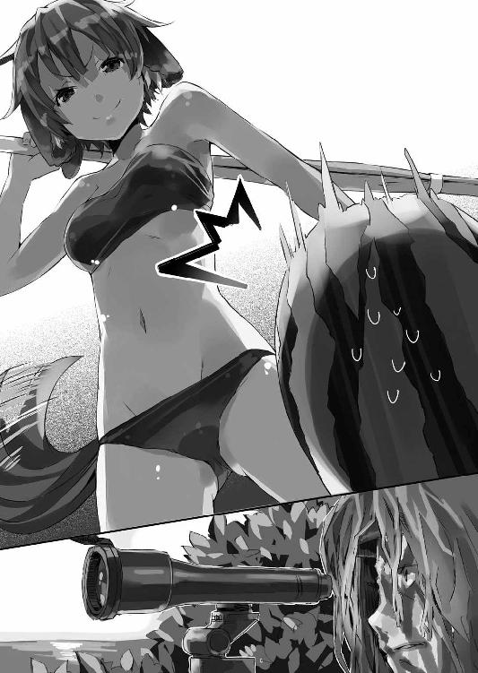
男は呟くと、再びスコープに浮かぶ『目標』を追うことに集中する。
観測員もまた息を潜めて『目標』を追いはじめた。
結局──僕は誰にも頭をかち割られることなく、悪夢の『スイカ割り』から無事生還することができた。
......っていうかスイカ割りに『生還』って言葉を使うのってどうなのよ。いつからスイカ割りはそんな命懸けのデンジャラスなゲームに成り果てたの？
「......ひどい目にあった」
僕はエルビアによって穴から掘り出され、引き上げられた後......ふらつきながら美埜里さんが用意した大きなビーチパラソルの方へと歩いてゆく。僕は一歩も動いていない、どころか指一本動かしていないのだけど、精神的に疲弊しきっていた。
「──でも」
日よけの大きな傘の下に行くと、ミュセルが飲み物を手渡してくれた。
さすがにクーラーボックスや冷蔵庫のないエルダントでは、キンと冷えた炭酸飲料、というわけにはいかないけれど。
「シンイチ様も、とっても楽しそうで......」
「どこが......？」
僕としては、ひたすら脳挫傷の恐怖と戦っていたわけだけど、ミュセルにはあれが楽しそうに見えたんだろうか。
「──って。これ!?」
僕はなんの気なしにミュセルの手渡してくれたカップのお茶を飲んで目を丸くした。
冷たい。明らかに周囲の気温よりお茶の温度が低い。
「どうしたのこれ？ 冷たいけど」
「あ。魔法で......」
とミュセルは少し恥ずかしそうに言った。
「冷却の魔法？ ミュセルそんなの使えたっけ？」
確か火の魔法と風の魔法と治癒の魔法の三つが扱えるだけだったような。覚えたての僕と違って、いろいろ応用はきかせられるみたいだけど──
「いえ。ミノリ様に教えていただいたんですが......」
ミュセルが言うには、お茶のポットを一回り大きな容れ物に入れて、その容れ物に水を満たし、そこに風量を調節した風の魔法をしばらく当て続けたらしい。
そう。気化熱だ。水は気化するときに周囲から熱を奪う。風を当て続けて水面上の湿度を強制的に下げてやれば、自然と水は気化を続け──結果として、残った水は、冷える。それは当然、ポットそれ自体も冷やすことになるわけで。
「じゃあずっと風量絞って、風の魔法使ってたの？」
「はい」
とミュセルは頷いた。
「冷えた飲み物を召し上がっていただきたかったので......」
「なんという気配り！」
本当、このメイドさんは優しいよなあ。
「でもミュセル、ここに遊びに来たのは、ミュセルの休暇も兼ねてのことだからさ。あんまり無理しちゃ駄目だよ」
風量を絞ろうがなんだろうが、魔法を使い続けるのはそれなりに疲れるはずだ。
「ミュセルはちゃんと楽しんでる？」
「はい。とっても」
ミュセルはにっこりと笑って言った。
「水練は軍隊にいた頃に習いましたけど、こんなふうに、みんなで湖に遊びに来ることなんてありませんでしたし」
ちなみに水練ってのは旧い言いかたで水泳のこと。
「それに......」
「それに......なに？」
ミュセルは恥じらうように僕から目を逸らして微笑みながら──呟くような声で言った。
「シンイチ様と一緒にお出掛けするのは......初めてのことですし......」
「......!!」
どきりと鳴る僕の胸。
まあ確かにミュセルと遠出するのは──僕がバハイラムにさらわれたときを除けば、確かに初めてだ。だけどこんな可愛いハーフエルフのメイドさんに、はにかみながら『初めて』とか言われると、こう、僕の中で何かが激しく萌え上がるわけで。
ああ！ 胸が苦しい！ 萌え死ぬ！
白いビキニの女神（僕ヴィジョン）よ！ 君は僕を萌え殺そうとしているのかッ!?
......などと僕がミュセルの可愛らしさにハアハアしていると。
「妾もおるというのに、二人して随分と楽しそうじゃの？」
いつの間にか僕の傍に来ていたペトラルカが、いかにも不満げに言ってきた。
「へ、陛下！」
ミュセルは弾かれたように僕との距離をあける。
「わ、私、そんなつもりでは......」
「楽しそうじゃったの？」
「あの......ペトラルカ......？」
「た・の・し・そ・う・じゃ・っ・た・の！」
ミュセルというより僕の方を睨みながらジト目でそんなふうに言うペトラルカ。
皇帝陛下はご立腹──というより完全にふて腐れてしまっている。
その様子を見てミュセルは本当に泣きそうになってるし、ペトラルカはペトラルカで不機嫌そうな表情で僕を睨み続けているし。
いったいどうしろと......？
「......僕がなにをしたっていうんだ」
「このドーテーボクめが」
「ドーテーボク!?」
「あるいは『トーフの角に頭をぶつけて死んでしまえ』と言った方が良いのか？ トーフというものがいったいどんなものか、よく分からんが」
「ペトラルカ。それたぶん、唐変木」
「む？ よく分からんが、そのドーテーボクじゃ」
とペトラルカは腕を組んでそう言った。
「変な日本語覚えてるなあ」
「察しの悪い男に対する罵詈雑言なのであろう？」
「いやまあ......大きく間違ってはいないけど」
でもちょっとペトラルカが傍に来ているのに気付くのが遅れたくらいで、なんでそこまで言われなきゃならないんだ？
ともあれ、この状況、どう対処したものかと僕が悩んでいると──
「んー......」
スイカ割りの後──少し僕達のところから離れて姿を消していた美埜里さんが、戻ってきた。
僕はてっきり、用足しにでも行っているものだと思っていたのだけれど......
「美埜里さん？」
どうも彼女の表情が変だ。
妙に硬いというか──普段はおっとり柔らかなその表情が、わずかながらも緊張感を帯びている。美埜里さんがこういう顔をするときは、思考が任務中のそれ、『自衛官』としてのそれに切り替わっていることが多い。
つまり......何か僕達の周りに危険が迫っている？
「あの、美埜里さん、何かあったんですか？」
「さっき慎一君が言ってたでしょ」
湖の近くに広がる森の方を振り返りながら美埜里さんは言った。
「森の中で何か光るものが見えたって」
僕は『スイカ割り』の準備中、僕の視界の隅に見えた、光るもののことを思い出していた。
「ええ。言いましたけど......」
完全無視されてたので、僕もそれ以上は特に気にしていなかったのだ。
「ちょっと気になってね。様子を見に行ったんだけど......」
「何か分かったんですか？」
「それがね、よく分からないのよ。誰かがいた様子もないし......」
「分からない？」
美埜里さんは童顔に似合わない、豊かなその胸の前で腕組みをして、首をひねる。
おお、胸が持ち上がって谷間が──......いや、今はそんなことに興奮してる場合ではなくて。
「私は自衛官だし、基本的な戦闘については訓練を受けてる。でも、本格的なゲリラ戦や特殊戦に関してはよく知らないのよ」
ゲリラ戦とか特殊戦というと、以前僕を襲ったことのある特殊作戦群の十八番だ。
「レンジャー資格者はそういうことのプロだから、もしレンジャー資格の持ち主にそういうことをされたとしたら、私にはたぶん見つけられない」
レンジャー資格者というのは、陸上自衛官の中で、レンジャー課程を修了し、レンジャー徽章を有する者を言う。
野戦築城、潜伏、空挺降下、舟艇潜入、武装水泳、緊急脱出、森林戦、夜戦、山岳戦、雪中戦、近接市街戦......等々、格闘技や射撃といった通常の戦闘技術とは別に、きわめて専門性の高い技術を、彼らは持っている。
いわば自衛官の中でも、選りすぐりの精鋭のみが持つ個人資格である。
当然ながら、特殊作戦群などは、レンジャー資格者の集団だ。
「それって......また、いつかみたいに僕らが狙われてるってことですか!?」
味方だと思っていた自衛隊の、それも特殊部隊に狙われた記憶が脳裏によみがえる。
あれから、日本側からのはっきりとしたちょっかいはなかった。首相が交代したこともあって、多少はやり方が穏当に──あるいは陰湿になってきたのだと、僕は考えていたのだけど、甘かったのだろうか。
「まだ分からない」
と美埜里さんは言った。
「ひょっとしたら、エルダントや、あるいはバハイラムとか、他国の者の可能性もあるし。さすがに狙撃銃は使わないと思うけど」
「狙撃!?」
「たぶん、だけど慎一君が見た光っていうのは、狙撃銃のスコープのレンズが反射したものの可能性が高いの。そして慎一君は、一度特殊作戦群に狙われてる。もし彼らの『上』の意思が変わっていなかったら、狙撃銃がこっちを向いていても、不思議じゃないでしょうね」
「ってことは、また自衛隊の別働隊か何かが、僕を狙っているってことですか!?」
「屋敷を出て、帝都マリノスの中心部から離れた、ということは......警備も自然と手薄にならざるを得ない。これを好機と捉えたのかも」
「そんなバカな──」
「バカなって笑い飛ばすことができたら、それがいちばんいいんだけどね」
僕の言葉を遮るようにして、美埜里さんが言う。
その眼鏡の奥の瞳は──やはり『自衛官』古賀沼美埜里のそれだった。
鬱蒼とした森の中を──一人の男性騎士が歩いていた。
彼はガリウス直属の部下であり、騎士としても優秀と名高い男である。神聖エルダント帝国に騎士は千人以上いるが、ガリウスの直属となると百名もいない。まだ若いが、家柄も申し分なく、後々は彼自身も直属の騎士を百名、二百名と抱える立場になると目される──いわば精鋭だった。
「............」
彼の歩く森の中は、湖からかなりの距離があり、ペトラルカ達の声は届かない。
実際──彼の周りには、静寂が満ちている。
この湖の周辺には誰も入れてはならないという命令を、彼はガリウスから受けていた。
もちろん──彼だけではない。三十名を超える選りすぐりの騎士達が、この湖を取り囲むように配され『外敵』から護っているのだ。
完全武装で、しかも厳つい男達が周りをうろうろしていては、気が休まらないだろう、というガリウスの判断で......男性騎士達は外周を固め、皇帝陛下の親衛隊である女性騎士達は、万が一の場合に備えて、内周を固める、という二重の守りを敷いているのだ。
帝都から湖は羽車でもかなりの時間がかかる場所にあるうえ、その周囲には漁師や樵夫の住む集落がいくつかあるだけ。その彼らにも「今日一日は決して家から出ぬよう」というお達しが下っている。
神経質すぎるほどの警戒ぶりだが、『憂国士団』にペトラルカが人質に囚われた一件は、未だに帝国内では忌まわしい記憶として尾を引いており......ガリウスはもちろん、重臣達はペトラルカの身辺警護については、相当な労力を割いている。
「............」
無言で、騎士は森の中を歩いて行く。
周囲はやはり静かなままだ。
甲冑には隙間に厚手の布が貼り付けてあるので、がちゃがちゃと無粋な音を立てることもなく、足音そのものも、分厚く積もった腐葉土が吸収する。音と言えば、時折、自分の足が地面に落ちた小枝を踏む乾いた音が響き、小鳥の囀りが聞こえる程度で──他にはこの静寂を乱すものはない。
強い日差しは木の葉が遮り、所々に木漏れ日がさしているが──全体として森の中は薄暗い状態だ。
「......はぁ」
騎士は溜め息をついて──ふと歩みを止めた。
自分はひどく無駄なことをしているのではないか？ ──良くないと分かってはいても、そんな想いがふと湧き上がってくる。何が起こるでもなく......ただ、割り当てられた警護範囲を歩き回るだけの作業。騎士としての華やかな活躍とは、およそかけ離れた地味な仕事であった。
「......いかん」
首を振って騎士は自らを戒める。
「これもまた騎士たる者の務め......皇帝陛下の御身を護る栄誉ある仕事。決しておろそかにするまいぞ」
何もなければ、それが何よりなのだ。
自分達の警備が徒労に終わることこそが、真に皇帝陛下をお護りした証になる。
そう思い直すと、騎士は見回りに集中することにした。
だが──
「──!?」
次の瞬間、彼は背後から伸びてきた何者かの手に、口元を覆われていた。
「............ッ！」
襲われた!?
だがなんの気配も感じなかった──騎士たるこの自分が。
武芸には種類を問わず一通りの自信があった。剣も弓も。馬術も。さらには徒手格闘も。生半可な相手ならば剣を抜くまでもなく、叩きのめす自信もあった。
なのにこうもたやすく、戦闘においては死を意味するに等しい、背後の占位を許してしまうとは──
「......！ ......!?」
動揺のせいか──自分の身に何が起きたのかを、正確に理解するのが遅れた。
騎士が腰に吊るした剣に手を掛けた、そのとき......耳元で囁く声が聞こえた。
「......コエヲダスナ」
低い男の声だ。
それは聞いたこともない異国の言葉だったが、言わんとするところは明白だった。首筋に触れる冷たい金属の──おそらくは鋭い刃の感触。騒げば殺す、といった程度の意味なのだろう。
「............ッ」
騎士は口を塞ぐ掌の下で短く呻いた。
迂闊に動けば殺される。
だがここで大人しくしていて、殺されないという保証はあるか？
ならばこの身を挺してでも抗い、僚友に危機を報せることこそ騎士のとるべき道ではないか──
そんな考えが騎士の脳裏を過る。
だが──
「スグニ、ラクニシテヤル」
そんな言葉と同時に、騎士の首に回されていた手が──これを絞め上げる。
頭に巡るべき血の流れを堰き止められて、騎士は瞬く間にその意識が闇に吞まれていくのを感じていた。
そして──
「............」
気絶して茂みの中に引きずり込まれていく騎士。
彼の姿が消えた森の中は──元より何もなかったかのように、静まりかえっていた。
輝く太陽が南の空高くに昇る。
そろそろお昼時だった。
僕達は大きな日よけの傘の下に集まって、休憩中。
午前中さんざん遊び倒したわけだけど、誰もが皆──特にミュセルやエルビア達は、まだ遊び足りないといった様子だ。
現代日本に生まれ育った僕や美埜里さんは、夏にこうして浜辺──まあここは海ではなく湖だけど──で水着を着て水遊びするのは当たり前のことだけど、こちらの世界にはあんまりそういう習慣がないらしい。エルダントは内陸国なのでなおさらだ。
なので皆、当初は戸惑っていたみたいだけど──いったんその面白さを覚えると、ハマっちゃったみたいだった。
これはペトラルカや女性騎士達も同じだったみたい。
もともとこの湖は帝国の御料所──皇帝陛下とその家族や親族専用の避暑地らしいのだけど、せいぜいが船を浮かべてそれに乗る、程度のもので、こうして水着を着て水際で走り回ったり泳いだりして遊ぶ、という習慣そのものがないらしいのだ。
ましてや......
皇帝陛下や貴族が、下々の者と交じってこうして遊ぶことなど、本来はあり得ないことだろう。あったとしても本来ならば決して歓迎も肯定もされない。身分差とはそういうものだ。けれど......
「ミュセルの作る『お弁当』はまこと旨いのう」
ペトラルカがバスケットから取り出した『お昼ご飯』を食べながら言った。
皇帝陛下のお食事といえば、どこであろうと本来は、真っ白のテーブルクロスの上にナイフとフォークを並べてフルコース──なのだろう。けれどここではそんな形式は見当たらない。誰もが遊び倒した結果、お腹をすかせているので、手っ取り早く食べられるものを望んでいるのだ。
「この『オニギリ』というのはニッポンの食べ物であろう？」
「はい。ミノリ様にいろいろと教えていただいています」
僕や美埜里さんという『触媒』が、本来は混じり合わないはずの貴族と平民を繫ぐ役目を果たしているみたいだった。
一応、貴族扱いはされているみたいだけど、本来、僕や美埜里さんは異国の民で──貴族ではない。貴族にも平民にも属さない、しかしどちらとも等しく接することのできる『緩衝材』とも言うべき者が両者の間にいるだけで、その距離は自然と狭まる。
ペトラルカとミュセルはまあ、特別な例だとしても......いちいち僕達を間に挟んで会話するのが煩わしくなってきたのだろう、ガリウスや女性騎士が、直接、ミュセルやエルビアに声を掛けて二言、三言、会話する場面も多々見受けられた。
「ふむ。最初はこの黒い『ノリ』というものが気持ち悪かったが......食べてみると実に旨い！ 聞けば水草から作られておるそうだの？」
「水草じゃなくて海草だけどね」
「むむ？ どう違うのじゃ？ いずれにせよ、よく異国の料理をこれほどに──」
ペトラルカは、大きなおにぎりをぱくつきながら──しきりにミュセルの料理の腕を褒める。
確かに日本人の僕が食べても本当においしい。塩加減も絶妙だし、握り具合も固すぎもせず、柔らかすぎもせず。
たかがおにぎり、と思う人もいるかもしれない。
けど単純であればあるほど、その奥の奥を追求するのはむしろ難しいものだ。
手で持っても崩れず、口に入れればはらりと解ける。短期間でここまで完璧なおにぎりを握れるようになるとは──教えた美埜里さんでも予想していなかったんだとか。これはミュセルの才能なのだろう。ひょっとしたら、にぎり寿司とかも──さすがに何年も修業した職人さんには及ばないだろうけど──いけるかもしれない。
僕がおにぎりを手に、そんなことを考えていると──
「あの、シンイチ様......？ お口に合いませんか？」
ミュセルが心配そうにこちらの顔を覗き込んできた。
「いや、おいしいよ」
「本当ですか？ よかった......」
ほっとした様子で──柔らかく緩んだ笑顔を見せるミュセル。
こんな僕の「おいしい」という一言で、そこまで嬉しそうな顔をされると、僕としてはくすぐったい。最高の調味料はむしろ君のその笑顔だ──とか真顔で言えたら、僕もリア充になれるのかもしれないけど、さすがに、想像しただけで背中が痒くて無理だった。
そして──
「先生！」
突然、聞き覚えのある声が響く。
声のした方を振り返ってみると──背の高い少年と、小柄な少女が連れ立って歩いてくるのが見えた。
エルフのロイクとドワーフのロミルダだ。
二人とも学校の生徒──つまり僕の『教え子』だ。
もともとエルフとドワーフは仲が悪く、二人も前はことあるごとにいがみあっていたのに、今ではなぜか一緒にいることが多いように思える。これも僕達の『触媒』効果だと考えるのは、うぬぼれが過ぎるだろうか......？
「先生、来ちゃいました！」
と得意満面の表情でロイクが言う。
二人の親はそれなりに帝国内では立場があって、ロイクの父親はエルフ──亜人種ながら、御前会議にも出席できる立場だから、今回の話も彼らの耳に入ったのだろう。
まあ、それは良いのだけど......
「先生！ 先生方がこちらの湖に避暑に来ておられると聞いて──僕は、僕はもう、いてもたってもいられず！」
「私はこのバカエルフの監視役として一緒に来......」
「──貴様ら、どこから入ってきた!?」
水着姿の女性騎士達が、にわかに色めき立つ。
「え......？」
いきなり怒鳴られて驚いたのか──ロイクとロミルダは目を瞬かせて立ち止まる。
剣の柄に手を掛けて、前に出る女性騎士達。
それを止めたのは美埜里さんだった。
「ああ、その子たちは大丈夫です。私達の教え子ですから」
「むっ──そ、そうですか」
美埜里さんの言葉に、女性騎士達はいまひとつ、納得いかなそうな表情を浮かべながらも柄から手を放し──ロイクとロミルダを解放した。
「でも、君達──」
美埜里さんは目を細めて問うた。
「誰にも止められなかったの？ ここ、今は私達以外は誰も入れちゃいけないってことになってるはずなんだけど。警護の騎士達に止められなかった？」
そう。今この湖の周辺には、誰も入れないよう、厳重な警備体制が敷かれている。確か外周は三十人ばかりの男性の騎士が固めているんだとか。ロイクとロミルダのような素人が、やすやすとここまで来ることなど、できないはずだった。
しかし──
「誰にも会いませんでしたよ？」
きょとんとした表情でロイクがそう答えた。
まさかここで彼が噓をつくはずもなし──どうやら本当に警護の騎士とは出会わなかったらしい。
「む......レイダス達は何をしている......？」
通信用のものだろうか、魔章水晶を取り出して見つめるガリウスの表情が──いつもより少し険しいものに見えた。
「素人の子供をやすやすと通すようでは、警護の意味など──」
騎士達の警護に引っかかることなく僕達のところまでやってきたロイクとロミルダ。
これは単なる偶然か。あるいは騎士達の怠慢か。
そうでなければ──
「──まさか」
僕の脳裏には、さっき見えた『光るもの』の一件が過った。
そう。美埜里さんが言っていたではないか。『狙撃銃がこちらを向いていてもおかしくない』──と。
「何かあったのかもしれないですよ！」
僕は慌ててそうガリウスに言った。
「ちゃんと調べた方がいい！」
「私もそう思います、コルドバル卿」
美埜里さんも僕の横からそう進言する。
「騎士の方々を集めて、点呼をとるなどした方がよろしいかと......」
ガリウスの部下は、エルダントの騎士の中でも特に精鋭だと聞いている。武芸百般に通じるのはもちろん、人格的にも問題なく、精神力の面でも、優秀とされる者ばかりだ。彼らが仕事を放り出したり、手を抜いたりするとも思えない。
ならば、それ以外の理由があるはずなのだ。
たとえば──なんらかの理由で警護ができない状態になっているとか。
「美埜里さんの言う通りです。もしかしたら彼らの身に何か起きてるのかもしれない。一度きちんと調べた方が──」
「......いや」
しかしガリウスは首を振った。
「まあ落ち着きたまえ、シンイチ、それにミノリ。騎士達については、誰よりも私自身がよく知っている。案ずることはあるまい。そこの二人については、本当に偶然が重なった結果だろう」
「でも......」
「心配は要らない」
ガリウスは少し表情を和らげて言った。
「一人、女性騎士を連絡に差し向ける。それに──万が一にも外周の警護を突破された場合を想定して、我々の傍には女性騎士を配置しているのだ。現にそこの少年と少女は、内側で止められただろう？」
まあ、確かに彼の言う通り、ロイクとロミルダは内側に配された女性騎士に止められた訳だけど、しかし──
「もっと我々を信用してほしいものだな」
自信満々、といったふうに言い切るガリウスを前に──僕はそれ以上、何も言えなかった。
そこは、べったりと凪いだ水面だった。
水は澄んでいるが、光の加減もあって、その場所はまるでインクでも流したかのような不透明感を示している。時折風が起こす小さな波や、微かなうねりこそあるものの、それ以外はなんの動きも見られない。
そんな穏やかな──水域。
そこに今、突然、音もなく暗緑色の影が浮かび上がってきた。
まるで水面がそのまま盛り上がったかのように膨れて──割れる。するすると引いていく水の下から顕れたのは、異様な、しかし確かに人の顔だった。カーボンケプラー製のヘルメットを被り、黒や緑を基調にしたドーランを塗りたくっているため、色としても形としても、見た瞬間にそれを『人間』だとは認識しにくいが。
その人物は、わずかな波紋だけを水面に刻んで鼻の辺りまでを水上に出す。
音は──ない。
「............」
最初の一人が状況を確認したのだろう。続けて同じような姿の人の頭が水面に浮上してきた。彼らは鼻で静かに呼吸をすると、左右を確認──再び、その姿を水面下に没した。
「............」
しばらく経つと──先の場所から少し離れた辺りで、再びその異様な人の顔が水面に出て周囲を確認する。確認するとまた没する。
その繰り返しだ。
少しずつその位置を変えながら、その異様な姿の男達は近付いていく。
どこへ？
もちろんそれは──
「............」
誰一人として声は出さない。
声など出す必要もない。
「............」
先頭を行く人影が、自分の後方をついてくる複数の人影の方を一瞥する。
後方の人影も、また無言で先頭の人影に視線を返す。
その人影は、互いにわずかな視線のやりとりだけで『合図』を交わしながら、明らかに、確実に、『目標』との距離を縮めていった。
誰にも気付かれることなく、ゆっくりと──しかし着実に。
お昼ご飯を食べて少し休憩し──それから僕達は、また遊ぶことにした。
くだんの光や騎士達のことは少し気になったけれど、ガリウスが『大丈夫だ』と何度も言うので、それ以上は食い下がるわけにもいかず......ミュセル達を必要以上に不安にさせたくないということもあって、僕達は本来の予定を消化することになったのだ。
で──
「し、しっかり手を持っておるのじゃぞ！ 絶対に放すでないぞ！」
必死の形相でペトラルカがそう叫ぶ。
僕は『泳いだことがない』という彼女に泳ぎを教えるため、一緒に湖に入っていた。
思った通り──内陸国である神聖エルダント帝国では、軍に入って水練を叩き込まれるのでもない限り、泳げない人間が大半なのだ。ガリウスは一応、騎士ということで泳げるようだけど、さすがにペトラルカは無理──というか、ろくに顔を水につけたことすらないらしい。顔を洗うのと泳ぐのとじゃ全然違うし、その一方で呼吸ができないことや、水を飲んで噎せる息苦しさは知っているから、『溺れる』ことへの恐怖感が半端ないんだろう。
まあそういうわけで。
僕はまず、最初に足の立つ程度の深さで、水に慣れる辺りから教えることになった。
具体的には顔を水につけることに慣れさせて、その次はいよいよ泳法の基本──定番中の定番、のバタ足だ。
「手を放せば妾は死んでしまうぞ！」
「はいはい。分かってるよ。手は放さないから、ちゃんとバタ足してね」
ペトラルカはやっぱり顔を水につけるのが怖いのか、顔を上げたまま必死に足をばたつかせている。
だけど、人間の身体を水に浮かせるためには、頭を下げないといけない。そうしないと下半身はどんどん沈んでしまうのだ。人体でいちばん重いのは頭部なのだから......そこを空中に残したままとなると、浮力が稼げず、沈むのも道理である。
けれど、理屈は分かっても、その通りに身体が動くかどうかとなると、また別問題。
「シンイチ！ 汝の教え方が悪いのではないか？ 妾はちゃんと足を動かしているのに、どんどん沈んでいくぞ？」
「だから！ ちゃんと顔を水につけないとダメだって言ったでしょ？」
「し、しかし！」
「ほら、やってみて」
「嫌じゃ！ 顔を水につけずとも浮くように教えろ！」
「そんな無茶な......」
まあそんなこんなで──さきほどから『カノウシンイチ水泳教室』は生徒のわがままにより、頓挫したも同然の状態である。
横でこれを見ていたミュセルが──
「あ、あの──陛下？ 私は軍隊で水練を習いました。よろしければ私が陛下にお教えしま──」
「出しゃばるな、ミュセル！ 今いいところなのじゃ！」
「は......？」
ミュセルよりも僕の方が目が点になった。
いいところって......さっきからやれ「教えるのが下手」だの「本当に泳ぎ方を知っておるのか？」だのさんざん、僕を罵ってるくせに。
それとも泳ぎ云々を覚えるよりも何よりも、ペトラルカは僕をこうやって罵るのが楽しいとか？ なんというドＳ皇帝......！
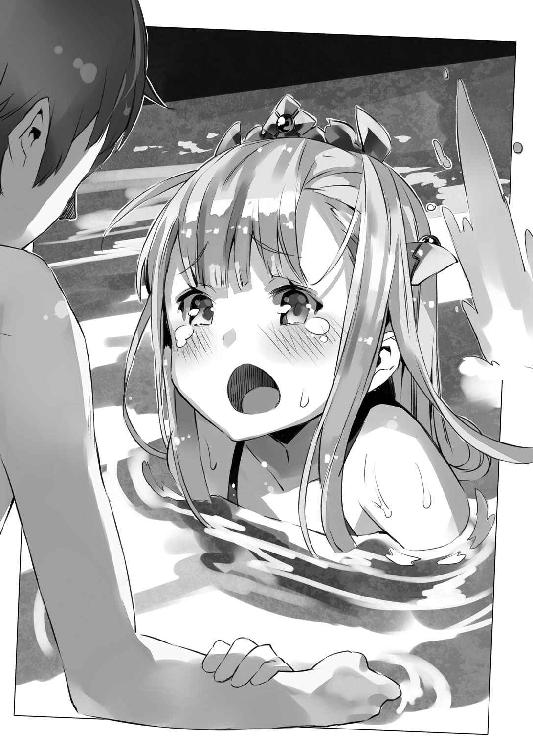
「だけどペトラルカ。確かに僕が教えるより、この国の泳法をミュセルに習った方が速いかもしれな──」
「黙れ痴れ者！ 妾はシンイチからニッポン式の水練を覚えるのじゃ！」
「は......はぁ......」
「ミュセル、少しは気をきかせい！」
「はい？ も、申し訳ございません！」
ミュセルはわけが分からないといった様子で目を瞬かせながらも、とりあえず頭を下げて引っこんだ。
「では練習の続きじゃ！ シンイチ、ちゃんと手を繫いでおるのじゃぞ！」
そう言うと、ペトラルカはまた僕の両手をしっかりとつかんできた。
ロリっ娘（疑似）皇帝陛下は僕の手を握りながら、やっぱり顔は水につけず、僕の方を見上げたままでバタ足をする。
「ほら、ちゃんと顔を水につけて」
「嫌じゃ！ こうしておった方が楽しい！」
「楽しい？」
「あ......いや、とにかく、汝は文句を言わずに妾の手を引いておれば良いのじゃ！」
「しょうがないなぁ......」
溜め息をつきつつも、僕は言われるままにペトラルカの手を引っ張る。
普段ペトラルカは皇帝という立場ゆえに、いろんなことを我慢している。それを考えたら、少しぐらいのわがままをきいてあげてもいいだろう。そもそも──他の人達は彼女のことを、一人の女の子である前に、皇帝陛下として見てしまうから、ペトラルカとしても迂闊なことを言えないのだろう。それがたまりにたまってこういう形で出ているのかも。
そして──
「慎一君！」
浜辺から僕を呼ぶ声が聞こえてきたのは、ペトラルカがようやく、顔をつけてのバタ足を覚え始めたときだった。
「............？」
僕はペトラルカの手を引いたまま、浜の方を振り返る。
その視界にまず飛び込んできたのは、黒いビキニの水着に包まれたボリュームたっぷりのおっぱいが、ゆさゆさと揺れながら急速に近付いてくる光景だった。
おおう。なんという重量感と躍動感。
年頃の健康な男子には、あまりに刺激的である。
「おおおお......」
本能を直撃する乳揺れの迫力に僕は思わず自分が今、何をしているのかを忘れた。
具体的には──摑んでいた手を放していた。
「はぶっ！ ごぼっ！ ごぼぼっ！」
はっ！ し、しまった！ 揺れるおっぱいに見とれて、束の間、ペトラルカの存在を忘れてしまった......！
「な、何をするか！」
なんとか僕の身体にしがみついてよじ登るようにしながら、ペトラルカが怒鳴る。
「ご、ごめん......！」
「絶対に放すなとあれほど何度も──」
「いや、ごめん、本当にごめん」
悪いとは思う。でもおっぱいが──おっぱいが僕を呼ぶんだ！ 揺れながらこの僕の名を呼んで近付いてくるんだ！ 男の子ならそのことで頭がいっぱいになっても仕方ないよね！ おっぱい無罪だよね!?
などと僕は脳内で、必死に、あまり意味のない自己弁護をしていると。
「慎一君、陛下！ 大変です」
駆け寄ってきたおっぱい......もとい、美埜里さんが、焦りの色を隠さずに言った。
「陛下、警護に当たっていた騎士の数が──減っています！」
「なんじゃと？」
表情を引き締めて叫ぶペトラルカ。
僕の身体にコアラみたいにしがみついたままなので、いまいち、間の抜けた格好になっているけど、それはさておき。
「詳しく話せ、ミノリ！」
「はい──それが」
美埜里さんが言うには──ガリウスがさきほど、確認にやったという女性騎士が帰ってこないため、改めて女性騎士を二人組で送り出したのだとか。その結果分かったのは、外周を警護していた男性騎士三十名の内、その大半、二十名が行方不明になっているということだった。彼らは三交代制で十名ずつ休みながら、それぞれの騎士が一定区域を担当し、警護していたのだが──いつまで経っても、先に警護に出ていた二十名が帰ってこないのだという。
「すると何か？」
ペトラルカが顔色を変えて言った。
「ガリウス直下の精鋭騎士二十名が、いつの間にか──残りの十名に気付かれることもなくいなくなったと？」
「ミノリの言う通りにございます、陛下」
そう言いながらもう一人、近付いてくるのは、裸執事──もといガリウスである。
「さすがに十名の男性騎士と、四名の女性騎士では、御料所全域を警護することには無理がございます。警護範囲を狭めたうえで、早々に撤収するがよろしかろうと」
ガリウスは目を細めて言った。
「敵の数も分からぬままでは、戦えません」
「『敵』──」
その言葉にペトラルカは目を丸くした。
「その男性騎士二十名と、女性騎士一名は、何者かに倒されたというのか？」
「いずれも武芸に秀で、忠誠心も篤い精鋭達にございますれば。勝手に──それも揃って持ち場を離れるようなことはありますまい。何者かに倒されたと考えるのが妥当かと」
「............」
僕達は顔を見合わせる。
予感は最悪の形で実現しつつあった。
敵が、近くにいる。それも精鋭の騎士達を二十人あまり、音もなく倒していくほどの力を持った──強大な敵が。
おそらくは現代の戦術と兵器で武装した兵士達が。
さもなければ、騎士達がこうもあっさり倒されるとも思えない。
しかし......
（そうだ。狙撃だ。どうして狙撃してこない？）
僕はそれがまず気になった。
何故、警護の騎士を徐々に減らしていく必要がある？ 僕達は無防備に浜や湖で遊びに興じていたんだから、その気になればいつだって狙撃はできたはずだ。
何故そうしない？
じわりじわりとこちらの戦力を削り取るような方法は──相手の意図が分からずひどく不気味だった。それとも殺すことは目的ではなく、僕達の内の誰かを、捕まえて人質か何かにするつもりなのだろうか。
人質......となると。
やはりペトラルカか、ガリウスか。
それとも、僕か。
ロイクやロミルダも貴族に準じる家柄の子弟だから、人質としては有効かもしれないけれど──二人がやってきたのは騎士達が減り始めた後だし、何よりも、本人達以外には、完全に予定外の行動だ。僕達が知らなかったことを、『敵』が知っているとも考えにくい。
しかし......
（人質にとったとして、それからどうする？ 神聖エルダント帝国と交渉する？ 今まで穏便にやってきたのにここに来て急に？ 首相交代で方針が変わった？ それとも──）
どうにも考えがまとまらない。
僕には『敵』の狙いがなんなのか、まるで見当もつかなかった。
昼だというのに──僕達の周囲は淡い闇に満たされていた。
生い茂った木の葉が陽光を遮っているのだ。幾条かの木漏れ日が差し込んでいるので、周囲の風景を見渡す程度のことは可能だが......どうにも視界が狭い印象がある。
しかも足下は柔らかい腐葉土に覆われ、一歩歩くたびに身体が沈み込むような感覚があるうえ、所々に立ち木の根が張っている。うっかりすると足を取られて転倒しかねない。
歩き回るには、およそ向かない環境だ。
こんな場所で警護を担当していた男性騎士達を思って、僕は心底同情した。
ともあれ──
「............ここからが正念場」
僕は身体についた砂を払いながら改めて辺りを見回した。
この辺りはあちこちに深く濃い茂みがある。
迷彩を施した敵が隠れていたら──すぐ隣にいても気付かないかもしれない。
僕は十五分ばかり前のことを思い出す。
............
姿の見えない『敵』に対抗するため、僕は一つの策を考えついた。
相手がもし自衛隊やそれに類する現代装備の部隊であるならば、普通に戦っても絶対に勝てない。逃げることすらできないだろう。その道のプロというのは、素人とはまったく別の生き物だ。真正面からやり合うなんて、愚策中の愚策だった。
だから僕達は非常識な方法を採ることにした。
すなわち──
「──エルビア」
犬搔きのくせに、左右に波飛沫が生じるほどの、ものすごい勢いで湖を泳いでいた獣っ娘を呼んで僕は言った。
「頼みがあるんだ。またさっきみたいに穴掘ってほしいんだけど」
「穴を掘るんすか？ 自慢じゃないけど穴掘りは得意っすよ！」
ふん！ と鼻息も荒くエルビアが言う。
「けど──なんでまた？」
「それは......」
美埜里さんがエルビアの垂れ耳をそっと摘まんで耳打ちする。
ゆっくりと──しかし明らかにエルビアの表情は緊張で引き締まっていった。
「分かったっす」
話が終わると、エルビアは大きく頷いた。
「アタシにできることなら喜んでやるっすよ！」
以下はその作戦概要だ。
まず第一に、敵の目を欺くため、僕らはあえて『普通に』遊んでいるふりをする。
その遊びというのが午前中にもやった『スイカ割り』だ。
先と同様にエルビアが砂浜に穴を掘る。
スイカ割りのときは、ここでエルビアが外に出てから僕が穴に入ったけれど──今度はエルビアは外に出てこない。彼女に続いて僕が穴に入り、美埜里さんとミュセル、それに女性騎士達が穴を埋める。
その間に僕はエルビアが掘り進めたトンネルの中を進んでいく。
穴を埋めた後、僕の頭に見立てたビーチボールにスイカ柄の帽子を被せ、ミュセル達はスイカ割りを始める。
これでたぶん、『敵』の目には僕が午前中と同様に身動きがとれない状態になっているように見えるはずだった。
そうして敵の意識を引きつけている間に、僕とエルビアは皆から離れたところで地上に戻り、いったん、ここまで来る際に使った羽車のところに移動する。そこには羽車の番をするために、リザードマンの夫婦、ブルークとシェリスが残っている。彼らと合流し、僕は『敵』の背後から迫る......。
正直、馬鹿馬鹿しくて普通は実行に移そうとも思わない策だろう。
けれど、あいにくとここは日本ではなく、異世界、神聖エルダント帝国だ。リザードマンやウェアウルフが当たり前のように闊歩している世界で──彼らの能力は、現代日本の常識ではおよそ、計り知れない。
実際、エルビアのトンネル掘りの技術は、見事としか言いようがなかった。
半時間近く掛かるんじゃないかとか、途中で生き埋めになったりしないかとか、いろいろ不安があったのだけど──そのどれも現実になることなく、僕達は森のすぐ傍まで地下を通って移動し、そこで地上に出た。
「上手くいってよかったっすね！」
土と砂だらけの顔いっぱいに笑顔を浮かべてエルビアが言う。
「アタシの穴掘りが役に立って嬉しいっす！」
「で──あっしらは、その『敵』を捜せばいいんですな？」
と尋ねてくるのは、ブルークとシェリス、リザードマン夫婦だ。
僕達の側に使えるもう一つの『非常識』──それが彼ら、正しくは彼らの感覚だ。
爬虫類は一種の赤外線センサーを身体の器官として持っている。
いわゆる『ピット』と呼ばれるものだ。これを使って捜索すれば、たいていの生き物は隠れていても察知できる。普通の迷彩服だのなんだのでは、彼らの感覚をごまかすことはできないのだ。
「そう。頼むよ──君達でないと、できないことなんだ」
「旦那様にそうまで言われちゃ、張りきらざるを得ませんや。なあ」
「そうね」
ブルークとシェリスは頷き合う。
リザードマンの表情は、エルフやウェアウルフのそれと違ってとても読みにくい。
だけど、僕にはなんとなくブルークがにやりと笑っているような気がした。
「ご期待に添えるよう頑張りやす」
「それじゃあ、予定通りに二手に分かれよう。ブルークは僕と、シェリスはエルビアと一緒に行動。何かあったら大声で知らせるんだ。くれぐれも自分達だけでなんとかしようなんて思わないこと」
「分かりました！ シェリスさんはアタシがきっちりお守りするっすよ！」
「気持ちはありがたいですが、自分の身は守れますよ」
とシェリスが言った。
確かにリザードマンも獣人──人間よりも身体能力は高い。弱点と言えば寒さに弱いことだけど、この夏場では関係のない話だ。
「じゃあ──」
僕達は森の中で左右に分かれた。
森は──湖の浜に沿って南北に広がっている。僕とブルークは北半分を、エルビアとシェリスは南半分をそれぞれ捜索することになっていた。
「............」
僕はブルークと一緒に森の北側へと足を進める。
次第に濃くなっていく──闇。
昼だというのにひどく暗い。真っ暗で一メートル先も見えない──というわけでもないけれど、暗いところにある茂みなどは、よく目をこらしても何が潜んでいるか分かりにくい。
こんなところに、もし迷彩を施した人間が待ち伏せていたら、可視光線しか感知できない僕には、どうしようもないだろう。
「ホント、ブルークとシェリスがいてくれて助かった」
「そんなに持ち上げられると、さすがのあっしも、照れますぜ」
と顔色一つ変えずにブルークは言う。
「持ち上げるも何も本当のことだしね」
「......本当に旦那様は変わったお方で」
そんな会話を、時折、思い出したかのように交わしながら──僕達は、暗い森の中を、ブルークのピットの感覚を頼りに捜索して歩く。
やがて──
「旦那様......」
ふと立ち止まって、ブルークが言った。
「あっちに何やら人間と同じくらいの温度を感じやす」
「人数は？」
「詳しくは分かりやせんが......一人二人じゃありやせんぜ」
敵なのか、それとも味方の騎士か。
それは現状では分からない。
とりあえず、まっすぐ接近するのは避けた方がいいだろう。
「少し迂回して、裏から近づこう。敵だとやっかいだ」
「仰せの通りに」
ブルークは歩く方向を変えると、ちらりと僕の方を見て頷いてきた。『ついてこい』という意味──そしてここから先は無言で、という意味だろう。
彼はもともと戦士だったと聞くし、ここはブルークの判断に任せた方がいい。
僕達は、さっきまでの進路から大きく左に迂回し──ブルークの言う人間と同じくらいの『熱源』へと近づいてゆく。
できるだけ物音を立てないように、衣擦れの音にも気を遣いながら。
「............」
静寂が──重い。
直射日光がないから涼しいはずなのに、額に嫌な汗が滲んでくる。
敵でなければいい。味方の騎士ならば問題はない。
だが──もし敵が待ち伏せていたら？
僕は今一人じゃない。頼もしい味方──ブルークがいる。
だけど、彼はさっき「熱源は一人二人じゃない」と言った。
それが本当なら、いざ戦闘になっても勝ち目は少ない。だからここで戦おうとは僕も思っていなかった。むしろ僕が一緒ではブルーク達の足を引っ張りかねない。
だから僕が考えていたのは、最低限の確認だった。
「............」
ブルークがふと足を止めて、茂みの向こうを指差した。
『あそこだ』という意味だろう。
口から出入りする舌の動きが激しい。彼も緊張しているんだ。
「............」
ふと僕は、その茂みが気になった。
不自然というか──どうもその部分だけとってつけたような違和感がある。周囲から浮いているとでも言おうか。
ひょっとして罠？
それとも──
「............」
ブルークがこちらを振り返って押さえるような仕草を見せる。
ここで待っていてくれ、ということだろう。
僕は頷いてその場にしゃがみ込んだ。
これを確認すると──ブルークはゆっくりとその茂みに近付いていく。
そっとブルークが手を伸ばして茂みをかき分けると──あっさりと、それは左右に動いた。
やっぱりだ。これは適当に灌木の枝葉を集めて作った即席の偽装だ。
「............」
ブルークがこちらを振り返ってくるので、僕は頷いて彼を促す。
『茂み』を作っている枝葉はゆっくりと取り払われていき──
「──！」
その下に見えたのは、倒れている騎士達の姿だった。
中には水着姿の女性騎士もいる。なんの意味があるのか、全員、腐葉土の上に敷いたシートの上に寝かされていた。
「やっぱり──」
僕はブルークの傍に近寄ると、倒れている女性騎士の手を取って、その脈を測ってみた。脈はある。まだ生きている。心臓は動いているのだ。身体も温かい。
だけど──
「うん......？」
ブルークが男性騎士の一人を起こそうとして──首を傾げた。
拳の大きさほどの、暗緑色の硬い塊。
それを僕は雑誌か何かで見た覚えがあった。
手榴弾だ。
「下がれ、ブルーク！ これは罠だ!!」
戦争映画なんかで見たことがある。
死体の下に手榴弾を仕掛け、助けに来た相手を吹き飛ばすというアレ......！
僕は後ろに走るようにして、その手榴弾から距離を取った。
ブルークも僕と同様、一歩後じさったが──次の瞬間。
「うおっ!?」
彼の身体は空中高く舞っていた。
いや。違う。自分から跳躍したのではない。
彼は逆さまに『吊り下げられて』いた。
そう──樹の枝のしなりと、ロープを使った、古典的ともいえる『罠』だ。
「ブルーク!!」
宙吊りになったブルークに気を取られたのはほんの一瞬のことだった。しかし、『敵』にはその一瞬で充分だったのだ。
背後から何かが──たぶん、ナイフだ──僕の首筋に突きつけられる。
「動くな」
冷たい男の声が、そう命じる。
それは──日本語だった。
（やっぱり......！）
敵は自衛隊だったのだ。
「くっ......」
声を上げても──おそらくミュセル達には届くまい。そして僕達は殺される。それだけだ。単なる無駄死にである。
見ればブルークにも藪を切り払うためのものらしい、大ぶりの刃物──いわゆるジャングルナイフが突きつけられている。彼に助けを求めるのは、およそ現実的ではないだろう。
駄目だ。もう打つ手がない。
まさしく万事休す。
僕はここで殺されるのか。
絶望感が僕の後頭部にのしかかる。
そして──
湖畔には異様な光景が繰り広げられていた。
「......何これ」
そこにいたのは、迷彩服姿の屈強な自衛官達が......十人あまり。
彼らは何故か、一列になって地面に正座していた。
でもってその前に仁王立ちして彼らを睨み付けているのは──黒いビキニ姿の童顔巨乳眼鏡っ娘、つまりは性別こそ違えど、こっちも自衛官だった。
美埜里さんである。
でもって彼女の背後に傲然とそびえているのは、巨大なドラゴン──ではなくて、そのモドキ、すなわち、〈フェイドラ〉だった。以前、ロイクとロミルダが創り上げた神聖エルダント帝国謹製の魔法ロボット......というか可変式機動メカだ。
どうも今回も、二人はこれに乗ってきたらしい。
この時点で充分にシュールな絵だが......さらにそれを異様に見せているのが、正座組全員の左胸に、鈍く銀色に光っているバッジだった。
『ダイヤモンドに月桂冠のマーク』──すなわち、レンジャー徽章。
前述の通りそれは陸上自衛隊の精鋭たる証だ。
各種の技能資格のなかでも、とりわけ厳しい訓練で有名だ。レンジャー徽章を取るためには、三ヵ月にわたる長く厳しい訓練に耐える体力と、強靱な精神力が必要だと聞く。
教官に何を問われても、どんな罵声を浴びせられても『レンジャー！』と答え、口答えすることは許されないとか、最後の四日間はほとんど不眠不休で戦闘状況の行軍をするとか......
どこまで本当かは知らないけど、自宅警備員だった僕には想像もつかない世界だ。
そんな『男の中の男』達の前には、ずらりと『装備』が並べられていた。
本来ならば自衛隊の制式小銃である89式の代わりに置かれているのは──これは。
「......カメラ？」
さすがの僕も驚いてそう呟いていた。
狙撃銃みたいな銃把やら銃床やらが付いた超望遠レンズ付きの──写真機。おそらく僕が見た『光』はこれだ。
他にも完全防水の高画素数デジタルカメラとか、同じく防水処理されたハイビジョンビデオカメラとかがずらりと並んでいる。
えーと。
つまりこれは......
「ひょっとして盗撮？」
「......シンイチ様！ おかえりなさいませ」
と言いながら駆け寄ってくるのは──自衛官達から少し離れた場所でその様子を眺めていたミュセルだった。ペトラルカ、ガリウス、それに四名の女性騎士もいる。
「ご無事でしたか！」
「いやまあご無事も何も──」
実を言えば──もともと僕らは陽動部隊だった。
いくらブルークが屈強で、エルビアやシェリスに腕力があったとしても、相手が自衛隊ならば、まともにやり合うのは得策ではない。相手が銃を持っていたら──間違いなく殺される。
だから僕達は、まず偵察を兼ねて先行することになった。
だけどそれすらも察知されてしまう可能性はある。なので察知されてしまった時点で斥候としての僕らの役割は、自動的に陽動のそれに切り替わる。敵の目が僕らの方に引きつけられている間に、ロイクとロミルダがフェイドラのところまで行って、これを引っ張ってきて、この地域から脱出する──というのが大本の計画だった。
ロイクとロミルダは、騎士達が行方不明になっている後も、敵の包囲網を素通りしてきていることから、動いても特に注目されないだろうと踏んでいたのだ。
「あれから、フェイドラをお二人がここまで持ってこられたのですが」
とミュセルが説明してくれる。
「その途中で風の魔法が──湖の水に作用して、湖面が荒れたんです」
で、たまたま水面下で近付いてきていた自衛官達の姿が露わになってしまった──と。
意外なことに、自衛官達はその接近に気付かれた時点で、ゲームオーバーとばかりに両手を挙げて投降したのだという。
いったい、何がしたかったのか。
どうも、もともと銃器の一丁すら持っていないようで、代わりに彼らが抱えていたのはいずれも撮影機材である。偵察任務だったとしても、これは偏りすぎのような気がするけれど──
「──佐藤一尉」
美埜里さんは静かな笑顔で言った。
ただし眼鏡の奥のその目は笑っていない。
「どういうことか説明していただけますか？」
組んだ腕でビキニに包まれた胸が持ち上げられて、それはそれはけしからん絵面なんだけど──たぶん、今の美埜里さんに迂闊なことを言おうものなら、弁解の暇もなく半殺しにされそうだった。武器の一つも持っていないのに、明らかに、迷彩装備の自衛官達よりも迫力があるのは──たぶん、その背中から立ち上る怒気のせいだ。
「何か言い訳することがあるなら、今の内にお伺いいたしますが？」
「あー......」
気まずそうに声を上げた自衛官の顔には、見覚えがあった。
顔中にドーラン塗って迷彩してるけど、この人、このあいだ的場さんと屋敷に来た佐藤一尉だ。彼は頰を人差し指で搔きながら、こう続けた。
「まあ、落ち着け、古賀沼」
「落ち着いてますよ。でも本当に洒落になってないですよ──これ。慎一君は前に特殊作戦群にマジで襲撃されてるんですよ!? こんなことされたら、私や彼がどれだけ不安になるか、ちょっと考えたら分かることでしょう!?」
「確かに君の言う通りだが、我々にも理由があったのだ！」
「どんな理由だか聞かせてくださいませんか、佐藤一尉？」
言葉そのものは丁寧だが、完全に美埜里さんが佐藤一尉を叱り飛ばしている図だ。
階級社会の自衛隊では、一等陸士の美埜里さんと一等陸尉の佐藤さんでは、天と地ほどの隔たりがある。本来は一兵卒の美埜里さんが幹部である佐藤一尉にこんな口をきくことなど許されないはずなんだけど──
「理由は君だ。古賀沼」
佐藤一尉は立ち上がって背筋を伸ばし、軽く咳払いすると、美埜里さんの胸元を見ながらそう言った。
「......私？」
「そう。正確には君のその、身体だ！」
拳を握り締めて佐藤一尉は力説した。
「......はいィ？」
「自覚はないかもしれんが、君はエルダント派遣部隊の中でも隠れファンが多くてな」
佐藤一尉はしみじみとした口調に切り替えて言った。
「君が加納君達と海水浴──いやこの場合は湖水浴か、とにかく、泳ぎに行くと聞いて、多くの者が是非とも君の水着姿の写真がほしい、と......！」
「............」
美埜里さんは絶句中。
それをどう思ったか、佐藤一尉は大きく頷いて言った。
「で──同じ時期に休暇を取る我々に、『写真を撮ってきてほしい』と頼み込んできたのだ。かくいう私も君が水着になると聞いてはいても立ってもいられなくてな。その君のけしからんほどに豊かな胸が、胸が、こう、水着に包まれて揺れる様を想像すると──たまらんというか！」
一歩間違うと途方もなく恥ずかしい告白を堂々と口にする佐藤一尉。
うーん。漢だ。
「話がまとまれば後は早かった。我々の結束も固かった。急遽、日本から撮影機材を取り寄せて──中にはロシア製のこんな撮影器具まで手に入れてな」
と佐藤一尉が示すのは、例の、狙撃銃みたいに銃把と銃床がくっついたカメラ用のアダプターだった。
「これが小銃に慣れた我々には実に撮りやすく──」
「............」
美埜里さんは無言で足を上げると──ビーチサンダルを履いた足を、ものすごい勢いで、くだんのカメラの上へと降ろした。ばき、と耳を覆いたくなるような危険な音とともに、やたらに長い望遠レンズが中程から折れ曲がる。
うわぁ......
「こ、古賀沼！ そのカメラがいったいいくらするか......」
「やかましい！」
喚く美埜里さん。
彼女の破壊行為はそれだけでは終わらなかった。
プロ仕様の高画素数デジカメが......ハイビジョンビデオカメラが......買い揃えるだけでいったいいくらかかるか分からない『道具』達が......怒れる美埜里さんの手でいとも簡単に壊されていく。カメラ本体だけではない。記録用のメモリーカードもスロットから取り出され、完膚なきまで砕かれた。
美埜里さんの場合、ただ踏んだように見えても、それはもう『技』だ。真下に降ろす蹴りなのである。格闘技有段者のそれを喰らえば、精密機械など、たまったものではない。
「ああああああ......！」
佐藤一尉のみならず、他の自衛官達も腰を浮かして悲鳴じみた声を上げる。
「ああ......我々の血と汗と涙の結晶が......」
僕は見た──佐藤一尉の瞳に涙が浮かぶのを。
この人、本当に美埜里さんの水着写真がほしかったんだなぁ......
「佐藤一尉......いえ、他の人も！」
破壊の限りを尽くした美埜里さんが、ゼエゼエと肩で息をしながら目の前で正座している自衛官達を怒鳴りつけた。
「レンジャー技能の無駄遣いもいい加減にしてください！ 皆、こんなことのために地獄の三ヵ月の訓練を耐え抜いてその胸のバッジを手に入れたって言うんですか!? それに第一、もしこんなことして国際問題にでもなったらどうするんですか！ エルダントと日本で戦争になったら、どう責任をとるつもりなんですか！」
「むっ......」
佐藤一尉が怯んだように身を反らす。
だが──
「確かに短慮だったことは認めよう。だが古賀沼、レンジャー技能の無駄遣いという一点に関しては我々は否定するぞ。これは決して無駄遣いなどではない！」
佐藤一尉は涙を拭いて胸を張った。
男らしいんだか情けないんだかよく分かんないな、この人。
「我々が撮った君の写真が、どれだけ我らの心に潤いをもたらすか、我々の士気を高めるか、君には分からないのか！ これは......そう、これは、男の浪漫なのだ！」
「わかるかいッ!!」
次の瞬間、美埜里さんの鉄拳が佐藤一尉の顔面にまっすぐめり込んでいた。
まあ──そういうわけで。
あの湖畔での一件から、数日が過ぎていた。
「──先日は、どうも」
そう言って僕は自衛官の一人に一礼した。
僕は〈アミュテック〉の仕事の関係で、練兵場の一角の自衛隊駐屯地を訪れていた。
今日は先日、発注をかけた品物が送られてくる予定になっているからだ。美埜里さんはまた新作のＢＬ本を発注していたみたいで、練兵場に着く前からそわそわしており、羽車から降りたとたんに、コンテナの方に飛んでいってしまった。
そして──
「ああ。君か」
と苦笑を浮かべるのは、例の佐藤一尉だった。
ちなみに彼は美埜里さんに思いっきり顔面をぶん殴られたはずだけど、今はもう傷一つなくけろりとしている。まあ普通の人間とは鍛え方が違うんだろう。
彼の隣には珍しく、的場さんの姿もある。
やっぱり佐藤一尉は的場さんの護衛役なんだろう。
「そうだ。君にも訊いておくか」
佐藤一尉がふと思いついた様子で言って──僕の方に顔を寄せてきた。
「良い写真があるのだよ。買わないかね」
「はい？ ......写真って」
それってまさか。
「買います」
「即答だな」
苦笑しつつも、佐藤一尉は差し出した千円札二枚と引き替えに、数枚の写真を手渡してくれた。思った通り、くっきりはっきりと美埜里さんのビキニ姿を写したブロマイドである。
しかし──
「佐藤さん」
「なんだね？」
「あのとき美埜里さんにカメラとか全部壊されましたよね？ 確か内蔵のメモリーカードも全部破壊されてたような......それなのに、どうしてこの写真があるんですか？」
「ああ、そのことか」
佐藤一尉は、わずかに口の端をつり上げると、少し得意げな口調で言った。
「その様子では気付かなかったみたいだな。君達と接触した我々とは別に、もう一班──全部で三班が動いていたことに」
「えっ!? マジ？」
僕が驚く顔がそんなに面白かったのだろうか──佐藤一尉は声を殺して笑う。
「写真を撮るための本隊は実はそちら。我々は陽動部隊だったんだよ。ついでに言えば、メモリーカードには通信機能が付いていたからね。撮影したら片っ端からライトアーマーに積んだ簡易サーバーに転送されてた。だから破壊されてもデータは残るって寸法だよ」
なんという用意周到さ......！
というか、僕はいまさらながらに、陸上自衛隊の練度の高さに驚かされた。彼らが本気なら、僕は間違いなくあの湖で殺されていただろう。実際、警護の騎士達はわずか一、二時間の内に壊滅状態に陥っていたのだし。
以前、特殊作戦群をエルダント側で撃退できたのも、彼らが単にこちらの世界に慣れていなかっただけで──充分にこちら向けの訓練を彼らが積んできていれば、結果は逆になっていたに違いない。
それを思うと僕は冷や汗が出てきた。
「まあ、陽動も戦術の内っていうことさ。私達は腕試しもできるし、彼女の写真も手に入れられるしで大満足さ」
「水着写真のためにそこまでやるとは......陸上自衛隊恐るべし」
そこまで言ってから──
「しかし、よく問題になりませんでしたね、的場さん」
僕は的場さんの方を向いてそう尋ねた。
「問題とは？」
「佐藤一尉達はこの写真を撮るために動いたって言ってますけど──騎士達は実際に気絶させられたりしてたわけですし、事情を知ったら、エルダント側から抗議の一つも来るんじゃないかって......」
「ああ......」
的場さんは佐藤一尉と顔を見合わせて苦笑した。
「まあ、もう言ってしまっても良いか」
的場さんは改めて僕の方を見て言った。
「あれはエルダント側も承知のうえのことだったから、問題にはならないんだよ」
「え？ 承知のうえ？」
「騎士達には知らされていなかったがね。あれは自衛隊から、エルダントの騎士団に対しての『戦術教導』だったんだよ」
「戦術教導？ なんですかそれ？」
「簡単に言えば『戦い方を指導する』ことだよ」
僕の疑問に答えてくれたのは、佐藤一尉だ。
「コルドバル卿をはじめエルダント帝国の重臣達は、自衛隊の現代戦術に興味を持っていたんだ。我々はドラゴンを倒した実績もあるからね」
「あ......」
そう。僕達が映画撮影をしていたときのことだ。
自衛隊は騎士団と魔法使い達が束になってかかってもなかなか倒せないドラゴンを、ほぼ無傷で倒してみせた。エルダント側にしてみれば、興味を覚えて当然だろう。
「当初はそれが武器の違いだけだと思われていたみたいだがね。最近になって『武器だけが違うようではない。戦い方そのものが違うのだ』と気付いたらしい。そこで我々に声が掛かったというわけさ」
「でも、それって日本政府の方針と反してませんか？ それに、法律的な問題とかいろいろありそうな......」
「いや、政府もこの件については前向きだった」
と的場さんは肩を竦める。
「でなければ彼らが動くことはできないよ」
政府も前向き？ それはいったいどういう理由で？
「特殊作戦群がエルダント帝国側の戦力に制圧された一件があったろう？」
皮肉げな口調で的場さんが言う。
「あの一件で、エルダント帝国側には、少々自衛隊の実力を低く見積もっている──いわば『舐めている』者達もいたようでね。だから、これは戦術教導であると同時に、我々の示威行動でもあったということだよ」
「示威行動......」
「で、自衛隊としては君の言う通り法的な問題もあって具体的な戦術教導はできない。我が国は戦争を放棄した平和国家だからね。だが、その一方で、コルドバル卿は自衛隊の現代戦術を知りたい。そして、自衛隊としても実力をエルダント側に示しておきたい。そこで『模擬戦』という形での戦術教導を行った、というわけだ」
「それって、限りなく黒に近いグレーな気がするんですけど......」
「エルダント側は自衛隊の戦術を生で見ることができ、我々としては自衛隊の実力をエルダント側に見せることができる。両方とも得をする話だったわけだよ」
「はぁ......」
相変わらず水面下ではいろいろとえげつないやりとりがされているらしい。
政治的な駆け引きはさっぱりの僕としては、ただただ、呆れるしかない。
良くも悪くも、日本政府はいろいろと考えているようだ──などと、僕が感心していると。
「先生!! サトウさん!!」
練兵場の方から聞き慣れた少年の声が響いてきた。
「あ──ロイク？」
そう。それはエルフの少年──ロイクだった。
「駐屯地に来るなんて、どうしたの？」
ロイクは佐藤一尉の前に走り込んでくると、僕の問いは無視し、代わりに、佐藤一尉の襟首を摑まんばかりの勢いで尋ねた。
「サトウさん！ ここでミノリ先生の『お宝絵』を売っていただけると聞いたのですが！」
「......ふむ？」
佐藤一尉はにやりと笑うと、ロイクの肩をがしっと抱えた。
「よく聞きつけたな、君」
「僕の、ミノリ先生への情熱は不可能を可能にします！」
「見上げた心意気だ。それで......いくら出す？」
「ま、まずは現物を、現物を見せてください！ 話はそれからです！」
「いいだろう。ブツは......これだ」
佐藤一尉は懐から数枚の写真を──瑞々しい美埜里さんの素肌も露わな水着写真を取り出して示した。
「こっ......これはっ！ この前のミノリ先生の大胆な水着姿！ 記憶に留めておくだけのつもりだったのに！ やはりニッポンの技術はすごい！ こんなに鮮明な『絵』を......！ どんな『かめら』を使ったんですか!?」
ちょっと興奮しすぎでヤバいんじゃないかという勢いで、ロイクが美埜里さんの写真を一枚一枚、舐めるように見つめる。
「ああ、これも、これも、これも、これも！ どれもこれも甲乙つけがたい！ 素晴らしい『絵』です！」
「......ふーん、どれが素晴らしい『絵』なの、ロイク？」
「そんなの、すべてだよ！ 小遣いをすべてつぎ込んでも惜しくない！ さすがはニッポン製の魔法具だ！ お前もそう思うだろう、ロミルダ──」
と半ば無意識にそう答えてから。
「......はっ!?」
ロイクは血走った目を写真から引きはがし、背後を振り返る。
僕とロイクの間──つまり彼の背後に、小柄なドワーフの少女が一人、腕組みをしながら立っていた。
「お前、いつの間に!?」
「この......変態エルフッ!!」
「ごぶぁっ!?」
少女とはいえ、剛力で知られたドワーフの一撃だ。細身で体重の軽いロイクは軽々と宙を舞い、顔面から地面に突っ込んでいた。
あ。痙攣してる。
「このストーカーエルフはこっちで片付けますから」
そう言ってロミルダはロイクの襟首を摑んでずるずると引きずっていく。
そんな彼らを呆然と見送ってから──僕と佐藤一尉は顔を見合わせて、苦笑した。
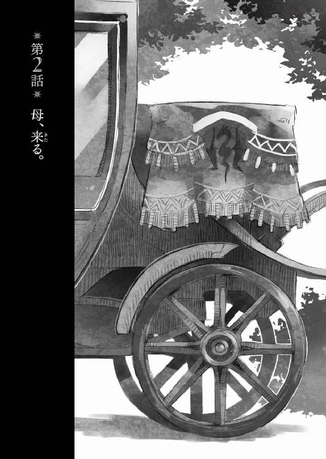
慎重に。丁寧に。
私はゆっくりと──細心の注意をもって眼球を摘まみ上げます。
力を入れすぎて潰れてしまっては、元も子もありません。かといって、つるりとしたその表面は滑りやすく、緩く摘まむだけでは滑って持ち上げることができません。実を言えば、すでに二つばかり強く摘まみすぎて潰してしまい、一つは運ぶ途中で落としてしまい、やはり潰れてしまいました。許される力加減は、ごくごく狭い範囲でしかないのです。
息を詰めたまま、私は眼球を顔の上に載せます。
あらかじめ存在した窪みへと──眼窩へと、それは自然に納まってくれました。
「............」
私は安堵の溜め息をつきます。
眼球は揃いました。ですがまだまだ先は長いです。何しろ鼻も口もまだなのですから。
白い顔の上に私はあらかじめ切り出してあったそれらを、同じく細心の注意をもって配置していきます。眼球ほどに繊細なものではないですが、それでも、細かい部品であることに変わりはありません。思わず震えそうになる両手で、強すぎず、弱すぎず、微妙な力加減で摘まみ上げては、その顔の上に下ろしていきます。
「はぁ......はぁ......」
かなり──人の顔に近付いてきました。
けれど私は改めて思い知らされました。人の顔というものが、どれだけ微妙な均衡の上に成り立っているのかということを。目鼻や口、耳、それら部品の大きさ。部品それぞれの配された位置。さらには顔の輪郭を成す曲線。そういったものが少しでも崩れると、それは似ないどころか、異形の怪物にすらなってしまいます。
そして──
「できた......」
私は額に浮いた汗を拭って呟きます。
私の目の前には一人の少女の顔がありました。
ばらばらの部品から必死に、組み立てていった人の顔。
何もなかった白い輪郭の上に、目が、鼻が、口が、耳が、髪が、配置されて人としての顔を成り立たせています。
しかし......
「アタシもっす！」
そんな明るい声に──私はふと隣へと目を向けました。
私の隣で作業をしていたのは、エルビアさんです。
エルビア・ハーナイマン。
獣人族──つまり獣のような耳と尻尾を持つ種族の女の子です。ただ黙って立っているとやや地味な印象なのですが、笑うと、とたんに華やかになるというか......本当に天真爛漫、といった可愛らしい雰囲気になります。
今、彼女のもふもふとした尻尾が、忙しなく振られているのは上機嫌の証。
どうやら彼女の方は満足のいく仕上がりのようでした。
「どうっすかね？」
と彼女は私に意見を求めて首を傾げます。
私は彼女の手元を覗き込みました。
そこには──
「............！」
二人の少年の姿がありました。
乱れた服のまま密着している──少女のように繊細な容姿の、しかし男の子達。
小さな弁当箱の中に、これでもかといった感じで丁寧に、丁寧に、描き込まれたその姿は、今にも動き出しそうで、その服の間から露わになった肌には、艶めかしささえ感じられます。いえ。今にも少年同士の、禁じられた愛の言葉が聞こえてきそうです。
とんでもない仕上がりでした。
同じ道具と同じ材料を使いながら、何をどうしたら、こんなことが可能になるのでしょう？
私がただただ呆然とそれを見つめていると......
「や、苦労したっす。でもなかなか上手にできた気がするっすよ！」
エルビアさんはそう言って朗らかに笑いました。
対して私は──
「そう......ですね......」
曖昧に頷きながら、自分の前に置かれた弁当箱に視線を戻しました。
それは『魔法少女』でした。『レンタル☆まどか』の主人公『まどか』の顔であるはずでした。髪はきちんと薄紅色だし、髪飾りのリボンも付いています。大きく円らな瞳も同じです。
しかし......エルビアさんの『作品』を見てしまった後では、それはあまりに不格好に見えました。女の子どころか、少し角度を変えれば、怪物のようにすら見えてしまいます。画家の作品と子供の落書きほどにも差があります。
私は、なんだか哀しくなってきました。
私以外の誰かがこれを見て『まどか』だと分かってくれるでしょうか？
この弁当箱の中身が『レンタル☆まどか』の『キャラ弁』なのだと......
「............はぁ」
自信がなくとも、今から作り直している時間はありません。
散らかった包丁や篦といった台所用品を片付けながら、私は溜め息をつきました。
座席越しに伝わる車輪の振動を感じながら、私は窓の外を眺めます。
快晴の蒼天がどこまでも広がり、雲の間を精霊の群れが飛んでいく姿が見えます。今日も穏やかで過ごしやすい日になることでしょう。
しかし......
「シンイチ様とミノリ様、喜んでくれますかねえ」
向かいの座席に座るエルビアさんが笑顔でそう言ってきました。
笑顔を浮かべる彼女の膝の上には、さきほど彼女が作った『キャラ弁』──食材を使ってマンガやアニメの登場人物の姿を描いたもの──が載せられています。そして私の膝の上にも私が作ったキャラ弁があります。
私達は今、羽車に乗って、旦那様であるカノウシンイチ様と、シンイチ様の護衛を務めておられるコガヌマミノリ様のいる学校へ向かっています。くだんのキャラ弁を、お二人にお届けするためです。
ちなみに私が作ったお弁当はシンイチ様用。
エルビアさんが作ったお弁当はミノリ様用。
どちらも描く内容は異なれど、同じお弁当箱で、同じ食材と、同じ道具を使って作ったものなのですが......
「エルビアさんのお弁当......すごくお上手でしたよ」
と私は素直にそう言いました。
もともと絵師であるエルビアさんが、絵が上手なのは当然なのです。しかし使い慣れた絵筆ではなく、包丁や篦といった調理道具で、しかも柔らかさや色合いがそれぞれ異なる食材を用いて作るとなると、随分と勝手が違うはずなのです。
だからこそ、初めてでありながら、あれだけの仕上がりを見せるエルビアさんのキャラ弁に私は驚いたのですが......
「きっと喜んでもらえます」
「そっすかね？」
えへへ、と頰を搔きながら笑うエルビアさん。
彼女の素朴な明るさが、今の私にはとても眩しいです。
「......それに比べて......私のお弁当は......」
もともと私は、あまり手先が器用な方ではありません。
なので料理そのものはともかく、細工物はあまり得意ではないのです。
大貴族様にお仕えするような専門職の料理人は、お客様にお出しする料理に、野菜で作った動物や人形を添えたり、果ては食材でお城や塔といった壮麗な建築物まで作ってしまう場合があるようですが......私は、そうした技術を習う機会がありませんでした。
それでも料理ならなんとかなるかも。
そう思ってシンイチ様達がお話しされていたキャラ弁に挑戦してみたのですが。
結果は──先の通り。改めて作り直している時間はなかったので、持ってきてはいますが、エルビアさんのキャラ弁を見てしまった後では、私のキャラ弁がどうにもみすぼらしいものに思えて仕方ありません。こんなものを本当にシンイチ様にお渡しして良いのかと不安すら覚えます。
しかし──
「だ、大丈夫っすよ！」
エルビアさんが慌てた様子で言いました。
「あ、味は絶対にミュセルの方が美味しいんすから！」
「料理というのは、見た目や匂いも味の内なんです......」
人の感覚──それも一つ一つの感覚というのは、あまりあてにならないものです。まったく同じ味でも、汚らしく盛りつけられたものと、綺麗に盛りつけられたものなら、後者の方が美味しいと感じることはままあるのです。
「や、その、今回はキャラ弁だからっすよ。ほら、アタシ普段絵ばっかり描いてるから。それと同じ感じっす」
エルビアさんの言いたいことは分かります。
確かにキャラ弁は絵心を必要とします。そもそも普通の絵すら描けない者が、料理道具や食材を使って絵を描くなどということには──専門の道具ではないものを使って絵を描くこと自体に、無理があるのです。
しかも今回のキャラ弁に関しては......個々の素材は基本的に同じものです。
もともとキャラ弁は、私が最初に一人で作っていました。その様子を、偶然、通り掛かって見かけたエルビアさんが、『面白そうっすね。ちょっとアタシもやってみていいすか？』と言い出したのが一緒にキャラ弁作りをしたきっかけでした。なので、実際にエルビアさんがしたのは、食材をお弁当箱に詰める作業のみです。
組み合わせの問題は生じてくるかもしれませんが、使われている食材に味の差はほとんどないはずです。
「味は絶対にミュセルのが美味しいっすよ！」
念を押すように、拳を握り締めてエルビアさんは言います。
気を遣ってくれているのでしょう。彼女は話題を逸らそうとするかのように、しばらく『ええと、ええと』とあらぬ方を見て悩んでいましたが......
「そういえばミュセルは──昔から料理とか得意だったんすか？」
首を傾げてそう尋ねてきました。
「いえ。あまり......ただ軍にいたときは炊事を担当していましたから......」
軍隊といっても、全員がひたすら剣や魔法で戦うことしかしないわけではありません。長期の遠征となると当然ながら、炊事や洗濯も必要になってきます。そしてたいていの場合にそうした作業は、最前線での戦闘を担当する者とは別に、専門の役目の者を置いた方が何かと便利なのです。最低限の剣術と攻撃魔法は当然、教わりましたが......私がいちばん、軍で学んだのはそうした炊事の類でした。
「ちょっと工夫して一手間増やすだけで、皆がすごく喜んでくれて......」
当然、軍の食事というのは『兵隊が戦うための体力を維持する』のが目的です。だから量や栄養がまず第一で、味は二の次ということが多いのですが──一手間増やすだけでも、味は変わります。
行軍や戦闘でどうしても殺伐とした空気になる中、『今日の飯は誰が作った？』と皆が笑顔で驚いてくれるのが、とても嬉しかったのを覚えています。たいていは私の上官の『お手柄』になってしまったのですけれど──それでも。
「作るのが楽しくて......」
「楽しいって思えるのがすごいっすよ」
微苦笑を浮かべる私に、しかしエルビアさんは顔をしかめて言いました。
「キャラ弁は楽しかったっすけど。基本、アタシは料理自体、駄目で」
「やってみれば楽しいですよ？」
煮炊きの加減は、結局、経験です。
絵のように、描いた端から結果が見えるものではないのですが......だからこそ思い描いた通りの味が出せたときには、嬉しさはひとしおです。
「そうっすかねー」
腕を組んで唸るエルビアさん。
「というか、これはそういう血だと思うんすよ」
「血......ですか？」
「そっす」
何やら大袈裟な仕草でエルビアさんが頷きます。
「永い間受け継がれてきた、血っすよ血！ うちは料理が不得意な血脈なんす！ 母様はもちろん、ジジ姉もアマ姉も、料理は苦手なんすよ」
「はあ......」
そういえば、エルビアさんは三姉妹の末っ子だと聞いた覚えがあります。
「マシだったのは父様っすけど、すごく美味しいかって言われると......微妙っすね」
そのお父様のお料理の味でも思い出しているのでしょうか──エルビアさんは明後日の方向を眺めながら、目を細めます。
「血はあんまり関係ないと思いますけど──幼い頃から美味しいものを食べて育つと、舌が鋭敏になるとは言いますね」
もちろん、それも程度や比較の問題なのでしょう。
子供の頃の環境で料理の上手い下手が分かれるとなると、私などは、とても料理上手になれるはずもありません。私は本当に美味しいものをいただいていると思えたのは、むしろ軍に入ってからです。
私がそんなことを考えていると......
「じゃあミュセルはすごく美味しいものを食べて育ったっすね？」
「あ......どう、でしょうか」
私は曖昧な笑顔を取り繕います。
「ミュセルの父様や母様は、料理とか上手だったんすか？」
好奇心に目を輝かせながら、エルビアさんは私に向かって身を乗り出してきました。
もちろん──エルビアさんに悪意はないのでしょう。だから私としてもここは素知らぬ顔で流すべきなのです。
しかし......
「どうでしょう。知らないんです」
答えながら、私は羽車から見える景色に目を向けます。
晴れ渡る空はどこまでも高く、蒼く、見上げているだけで遥か彼方へと魂まで吸い込まれていきそうな印象があります。
同じこの空の下に──私の父や母である人達も、生きているのでしょう。
どこでどうしているのかは、まるで分からないのですけれど。
「へっ？ ............あ」
そこでようやくエルビアさんは思い出したみたいでした。
私が──エルフと人間の混血児であるということに。
そういえば、彼女の故郷であるバハイラムは、建て前として、国王の下に全員が平等という扱いになっていて、人種間の身分差がエルダントよりも小さいのだという話を聞いたことがあります。
バハイラムでたとえば私のような混血児が生まれた場合は、どういう扱いになるのでしょうか？ やはり忌み嫌われるのか。それとも──
「あ、そ、その、すまんこってす......」
しゅんとエルビアさんがうなだれます。
「大丈夫です。気にしてないです」
私は首を振って──この話題から遠ざかろうと、少し強引に話を戻しました。
「それより──別に両親の料理の上手い下手は関係ないので、エルビアさんも練習すればきっと美味しいもの、作れますよ」
「そ、そうっすか？」
「エルビアさん、たくさん食べるでしょう？」
「はあ......まあ」
と頰を搔きながら笑うエルビアさん。
彼女は屋敷でも指折りの健啖家──少し品のない言い方をすれば『大食らい』です。絵を描くことに集中すると、絶食も平気みたいですが、その反動かなんなのか、普通に食べるときには私の三倍にもなる量をぺろりと平らげてしまいます。
「食べるのが好きな人は、良い料理人になれると思いますよ」
「そういうもんすかねえ？」
首を傾げるエルビアさん。
「絵を見るのが嫌いな人が、絵描きさんにはなれないでしょう？」
「や、それはそうすね」
「食べる人の気持ちが分かってると、いろいろできることも増えますし」
「おお、なるほど！」
とりあえず、気まずい空気を追い払うことはできたようです。
それから、簡単な料理の味付けについて、話をしていると──ほどなくして羽車は、学校の前に停まりました。
シンイチ様とミノリ様にキャラ弁を届けた後──私とエルビアさんは、屋敷には戻らず、そのまま学校に留まりました。
これはどちらも勉強のためです。
僭越ながらも、私はニホン語の講師として教壇に立たせていただくことがあり、生徒の皆さんにお教えする立場として恥ずかしくないように、機会を見つけては自分でニホン語の本を読むようにしています。エルビアさんもシンイチ様のお抱え絵師として、ニホンの萌え絵を勉強するべく、学校に来るたびに、置いてある画集や漫画を閲覧しています。
もちろん、これらの書籍は、シンイチ様の書斎にも同じものがあるのですが、学校に置かれているものは生徒有志によるエルダント語の『フリガナ』集が別冊として添えられていることも多く、さらには感想集も付いていたりすることがあります。これらに目を通しておくと、自分とは異なる翻訳や感想に出会うこともあって、学べることも多く、生徒さん達の理解の度合いを推し量る意味でも有効だったりするのでした。
それはさておき......
「ミュセル」
学校が終わった後。
私達はミノリ様、シンイチ様と一緒に、待ってもらっていた羽車で屋敷に帰ることになりました。私の隣にシンイチ様、向かいにミノリ様とエルビアさん、という状態です。
「お弁当ありがとう。いつものことだけど──本当、美味しかったよ」
シンイチ様がおっしゃいました。
「ありがとうございます......」
いつもながらの優しいお言葉に、私は胸が高鳴るのを感じます。
しかしエルビアさんのものに比べるとひどくみすぼらしい出来になってしまったキャラ弁を思い出すと、嬉しさよりも申し訳ない気持ちの方が先に立ちます。
「でも申し訳ありません......私、エルビアさんのようには、上手く作れなくて......」
「何言ってんの。もともとキャラ弁作りなんて僕達の国でもかなりの高等技術だよ」
と言ってシンイチ様はいつも持ち歩いておられる『すまほ』と呼ばれる道具を取り出されました。この『すまほ』は、ものすごく緻密な絵画を──『シャシン』というらしいですが──一瞬で描いてしまう代物で、そこには私のキャラ弁が、くっきりと描き出されていました。我ながら情けなく思った、そのままの稚拙さで。
「あ、そんな、シンイチ様、は、恥ずかしい、です......！」
慌てる私ですが、シンイチ様は首を振っておっしゃいました。
「何が恥ずかしいのさ。ミュセルが頑張って作ってくれたのは分かるよ。これは僕が、ミュセルにこんなにすごいものをもらっちゃった、記念だから」
「あ......えっと、その......ありがとうございます......」
シンイチ様のお言葉はとても嬉しいのですが......同時に、私を傷付けまいとして言葉を選んでおられるのが分かりました。シンイチ様はお優しい方なのです。こんな私にも本当に細かく気を遣ってくださるほどに......
「ねえエルビア」
ふと思い出した様子でエルビアさんに声を掛けられるのは──ミノリ様でした。
「なんすか？」
ミノリ様に名前を呼ばれてエルビアさんが首を傾げます。
「そういえば、なんなの......あのお弁当？」
お弁当といえば当然、こちらもあのキャラ弁のことでしょう。
ミノリ様はあの驚くべき完成度にたいそう喜ばれているのだろう──と思いきや、何やら、苦虫を嚙み潰したかのようなしかめ面をしておられます。ですがエルビアさんはそんなミノリ様のお顔にはまるで気付いていない様子で、むしろ得意げな笑顔です。
「やー、あのイラスト、再現するの苦労したんすよー！」
「確かにあれはすごかったわ。まさかお弁当で『清純ロマンチスト』の二人を表現するなんて！ 特に、ほのかに朱の載った肌色が実に生々し......じゃなくて！」
ぱん、と音を立ててミノリ様はご自分の膝を叩かれました。
「ほぼ生で味の付いていない肉とか、切って詰め込んだだけの野菜とか！ 煮物とかは美味しかったけど、ほとんど味付けのないおかずも入っていたりして、見た目はともかく、食べるのにすごく苦労したよ!?」
ミノリ様のおっしゃるには、味がまったく付いていないものと、普通に味付けがされているものとが混在していて、ものすごく混乱したのだとか。
「え、そ、そんな......アタシが味見したときは別に......」
まったく予想外の評価だったのでしょう。エルビアさんはおろおろと慌てた様子で私の方を振り返ってきます。おそらく悪戯などせず、自分がちゃんと作っていたのだと私に証言してほしいということなのでしょう。
「あ──あの」
私は片手を挙げて言いました。
「ミノリ様。よろしいですか？」
「なに？」
「おそらくミノリ様がおっしゃる『普通の味付け』の品は私が拵えたものを、エルビアさんが形だけ細工して詰めたものです。で──そうではなく『ほとんど味が付いていない』ものはエルビアさんが食材そのままを詰めたものです」
「食材そのままって......サラダにしてももうちょっと......」
「すみません、そこは私がエルビアさんにお話ししておくべきでした」
言って私はエルビアさんの方を振り返ります。
「ウェアウルフの人達は舌がとても敏感だと聞きます」
「敏感？」
「素材の味をそのまま感じ取れるというか。ブルークさん達には、私、ほとんど調理せずに、火すら通していないものをお出しすることが多いですよね？」
「ああ──そういえば」
とミノリ様は頷かれます。
「リザードマンの人達ほど、極端ではないにしても、獣人族の人達は味覚が私達と異なります。下手な味付けや風味付けは、むしろうるさく感じてしまうことがあるのです」
たとえばある種の肉や野菜は、煮炊きする場合、灰汁抜きをしますが──あの灰汁というのも結局は、旨味成分であったりします。これが強すぎると雑味になりますが、完全に抜いてしまうとまた、味気ないという、ややこしい代物なのです。
つまり......人間やエルフといった人種の舌の感覚ではちょうど良い味でも、獣人族の舌には味が濃すぎてむしろ辛い、ということにもなりかねません。
「でも──エルビアも普段、同じもの食べてるよね？」
シンイチ様が首を傾げてお尋ねになります。
しかし──
「素材や見た目はほぼ同じですが、エルビアさんの食事はあまり火を通さずに、味付けもだいぶ薄めで作っています」
熱は──香ばしさを生み出すのと同時に、幾つかの味や栄養を壊します。種族が違えば──そして味覚が違えば当然に、最善の味付けや調理の加減が変わってくるのです。
「じゃあエルビアのだけ別に調理してたってこと？」
「調理や味付けの段階に入る前に、早めに取り分ける程度のことですけれど」
煮すぎない、焼きすぎない、味を付けすぎない。
それぞれの作業過程の段階で、エルビアさんの分だけは早めに取り分けておけば良いだけの話です。軍では普通に違う人種の人達がいましたから、そうした作り分けもまた、当たり前のように行われていました。
「そうだったんだ......すごいな」
シンイチ様は目を丸くして感心してくださいます。
ですが私としては、まさかそんなことでお褒めいただくとは思ってもいなかったので、ちょっと焦ってしまいます。頰が赤らむのを自覚しながら私は首を振りました。
「いえ......その、お仕事、ですので......」
「......つまりエルビアは、自分のその感覚のままで、私のお弁当を作ったってことね」
溜め息と共に、ミノリ様は言いました。
「最初、なんの嫌がらせかと思ったわ」
「すみません、私もすっかり忘れていて......」
私は私で自分の手元のキャラ弁をなんとか見られるものに仕上げるのに必死で、エルビアさんの味覚のことについては、すっかり忘れていました。
「申し訳ないです、ミノリ様」
とエルビアさんがうなだれます。
「あー......こっちこそ、ごめん」
ミノリ様は決まり悪そうにおっしゃいました。
「そうとは知らず......でも、気持ちは嬉しかったわ。キャラ弁にかけるエルビアの気迫は通じたというか」
「そ、そうっすか？」
「まあ、だから次は、長めに火を通して、味付けは濃いめでお願い」
「はいっす！ ミュセルに教えてもらいます！」
パッと顔を上げたエルビアさんの尻尾が、勢いよく左右に振られます。
良くも悪くもエルビアさんは表情が豊かで、仕草にもその喜怒哀楽がはっきりと表れます。思ったこともわりとそのまま口にする性格のようで──実を言えば、私は少しそんな彼女が羨ましかったりします。
そんなふうに思いながら、エルビアさんの尻尾の先をぼんやりと眺めていると......
「さて。到着──」
ミノリ様が身を乗り出して御者席と繫がっている客室の小窓から外をご覧になります。
何気なくミノリ様はしておられますが、これは、シンイチ様の警護役としての行為です。羽車から降りる前に不審な人物が屋敷の周りにいないかを調べておられるのです。ミノリ様も『すまほ』を持っておられて、それでも調べてはおられるようなのですが、やはり最後は自分の目で直接──というのがいちばん確実なんだとか。
ただ......
「──え？」
ふと驚いたような声をミノリ様が上げられました。
そして──
「............」
眼鏡の下からミノリ様の目が私の方を向きます。
「......？」
「ミュセル」
「はい」
「貴女、姉妹とかいる？」
「......え？」
一瞬、問われていることの意味が分からず私は目を瞬かせました。
「ど、どういう意味ですか？」
「............」
ちょうど、屋敷の前に停車した羽車から降りながら、ミノリ様は外を指差されます。
私やシンイチ様、エルビアさんも羽車から降りて──
「......!?」
そこで揃って立ち竦みました。
屋敷の前には一人の女性が立っていました。
まず目につくのは長い亜麻色の髪。
そしてその脇から見えているのは長く先の尖った耳で......
それは──
「ミュセルが──二人？」
シンイチ様の声が聞こえるのに、応えることができません。
視界の端で皆さんが──シンイチ様とミノリ様、エルビアさんが、驚いた様子で、私とその女性を見比べているのが見えました。
当然でしょう。
シンイチ様がおっしゃるように、私とその女性はよく似ていました。
ミノリ様が『姉妹』とおっしゃったのも無理はありません。
しかし......
「......ミュセル」
女性が私の方に歩み寄ってくる姿が見えます。
まるで鏡に映る自分が近付いてくるかのようで──でも。
「久しぶりね。私が、分かる？」
「............」
実を言えば分かりませんでした。
彼女と別れたのはもう十五年以上も前のことで。私が物心ついたときには、もう彼女は私の傍にはいませんでした。だから『分かる？』と問うたのは彼女にしてみれば当然のことでしょう。おそらく彼女も私の顔を覚えていたわけではないのでしょう。
ただ自分とよく似ているから、それと分かったに過ぎません。
そしてそれは──私も同じで。
「......お母さん」
呟く声は、我ながらひどく、掠れていました。
屋敷の応接室はどこか緊張した空気に包まれていました。
いえ。緊張しているのは空気ではなく私だけなのかもしれません。
「本当......久しぶり」
そう言って微笑するのは、卓を挟んで向かいに座る女性です。
良くも悪くも私そっくりな顔立ちをしていますが、私と異なるのは、彼女が純然たるエルフ族であるということです。
ファルメル・フォグロン。
私の......お母さん、だそうです。
エルフは歳をとらない──というより十代後半から二十代後半の心身共に充実した、安定の期間が長いのです。なのでよく似ているのは、もともと親子であるということに加えて、この十六年あまりで、成長した私が、見た目でお母さんに追いついた、ということなのでしょう。
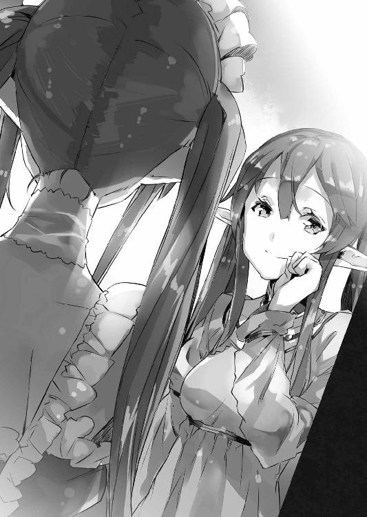
正直......ここまで自分が母親似だとは思ってもみませんでした。
幼い頃に形ばかりの里子に出されて以来、私は母方の親族とは一度も会っていません。人間との混血たる忌み子の私は、母方の親族の間では、『存在しない子供』として扱われていたのでしょう。
しかし......でもどうしていまさら？
「元気にしてた？」
ファルメルさんはそう問うてきました。
「はい......」
なんとなく顔を見ることができなくて、私は俯き気味になってしまいます。
卓を挟んだ向かいからはファルメルさんの、背後からは、事の成り行きを見守っておられるシンイチ様達の視線を感じます。ですが私としては、本当にどう応じて良いものか分からず、黙り込んでしまうしかありません。
「......どうぞ」
不意にミノリ様の声がしました。
顔を上げれば、ミノリ様が私とお母さんの分のお茶を、テーブルに置いてくださっているところでした。
「あ......」
「ありがとうございます」
「いえ」
微笑むファルメルさんに──ミノリ様が微笑を返されます。
お客様への給仕は本来、私の仕事。
いまさらそんなことに気付いても、私は緊張のあまり、ろくに舌も動きません。
そんな私の内心を知ってか、知らずにか、ファルメルさんはお茶のカップを口元に運んで一口飲み──艶然と微笑みました。
「美味しい」
「............」
私もゆっくりとカップを持ち上げ、お茶を一口飲みました。
そういえば──ミノリ様が淹れてくださったお茶を飲むのは、初めてです。
お母さんの言う通り、ミノリ様が淹れてくださったお茶は、薄くもなく渋くもなく、ホッと一息つけるような、美味しいお茶でした。
「では、ごゆっくり」
ミノリ様はそう言って会釈すると──シンイチ様共々応接室を出て行ってしまわれました。
私はつい、シンイチ様達の背中を目で追って、不安を覚えます。
なんだか一人で取り残されたような、そんな心細さ。
応接室に満ちる静寂に私は、居心地の悪さを感じて身じろぎします。
「......そういえば私......」
私は腰を浮かせながら言いました。
「......洗濯物を取り込まなくちゃ......」
「そんなのあとでいいでしょ？」
ファルメルさんが眉をひそめながら言いました。
「で、でも私の仕事ですから......」
「それは今しなきゃいけないことなの？」
やや語調を強めてファルメルさんが続けます。
「それに貴女じゃなくてもいいでしょ。他の人もいるんだから」
「それは......」
確かにこの屋敷には私以外にもメイドとしてシェリスさんがいます。洗濯物の取り込みくらいならば、ブルークさんやエルビアさんだってしてくれるでしょう。
しかし......
「どうしてもと言うなら、さっきの人に頼みなさい」
さっきの人というのはミノリ様のことでしょう。
「............」
強く命じる口調に逆らうことができず──私はソファの上に座り直しました。
ファルメルさんは、しばらく、しかめ気味の顔で私を見つめていましたが......
「......でも、元気そうでよかったわ」
ふっと表情を緩めてそう言いました。
「これでも心配してたのよ。しばらく軍にもいたそうね？ 正しい選択だわ。この屋敷は少し変わっているみたいだけど、待遇はどう？ さきほどの男の子が屋敷の──」
「......フォグロンさん」
笑顔で話すファルメルさんの言葉を──私は遮りました。
「どうして今頃......ここに？」
私はもう十五年以上ファルメルさんと──生みの母親と会っていませんでした。
物心つく前に引き離されたため、私は自分の両親の顔を知りません。知りませんでした。咄嗟にファルメルさんが母親だと分かったのは、単に、自分にそっくりな顔立ちのエルフだったからです。
今までファルメルさんから連絡など一度もありませんでした。
それがどうしてこんなに突然......？
「............」
ファルメルさんは短く溜め息をついて──それから一度、その顔から笑みを消すと、改めて私の顔を見つめてきます。今から大事なことを言うのだ、そう私にも分かるくらいに、真剣な表情でした。
私は思わず緊張に身を強張らせます。
やがて......
「迎えに来たのよ」
そう言って──それからファルメルさんは柔らかに微笑しました。
「え？」
まったく予想外の言葉でした。
私は目を瞬かせながら問い質します。
「それって......どういう......」
「お父さんが──貴女のお祖父さんが、病気で亡くなったのよ。それで、私は晴れて自由の身になったの」
「............」
私は言葉に詰まりました。
祖父のことはもちろん、記憶にありません。だから亡くなったと聞かされても、取り乱すようなことはありませんでした。
ただ──
「だからね。迎えに来たのよ、ミュセル。今、フォグロン家の主は私だから。他の者によけいなことは言わせない」
そう言ってファルメルさんは私の顔を覗き込みます。
「......ね？」
「............」
やはり私は言葉が出ません。
記憶にないのだという意味では、祖父も母も同じです。
迎えに来てくれたこと──それ自体は、きっと喜ぶべきことなのでしょう。頭ではそう分かっているのです。でも気持ちがそこに伴いません。私とは関係のない人が、私とは関係のないことを喋っているかのような──そんな印象でしかありません。
それに......
（──シンイチ様）
迎えに来たというファルメルさんと一緒に『帰る』ということはつまり──シンイチ様のお付きのメイド役を辞して、この屋敷を出るということです。
それは......
「ミュセル？」
黙り込んだままの私に、ファルメルさんが不思議そうに首を傾げます。
私はただ自分の膝元に視線を落としたまま──何も言えずにいました。
──どうしよう。
私はただ途方に暮れていました。
黙り込んでしまった私を前に、ファルメルさんはしばらく何か考えているようでしたが、やがて『まあ急な話だしね』と言って肩を竦めると『別に急がないからゆっくり心の準備をなさい。引き継ぎとかもいろいろあるだろうし』と言って笑いました。
どうやらファルメルさんの中で、私が『帰る』のは決定済みのようです。
確かに傍から見れば、悪い話ではないのでしょう。
でも......
「............」
私は屋敷の廊下を歩きながら、溜め息をつきます。
ファルメルさんは、このまま私を連れて帰るつもりのようで──一人で帰る素振りはなく、このまま数日は屋敷に逗留することになりました。一応、屋敷には幾つか使っていない客室があるので、そこを利用してもらう形になります。
しかし......本当にどうしたら良いのでしょうか。
フォグロン家はこの帝都からは離れたところにあるそうで、移動に羽車を使っても数日はかかるのだとか。もともとフォグロン家は商家であるために、国境近く、他国とも連絡の取りやすい土地に本邸を構えているそうです。
それはつまり、もし、私がフォグロン家に行くとなると、この屋敷に帰ってくるだけでもそれなりの時間を要するということになります。
行く。帰る。
私は名前しか知らないそのフォグロン家というものに『帰る』という気持ちにどうしてもなれませんでした。
そんなことを考えていると──
「ミュセル、何してるの？」
ふと声を掛けられて、私は足を止めました。
振り返った先に立っていたのはミノリ様です。
「部屋に戻らなくていいの？ せっかくお母さんが来てるのに」
「いえ、あの......」
その『お母さん』の前から逃げ出してきたのだ、とは言えず──私は口ごもってしまいます。
「その......屋敷のお仕事もありますし......」
言いながら私は、手に持っている折り畳まれたシーツを、ミノリ様に示しました。
毎日、皆のベッドのシーツを取り替えるのも私の仕事です。
しかし......
「そんなこと気にしなくていいから」
ミノリ様はそう言いながら、私の手から、シーツを取り上げてしまいました。
「え、あの......」
「仕事は気にしなくていいから。他に仕事は？」
「え？ 洗濯物と夕食の準備が......」
「洗濯物はエルビアとシェリスに任せるわ。夕食は三人で協力するし」
「で、でも......」
「せっかくお母さんが来てくれたんだから。いろいろ積もる話もあるでしょ」
微笑みながらミノリさんはそう言ってくださいました。
嗚呼。ミノリ様は私に気を遣ってくださっているのです。その心遣いはとても嬉しいのですが......
「じゃあ、また後で」
そう言うと──私が止める間もなく、ミノリ様は行ってしまいました。
「............」
残された私は、することもなくなり、その場に立ち尽くします。
普段は、あくまでシンイチ様の護衛役ということで、屋敷の家事には手を出したりなさらないミノリ様なのですが──もともと要領が良い方なので、いざ、やると決めればエルビアさんやシェリスさんに指示を出し、さらにはご自分も動いて、炊事洗濯に掃除と、仕事をてきぱきと片付けてしまわれるでしょう。
実際、以前、私が帝城内の治療院に入院させていただいていたときも、ミノリ様が家事を取り仕切っておられたようですし。そのときに比べると、シェリスさんが増えている分、人手不足になるということもないのでしょう。
つまり......
「......どうしたの？」
ふと声が掛かります。
「え!? あ──」
慌てて振り返ると、そこにはシンイチ様の、不思議そうな表情で私を見つめておられる姿がありました。
「あの、シンイチ様！」
思わず私はシンイチ様のところに駆け寄ります。
「お茶はいかがですか？ 何かお仕事はありませんか？」
「え？ え？ 何、突然......」
「なんでもいいんです。私なんでもします」
「はぁ......」
シンイチ様は驚いた様子で、私のことを見つめておられます。
確かにいきなり『仕事はないか』などと言われてもシンイチ様としては、戸惑われるのが当然でしょう。ですが、私は本当になんでも、小さなことでもいいから、お仕事がほしかったのです。ファルメルさんの待っているあの応接室に戻らなくても良い理由が──いえ、私がこの屋敷で必要とされている証がほしかったのです。
「えっと......じゃあ」
シンイチ様は少し考えてから、おっしゃいました。
「お茶淹れてくれる？」
「はい！ すぐに用意して、お部屋にお持ちします」
シンイチ様にそうお答えすると──私はなんだか救われたかのような気持ちで、厨房に向かいました。
シンイチ様のお部屋へと、ワゴンに載せたお茶とお茶請けを運びます。
途中──誰に会うこともなく、私はシンイチ様のお部屋に辿り着くことができました。実を言えば、誰かに会うと『こちらでやっておくからお母さんのところへ行きなさい』と言われそうな気がして......少し不安だったのです。
「──シンイチ様」
扉を叩くとシンイチ様が『どうぞ』と言ってくださいます。
「お邪魔いたします」
私は部屋に入ると──椅子に座って何か作業をしておられたシンイチ様の机の上に、お茶のカップと、お茶請けの皿を置きました。
「ありがとう」
シンイチ様はこちらを振り返って微笑んでくださいます。
そのご様子を私はただお傍で見つめていましたが──
「......えっと、どうかした？」
「え？」
「そんなにじっと見られると、飲みにくいというか......」
苦笑するシンイチ様に、私は慌てました。
「す、すみません」
考えてみれば、シンイチ様はお仕事中なのです。机の上では『のーとぱそこん』が開かれています。お茶をお出しした後は、お仕事の邪魔をしないようにさっと退室するのが正しい使用人のあり方でしょう。
あまり自覚はしていなかったのですが、私は、シンイチ様が何か新しい仕事を申しつけてくださらないかと期待していたのかもしれません。仕事をしている間は、よけいなことを考えずに済みます。
しかし......
「......ねえ、ミュセル」
思わず俯いてしまった私に、シンイチ様が声を掛けてくださいました。
「は、はい、なんでしょう!?」
慌てて顔を上げて私は尋ねました。
「何かご用があれば、何なりと──」
「いや。用とかじゃないけどさ」
シンイチ様は苦笑しながらおっしゃいました。
「ミュセルとお母さんってそっくりだよね」
「え？ あ──はい」
「僕双子かと思っちゃったよ。......っていうか、あの人がミュセルを、その、産んだ人なんだよね？ ミュセルと同じくらいの歳に見えちゃうけど」
「はい。たぶん」
と私は頷きます。
「たぶん？」
「私は生まれてすぐに里子に出されましたので......」
「......あ」
何か気付かれた様子でシンイチ様は口元に手を当てられました。
「......えっと。ごめん、あんまり訊いちゃいけないことだったかな」
「いえ。大丈夫です」
私は微笑を浮かべて首を振りました。
「エルフは──人間とは歳のとり方が違いますから」
「歳の......とり方？」
「はい。よく『途中で成長が止まる』なんて言われますけど、正しくは、一定の年齢に達して心と体ができあがると、それ以降、変化が緩やかになるんです」
「ははあ。最盛期が長く続くってことかな。人間も肉体的に完成するのは二十代から三十代前半だって話だし......その時期が続くのか。じゃあ、ミュセルも？」
「いえ、私の場合は半分だけなので」
私は首を振りました。
「純粋な人間の方々に比べると、二十歳辺りから変化の速度が遅くなっていくそうです。詳しいことはあまり私も知らないのですけど。もともと──ハーフエルフはあまり数が多くありませんし」
むしろ忌み子として妊娠が分かったとたんに堕胎されてしまう場合や、生まれたとたんに『処分』されてしまう場合も多々あるのだとか。
そういう意味で、私はむしろ幸運だったのでしょう。
「もしかしたらファルメルさんより私の方が年上に見えるときがくるかもしれませんね」
「............」
ふと──シンイチ様は瞬きしながら、改めて私の顔を見つめて来られました。
「ふぅん。じゃあ──」
シンイチ様は頷きながら、お茶を一口啜りました。
「お母さんはエルフなんだ」
「はい」
「じゃあお父さんが......」
「はい、人間だったそうです」
「そう、なんだ......」
シンイチ様はまたカップに口を付けられます。
何度も何度も少しずつ小刻みにお茶を飲むそのお姿は──何か言いたいことを、言うべきことを、しかし口には出さず、お茶と一緒に飲み下しているかのようでした。
「............」
しばらくの間、シンイチ様は何もおっしゃることなく......ひたすらお茶を一口飲んでは、カップを置いて、また思い出したようにカップを持ち上げてはお茶を一口飲んで、を繰り返しておられました。
しかし──どれだけ小刻みに飲んでもいつかお茶はなくなります。
「お代わりを──」
空になったカップに気付いて私はポットを掲げます。
しかし──
「ううん、大丈夫」
シンイチ様は首を横に振られました。
「あのさ、ミュセル」
「はい」
「その......先に言っておくけど、言いたくないなら、言わなくていいからね？」
気を遣ってくださっているのでしょう。シンイチ様はまず最初にそう前置きをされてから、こう続けられました。
「ミュセルのお母さんとお父さんって──」
何か適当な言葉を探しておられるのでしょう、シンイチ様はお困りになられた様子で、私から目を逸らされます。ですがそのご様子から、私の方でもシンイチ様が何をお訊きになりたいのか察することはできました。
「ファルメル・フォグロンさんは、とある商家の娘です。私自身は物心つく前に里子に出されていましたから、詳しいことは知りませんが──そう聞かされてました」
「お祖父さんが商売人ってこと？」
「はい。家はそれなりに裕福だったみたいです。ファルメルさんには予言者の資質があったとかで......その力が、子供の頃から、商売にはかなり役に立っていたのだとか」
「予言者って──未来予知とかそんな？」
「はい。ときどきそういう力を持った人はいるんです」
「へえ......」
「きちんとした魔法ではないので、かなりいい加減な部分もあるみたいですけど」
エルフは基本的に魔力に秀でています。
同じ魔法を使っても人間よりも精度が高かったり、回数を多く使えたり、いろいろな意味でエルフは魔法に関して有利な立場にあります。ただし魔法を体系化して、技術として整理したのは人間です。エルフの魔法はむしろ溢れ出る魔力を取り扱ううちに、各個人が経験で手にしていったものだと聞いています。
なので──ことさらに魔法を技術として学ばなくても、エルフの中には、魔力が自然とある種の魔法として顕れてしまう場合があります。そしてその種の魔法は、他の者には使えないような、変わったものになることが多いのだとも言われています。
ファルメルさんの持つ『未来予知』はその典型でしょう。
私が聞いた限りでは曖昧な内容の、大雑把な予言しかできなかったようですが......それでも、フォグロン家の仕事のうえでは、たいそう、重宝されていたようです。
「商売で成功したエルフは少ないらしいんですが、フォグロン家はその例外だったみたいです。フォグロン家は、人間の、それも貴族や大商人の屋敷に出入りすることを許されるようになって......そしてそこで、ファルメルさんは......『お母さん』は、『お父さん』に出会ったそうです」
「なるほど......」
「......でも......『お父さん』は、その、あまりいい人ではなかったみたいで......」
私はその『お父さん』の名前も知りません。
里子に出された先ではもちろんですが──ファルメルさんも、教えてはくれませんでした。
「お母さんはお父さんにいろいろ貢いでしまって、仕事にも影響が出たと聞きました」
「貢いで......？」
シンイチ様は驚いたように目を瞬かせておられましたが。
「うーん、ダメンズというかなんというか......」
そう言って苦笑を浮かべられます。
「だめんず？」
「え？ ああ、ダメな男の人って意味」
「......そうかもしれませんね」
私は溜め息をついて頷きました。
名前を隠されているのは、エルフの娘に手を出してしまったことが明るみに出れば、醜聞として騒ぎになるような身分の高い人物か──そうでなければ、その人物本人が何かと恥ずかしい部分を抱えているか、のどちらかでしょう。
そしてどうも私の父は後者だったようで......
「当時、家の実権を握っていた祖父──ファルメルさんのお父さんは、すごく怒って、二人を別れさせたんだそうです。ファルメルさんは商売に便利な未来予知の力があるということで追い出されることはありませんでしたけど、代わりに幽閉されたんだとか」
「......幽閉？」
「家の奥に閉じ込められて、ほとんど外に出してもらえなかったとか」
「あー......」
シンイチ様は何やら苦笑を浮かべて頰を指先で搔かれました。
「自分で引きこもるのならともかく、無理やりは辛いよね」
「......そう思います」
私は頷きました。
実を言えば、私も、里子に出された先で『体裁が悪いから』という理由で幽閉同然の生活を強いられていました。これが我慢ならず、私はその家を飛び出してしまい──それからは孤児同然の路上生活をしていたのですが、それでも、まるで檻に閉じ込められたような生活に戻る気には、なれなかったのです。
「ファルメルさんが身ごもっているのが分かった後は、堕ろすか堕ろさないかで揉めたみたいですけど、ひょっとしたら、ファルメルさんと同様に未来予知の力を持っているかもしれないから、様子を見るってことになって......結局、赤ん坊の時点でもそれらしい魔力の強さはないということで」
ファルメルさんはエルフの標準値よりも一桁上の魔力を持っているそうですが、私の場合はむしろ魔力量に関しては人間の標準値に近く、未来予知やそれに類する特別な力が発揮されることはほぼないだろう、という判断が下されたそうです。
「里子に出されました」
「......ひどいな、なんだソレ!?」
シンイチ様は珍しく表情を強張らせてそうおっしゃいました。
「孫をなんだと思ってるんだよ」
「シンイチ様──」
「商売に有利とか不利とか、自分の家族もそんなふうにしか考えられないのか？」
憤慨した様子でそうおっしゃるシンイチ様に──私は驚きました。
それはもうずっと前に済んだことで。
シンイチ様には、なんの関係もないことなのに。
まるでこの方は我がことのように──
「でも、仕方なかったそうです」
「仕方なかったって──」
「人間をたぶらかしたエルフというだけでも体裁が悪いのに、さらには子供までいるなんて......そんなことが周囲に知れ渡れば、不利どころか、フォグロン家が傾きかねません。神聖エルダント帝国でエルフが商売を手広くしようとすると、人間の方々の不興を買うわけにはいきませんし......」
「あっ......」
何かに気付かれたご様子で、シンイチ様は目を丸くされます。
「そっか......そういう『理由付け』を使う場合もあり得るのか......」
「──理由付け、ですか？」
おっしゃる意味が分からず私は首を傾げます。
「僕はミュセルのお祖父さんのことは知らないし、本当、すごくひどい人だった可能性もあるわけなんだけどさ」
シンイチ様は腕を組んでおっしゃいました。
「『役に立つかもしれないから』って理由を付けることで、孫が、生まれる前に殺されちゃうのを防いだって考え方もあるよね？」
「......！」
それは──今まで考えてもみなかったことでした。
けれど、言われてみればそう考えることだってできるのです。もちろん、くだんのファルメルさんのお父さんが亡くなってしまった今は、確かめる手段などないのですが──
「手広く商売していたんなら、従業員も多かったんだろうし、従業員の生活や家族を守らなければいけないって責任もあるだろうし、そうなると......ミュセルを里子に出すのがいちばん穏便だったって考え方だってあるわけだよね」
「それは......」
もちろん、シンイチ様のおっしゃることはすべて想像です。
本当はそんなことはなくて──ただ邪魔な赤ん坊を、余所の誰かに押しつけただけだったのかもしれません。私はずっとそう思ってきましたし、どちらが正しいかなど、本当に分からないのです。
けれど──
「まあその、なんだ、『良かった探し』をするのは僕の悪い癖だけどさ」
シンイチ様は苦笑されます。
「そのお祖父さんは亡くなっちゃったんだよね。時間も戻せないし。だったらそんなふうに思って生きていく方が、なんていうか、幸せなんじゃないかって──」
「............」
嗚呼。この方は本当に──
私は目頭が熱くなるのを感じました。
「でもシンイチ様。私──里子に出されたこと、恨みには思ってません」
「そうなの？」
「そのおかげで私は今、このお屋敷でお勤めさせていただいているんです」
そして貴方様のお傍にお仕えさせていただけています。
それは今までのことを補ってあまりあるくらいに幸せなことだと──私は思うのです。
「ミュセル──」
シンイチ様は驚いたご様子で目を瞬かせられました。
「そっか。そう思ってくれてるなら、いいんだ」
「はい」
私は笑顔を浮かべて頷きました。
ただ──
「それに──」
シンイチ様は笑顔でおっしゃられました。
「これからは、お母さんと一緒に暮らせるようになったわけだし」
「え......？」
私は自分の表情が強張るのを感じました。
「ミュセルを迎えに来たんでしょ？ お母さんは」
笑顔でシンイチ様はそうおっしゃいました。
ファルメルさんが私を迎えに来てくれたのは嬉しいのです。嬉しいのだと思います。頭では喜ぶべきことなのだと分かっているのです。シンイチ様が笑顔で喜んでくださるのも当然のことなのです。
けれどそれを──今の私は素直に喜べません。
このお屋敷にお勤めする前ならば。
シンイチ様のお傍にお仕えする前ならば。
あるいは私は普通に、それを喜ぶことができたのかもしれないけれど──
「それは......そうですけど......」
「よかったね」
「............」
まるで『喜ばなければいけない』とシンイチ様に諭されているかのようで......ひどく不安な気持ちになってしまいます。
ファルメルさんと一緒に暮らすということは......この屋敷を離れるということです。
ミノリ様やブルークさんやシェリスさんやエルビアさんや、そして何よりシンイチ様と一緒に暮らすことが、できなくなるということです。
別にもう二度と会えなくなるわけではない──そう言われればその通りです。
けれど......
「でもそうなると──」
シンイチ様は私に背を向けるかのように──机に向き直られました。右手で中身のなくなったカップを弄んでおられるのが、肩越しに見えます。
「ペトラルカに頼んで、代わりのメイドさんを手配してもらわなくちゃね」
「............」
それは......私は、もういらない、ということなのでしょうか。
私は胸の奥が痛むのを感じます。
確かに私は他の人達と違って唯一無二の何かを持っているわけではありません。
ミノリ様やブルークさんのような本職の戦士ではありませんし、エルビアさんのように絵が上手く描けるわけでもありません。私にできることと言えば、お食事の用意をしたり、お茶の用意をしたり、洗濯したり──ですが、それらは、現にキャラ弁やさきほどのお茶で分かったように、ミノリ様やエルビアさん、シェリスさんも問題なくできてしまう程度のことです。
ましてや、私よりもそれらが上手なメイドを傭うことも可能でしょう。
だから......私がどうしても、ここにいなければならないという理由はないのです。
シンイチ様のお傍にお仕えするのが、私でなければいけないという理由はないのです。
その事実を改めて突きつけられた気がして──私は目眩を覚えます。
「............」
けれど私はシンイチ様に何も申し上げることができず──ただ、そのお背中を見つめていることしかできませんでした。
翌日──私はシンイチ様達とご一緒して、登城することになりました。
具体的にはペトラルカ・アン・エルダント三世陛下に拝謁するのです。
エルダント城には謁見の間は幾つかあるそうで、私が入ったことがあるのはその中でも最も小さな部屋なのだとか。それでも屋敷のどの部屋よりも大きくて、しかも独特の空気が漂っていて、私はいつも気後れしてしまいます。本来ならば、私などは皇帝陛下にお目通りなど適わない立場の者ですから。
けれど......
「............そういうわけで」
謁見の間に入室を許されたのは、全部で四人。
シンイチ様。ミノリ様。私。そして──ファルメルさんです。
今回の謁見では、私の代わりのメイドを手配するという話も出るとのことで──だからこそ私がシンイチ様達にご一緒しているわけですが。ファルメルさんは一度、陛下にご挨拶がしたいと言い出して──シンイチ様達についてきた次第です。
なんでも陛下にお目通りするだけでも、神聖エルダント帝国の中では、商売人としての『格』が上がるそうで、この機会を逃す手はない──のだとか。永らく幽閉生活を送っていたというファルメルさんですが、やはりフォグロン家の人間、商売人としての考え方が染みついているようです。
「新しいメイドの手配をお願いしたいんだけど......いいかな」
シンイチ様は大まかに事情を説明されたうえで、そうおっしゃいました。
「なるほどな」
ふむ、と玉座の上で、頷かれるのは、エルダント三世陛下です。
陛下はエルダント皇帝という厳めしい肩書をお持ちでありながら、非常に愛らしい御姿をしておられます。
銀糸のような艶やかで美しい髪と、翡翠のような大きく円らな瞳が、まるで精緻な人形のよう──名匠の手になる芸術作品のようです。ただ陛下ご本人は、若干そのお姿が幼く見えてしまうことを、気にしておられるようで──皇帝としての威厳の欠如に繫がるとかなんとか──『可愛い』などと評されるのを、あまり喜ばれないようなのですが。
「ミュセルの母親──か」
陛下の視線が、シンイチ様の肩越しに、その後ろに立つ私とファルメルさんの間を行き来します。思わず私は背筋を伸ばしますが──ファルメルさんはむしろ落ち着いた様子で陛下の眼差しを受け止めていました。
「それにしてもよう似ておるな。まるで姉妹じゃ」
陛下は感心なさった様子でそうおっしゃいます。
対してファルメルさんは優雅に一礼して言いました。
「父曰く、私の赤子のときとうり二つであったとか。ゆえに期待する向きもあったようですが、残念なことにこの子は私の『力』を受け継いではいなかったようで」
「......力とな？」
ファルメルさんの、意味深な物言いに興味を持たれたのでしょう──陛下は身を乗り出してお尋ねになりました。
「大したものではございませんが。『先見の目』などと呼ばれております。甚だ曖昧なうえに、細かい部分ではままならぬものですが......時折、私のこの目には未来の風景が映ることがございます」
「なんと......」
陛下が目を丸くされます。
「未来予知の力か。話には聞いたことがあるが──」
「お仕事もその力のおかげで順調だって聞きました」
ファルメルさんの言葉に添えるようにして、シンイチ様がおっしゃいます。
「城の魔法使いにも占いの類をする者はおるが。どうにも不確かなうえに、彼らに言わせれば未来を見るという行為そのものが未来を変えてしまうのだとか。もし汝のその力とやらが本物であるならば、我が国の政から戦まで、さまざまに役立てることができよう。我が臣下としてほしいくらいじゃな」
「恐悦至極に存じます」
そう言ってファルメルさんは一礼し──しかし首を振りました。
「実のところ......思い通りに未来を見据えることができるわけではございません。やはり時間とはままならぬものです。しかしぼんやりと風景が見えるだけでも、商売に役立つことは多うございますれば」
「商売か──」
陛下はちらりとシンイチ様を一瞥されてから、さらに問われました。
「そういえばまだ名を聞いておらんかったな。なんと申すのじゃ？」
「はい。ファルメル・フォグロンと申します」
「──ん？」
ファルメルさんの答えに──陛下が眉根を寄せられます。
陛下はしばらく、何やらお考えになっているご様子でしたが──
「もしやフォグロン家か!?」
「その通りでございます」
「知ってるの？」
シンイチ様が驚いたご様子で尋ねられます。
「聞いたことがある名じゃ。一定規模以上の、国をまたいだ通商の許可証は妾の名前で発行しておるわけじゃが、その中に確かその名があった。エルフの大商家となると珍しいので覚えておった。オタク作品輸出計画の実務担当候補としても、フォグロン商会は名が挙がっておるぞ」
「ははぁ......」
感心されたようにシンイチ様は私と、そしてファルメルさんの方を振り返ります。
「しかしなんともまあ、奇妙な縁じゃのう？ まさかミュセルがフォグロン家の娘だったとは......」
陛下も感心されることしきり、といったご様子。
実を言えば私もフォグロン家のことはよく知らされていないままだったので、今回、改めてファルメルさんから聞いて知ったことがほとんどなのです。
しかし......
「なんにせよ、母と娘が一緒に暮らせるのは良いことじゃ」
しみじみと陛下はそうおっしゃいます。
そこで私は改めて思い出しました──陛下は幼くしてご両親と、死別されているのだということに。
「相分かった。シンイチ、新しいメイドの件、妾に任せるがよい」
「ありがとう、ペトラルカ」
シンイチ様は笑顔でそうおっしゃいました。
ミノリ様も陛下も──ファルメル様も笑顔で。
新しいメイドを手配してもらうことについて、どこからも反対する意見が出てくる様子はありませんでした。
「............」
誰にも引き留めてもらえない。
そのことに痛みを覚える胸を押さえながら──私はただただその場で俯いていました。
いかに皇帝陛下のご威光といえど、『手配する』と決まったその日の内に新しいメイドを連れてくるのは、無理というものです。
そういうわけで──代わりのメイドが決まるまでは、今まで通り、私は屋敷の仕事をすることになりました。ミノリ様やシェリスさん、エルビアさんは、気を遣ってくださいますが、やはり、ファルメルさんと二人で一緒にいると落ち着かない気分になってしまうのです。
ファルメルさんが嫌いだというわけではありません。
しかし......
「はぁ......」
屋敷の庭で洗濯をしながら、無意識に溜め息が漏れます。
絶好の洗濯日和で、空は雲ひとつないほど青いのに──私の心はどんよりと曇ったままです。
心なしか身体すら重く感じます。
先日の謁見以来──私はまったく眠れないままなのです。身体が重いのはそのせいもあるでしょう。寝ようとするたびに、脳裏にちらつくのは、私のいないこの屋敷の風景ばかりで。笑顔でお茶を飲んでおられるシンイチ様の傍には、私の知らない誰かが、当然のように立っていて......考えるだけで憂鬱になってしまうのです。
だからできるだけ何も考えないようにしようと、私は、夜は寝ずに屋敷の中を掃除し続けたりしていました。身体を動かしている間だけは、なんとか、嫌なことを考えずに済みます。
「はぁ......」
もう何度目か分からない溜め息をつきながら、洗濯物の入った籠の中から、一枚一枚服を引っ張り出して、水の入った桶に入れていきます。
ぼんやりと手順を頭の中に思い描きます。
だいたい二、三回に分けて、服を洗って干して......
「あ......」
引っ張り出した服を桶の中に入れようとして──そこで私は動きを止めました。
私が手にしているのは、シンイチ様のシャツでした。
新しいメイドが来たら、その人がシンイチ様の服を洗濯するのでしょう。そしてそれはもう明日かもしれない。だとしたら私がシンイチ様の服を洗濯するのは、これが最後ということに──
「............」
そう思うと胸が苦しくなります。
私は見慣れたシンイチ様のシャツを──強く胸に抱き締めていました。
シャツからは、微かにシンイチ様の匂いがしました。
私は無性に哀しくなって、シンイチ様のシャツに顔を埋めて──
「ミュセル」
「！」
突然聞こえたファルメルさんの声に、私は我に返って顔を上げました。
振り返ると──ファルメルさんが、こっちに向かって歩いてくるのが見えました。
私は慌てて、シンイチ様のシャツを、桶の中に入れます。
いったい、ファルメルさんはいつからそこにいたのでしょうか。もしかして私がシンイチ様のシャツを抱き締める一部始終を見られてしまったのでしょうか。
「............」
ファルメルさんは、私のすぐ目の前まで歩いてきて立ち止まると──洗濯物の入った桶に目を向けました。その瞳がわずかに細められます。桶の中ではさきほど、放り投げるようにして入れたシンイチ様のシャツが、水を吸ってゆっくりと沈んでいくところでした。
「ミュセル、貴女......」
ファルメルさんが何か言いたげに表情を歪めます。
彼女の視線がひどく痛くて──私はそれから逃れるようにして顔を背けました。
シンイチ様のシャツを抱き締めて匂いを嗅いでいたなんて......品のない娘と思われたでしょうか。私は目を瞑って、恥ずかしさに頰を赤らめて、それから──ファルメルさんから掛けられるであろう言葉に身構えます。
けれど......
「............？」
いくら待っても、ファルメルさんは無言です。
私はそっと目を開いて彼女の方を見上げました。
「............」
ファルメルさんはなんとも言い表しがたい表情で私を見つめていました。
怒っているのではなく。呆れているのでもなく。悲しんでいるのでもなく。ましてや笑ったりしているのでもなく。そのどれでもあるかのようにも見えて──
「......まあいいわ」
そしてファルメルさんは短くそれだけ呟くと、私に背を向けて、そこから歩み去ってしまいました。
結局......なんの用だったのでしょうか。
呆然と私はファルメルさんを見送ってから──我に返ると、再び洗濯を始めました。
できれば、代わりのメイドは見つからないでほしい。
陰鬱な気持ちでそんなふうに考えることもありました。
しかしそんな私の願いも虚しく──代わりのメイドが見つかったと屋敷に連絡がありました。数日中には屋敷にやってくるそうです。
もちろん、その新しいメイドが屋敷に慣れるには何日かかかるでしょうから、それを補う形で、ミノリ様やエルビアさん、シェリスさん、ブルークさんにも、私のこなしていた仕事の一部を分担してもらうことになります。
「えっと......お食事ですが」
食堂に集まったミノリ様達を見回して、私は言いました。
「エルビアさんは基本的に薄味、調味料はシンイチ様のだいたい三分の一くらいで、火は本当に気持ち程度、焼くなら軽く炙る程度で。煮炊きも灰汁が出てくる前に上げてしまう感じで。ブルークさんとシェリスさんはできるだけ素材そのままで──ただし果物類だけは熟しきったもの、腐る一歩手前のものを中心に。シンイチ様とミノリ様の献立は同じですが、きのこを出すときには注意してください」
「きのこ？」
「はい」
訊き返してこられたミノリ様に、私は頷きました。
「シンイチ様はきのこがお好きではありません」
「そうなんすか？ 知らなかったっす」
「はっきり聞いたことはありませんが、きのこのお料理は最後の最後まで口にはなさいません。お召し上がりになるときも、一拍二拍、おいてからです。ほぼ嚙まずに流し込んでしまわれるので、消化には悪いと思います。ですので、きのこをメインにした料理は作らないか、他の料理に細かく切って混ぜるようにしてください」
「............」
ミノリ様とエルビアさんが怪訝そうな表情を浮かべて顔を見合わせます。
何か変なことを言ったでしょうか......？
頭の片隅でそんなことを考えつつも、私は次の話に移ります。
「お洗濯なのですが」
「はい」
と頷くのはシェリスさんです。
味覚が随分と異なる彼女に厨房をお願いするわけにはいかないので、いつもの分担である掃除に加えて、洗濯を彼女にはお願いすることになりました。
「シンイチ様は緑色がお好きです。気に入った服は洗濯してあればいつでもお召しになるので、もし洗濯物に緑色の服があったときは、まずそれから洗って干すようにしてください。それから......そう、お掃除なのですが」
いつもは私がシンイチ様のお部屋はお掃除していたので、ここでも気をつけておかねばならないことを伝えておきます。
「シンイチ様の部屋は、屑入れの周辺──というよりその『奥』をよく見てください。シンイチ様は椅子に座ったままゴミを投げ捨てられる癖があります。そのまま屑入れに入れば良いのですが、外れて、そのまま壁際に溜まってしまうことがままあります。棚の陰になって見えにくい場所なので、気をつけてください──」
......等々。
他に伝えることはあったでしょうか。
俯きながら指を折り、細かな注意点を一つずつ思い出しては口にして──そこで私は視線を感じて顔を上げました。
「............」
ミノリ様。エルビアさん。ブルークさん。シェリスさん。
全員が、私のことをじっと見つめていました。
ブルークさんやシェリスさんの表情は読めず、何を考えていらっしゃるのかは分かりません。しかしミノリ様とエルビアさんの表情は、私にも分かります。
これは──呆れておられるのでしょう。
ですが何故......？
「あの......何か？」
「ミュセル──」
エルビアさんが言いました。
「さっきからシンイチ様の話ばっかりっす」
「え......？」
一瞬──意味が分かりませんでした。
私は屋敷の中のお仕事について、話をしていただけで──
「............」
改めて頭の中で自分が言ったことを繰り返してみます。
シンイチ様の食事のこと。シンイチ様の衣装のこと。シンイチ様の部屋のこと。
シンイチ様の──
「あ......そ、それは」
私は頰が熱を帯びるのを感じます。
「そ、そんなつもりは......」
いえ。シンイチ様がこの屋敷の主人であられるのだから、別にシンイチ様に関する話が多くてもおかしくはないはずなのです。まず第一に優先するべきは、いかに旦那様であるシンイチ様に気持ちよく過ごしていただくかということで──
頭の中で言葉がぐるぐると回ります。
しかし考えれば考えるほど、それらは言い訳じみたものに思えて──私は言葉に詰まってしまいました。
赤面した顔を見られたくなくて、私は俯き、膝の上に置いた自分の手を見つめます。
それからしばらくは、誰も口を開かず、食堂に奇妙な静けさが満ちました。
そして──
「......まあ、ご飯は、私が作るから」
沈黙を破ったのは、ミノリ様でした。
「いちばん、慎一君に合わせた味付けができるのは私だろうしね。得意ってほどでもないけど、最低限のことはできるし」
明るいミノリ様の口調ですが──どこかそう取り繕っておられるように思うのは、私の邪推なのでしょうか。
私が顔を上げると、シェリスさんが頷く姿が見えました。
「掃除は私とブルークにお任せください」
そう言いながらシェリスさんは、ブルークさんに顔を向けます。シェリスさんの視線を受けて、ブルークさんは首を縦に振りました。
リザードマンは私達と顔の形や皮膚の柔らかさも異なるので、どうしてもその表情は読み取りにくいのですが、その一方で、わずかな仕草にブルークさん達の内側が見え隠れするときがあります。
ブルークさんとシェリスさんの気持ちが通じ合っているのは、むしろその交わす言葉数の少なさからよく分かります。
そんなお二人の様子が、今の私にはひどく眩しくて──
「洗濯はアタシがやるっすよ！」
勢いよく右手を挙げて、宣言するかのように言うのはエルビアさんです。
半分浮いた腰の向こうで、ふわふわの尻尾が楽しそうに揺れていました。
「シンイチ様の服は緑から、覚えました！ 洗濯のときに、匂い嗅いでもいいっすかねえ！」
「それはいろいろ危ないからやめなさい」
とわずかに顔をしかめてミノリ様がおっしゃいます。
「や、じょ、冗談っすよ!?」
慌てた様子でそう言うエルビアさんですが──今の私には、やはり笑えません。
「エルビアが言うと冗談に聞こえないの」
「ひどいっすよミノリ様！」
肩を竦めておっしゃるミノリ様と、両手を挙げて抗議するエルビアさん。
そんな二人を見て──珍しくはっきりと笑うブルークさんとシェリスさん。
皆さんの雰囲気は和気藹々としていて、楽しそうです。
少なくとも誰も私が屋敷からいなくなることについて、不安や違和感を覚えてはいないようでした。
それがまた私には、とても哀しくて。
誰も『行くな』とは言ってくれない。
もちろん、皆さんが、『今まで離ればなれになっていた親子が一緒に暮らせる』ことについて喜んでくれているのは、痛いくらいによく分かります。私もファルメルさんが迎えに来てくれたこと、それ自体は嬉しいのです。
けれど──それでも。
誰か一人は『行くな』と言ってくれるのではないか。
私は心の片隅でそんな期待を抱いていたのでしょう。
目の前がじわりと滲むのが分かりました。泣いてはいけない。分かっているのですが、けれど、どうにもならなくて。
「ミュセル、どうしたの？」
そんな私の様子に気が付かれたのでしょう、ミノリ様が驚いたように声を掛けてきてくださいます。
「いえ......」
慌てて零れ落ちそうになる涙を服の袖で拭い、私はなんとか笑顔を取り繕います。
咄嗟のことでしたが、とりあえずは上手くいったようでした。
「そんな心配しないで大丈夫っすよミュセル！」
テーブル越しに身を乗り出して、エルビアさんが言います。
「アタシにだって洗濯くらいはできるっす！ 大丈夫っすよ！」
「......そうですね」
私は空っぽの笑顔のまま、ただ頷くしかありませんでした。
「............」
結局──私は眠れないままとうとう、屋敷を去る日を迎えてしまいました。
ちなみに新しいメイドは、私と入れ替わるように明日やってくるのだとか。
もともと私物はあまりないので、私の荷物は、着替えを含めても少し大きめの鞄に入ってしまいました。以前、バハイラムに行った際、陛下から賜った戦装束は、丁寧に洗ってお返しすることにしました。あれはあくまでシンイチ様のお傍についてお護りするために必要なものであって──この屋敷を去る私には必要のないものです。
私は最後に、シンイチ様にいただいた『ごじゅうおんひょう』を端布に包んで鞄に入れると、そこで溜め息をつきました。
外出用のワンピースに着替えているため、いつものメイド服は畳んでベッドの上に置いてあります。
この屋敷に来た際に支給された、メイド服。
私がこれを着ることは、もうないのでしょう。
そんなふうに、私が着慣れた仕事着を見つめていると──
「ミュセル、まだなの？」
廊下からファルメルさんの声が聞こえてきました。
びくりと肩が震えるのが分かります。そんな私の様子などもちろん知らぬ様子で、ファルメルさんは急かしてきました。
「もう行くわよ、早くしなさい」
「は、はい......」
とりあえずはそう返事をするものの──声にひどく力がないのは自分でも分かります。
「............」
こうしていても仕方がない。
私はゆっくりと、立ち上がって──そして。
「............」
最後にもう一度。
そんな気持ちで私は手を伸ばしてベッドの上のメイド服に触れます。
そういえば、シンイチ様は初めてお会いしたときには、ものすごく私のこの格好を喜んでくださっていたみたいで──
「............」
手を離さなければ。
そう思いつつ──指先は未練たっぷりにその布地に絡み付いて離れません。
そして......
「ミュセル！」
ファルメルさんの声がもう一度私を呼びました。
屋敷の正面玄関には、すでに迎えの羽車が停まっていました。
いつも登下校や登城の際に使っているものではありません。数日かかるような長距離を旅するための、やや大型で、荒れ地を行く場合もあるため、車輪も大きめのものです。
そしてその羽車の傍に、ファルメルさんの姿がありました。
さらに彼女を囲むようにして、シンイチ様、ミノリ様、エルビアさん、ブルークさん、シェリスさんの姿もあります。皆さん、私とお母さんを見送りに、集まってくれているのです。
「............」
私は屋敷の玄関を出て皆の元に向かいます。
「あ、ミュセ......ル......？」
最初に私に気付かれたのは、シンイチ様でした。
振り返って私の姿をご覧になったシンイチ様の目が、驚いた様子で丸くなります。
シンイチ様に続いて、他の皆も、私を振り返ります。誰もが──驚きの表情を浮かべていました。
そして──
「ミュセル......」
呆れたように言うのは、ファルメルさんです。
「まだそれ着てるの？」
皆の前に──屋敷の玄関先で立ち止まった私の格好は、外出用のワンピース──ではなく、この屋敷で働くための、メイド服でした。着慣れたメイド服は、ワンピースよりもよほど、違和感なく私の身体に馴染んでくれています。
「早く着替えてきなさい。みんなわざわざこうやって......」
「......ファルメルさん」
私は一度、俯きました。
緊張で乾いた唇を舐めて。大きな音を立てる心臓を、深呼吸で必死に宥めて。それから拳を握り締め、内心で臆病な自分自身を叱咤しながら、私は顔を上げました。
「私......」
ファルメルさんをまっすぐに見つめます。
「............」
意外だったのは──ファルメルさんの、お母さんの表情が、とても静かだったことでした。
驚いているでもなく。怒っているでもなく。
むしろ──何かを諦めたかのような落ち着きが見えて。
「私......行きたく、ありません......！」
震える声で、絞り出すように私はそう口にしました。
今の今まで、ずっと言えなかった言葉。
言った瞬間、堰を切ったかのように、涙が突然溢れてきました。喉からは勝手にしゃくり上げる声が漏れます。我慢したいのに、涙もしゃくり上げる声も止まりません。
「ミュセル......」
突然泣き出した私を見て、シンイチ様達が困惑するのが、視界の端に見えました。
突然こんなことを言って、きっと困らせているに違いありません。新しいメイドだって決まって、陛下にも屋敷を出て行くことを伝えてあったはずなのに。
でもやっぱり、私は行きたくないのです。
皆様の......シンイチ様の傍にいたいんです。
だから──
「私......」
自分でも何を言いたいのか分からないまま、勝手に口が開きます。ただ行きたくないというこの思いを、どうしても分かってほしかったのです。
でも気持ちばかりが先走って、きちんとした言葉はまるで出てきません。
私はまるで喘いでいるかのように、無意味に口を開け閉めするだけで──
「............」
そのとき──ふと。
視界が揺れました。
おかしい、そう思ったときには世界が斜めに傾いていて。
いえ。傾いているのは世界ではなく──
「あ............」
急に目の前が暗く閉ざされて。
「──ミュセル！」
シンイチ様の、叫び声。
それを耳にした刹那、私は気を失っていました。
「............」
目を覚まして、まず映ったのは白い天井でした。
見慣れた自分の部屋の天井。
自分の部屋のベッドに寝かされている──自分の状態に気付くのに、若干の時間が必要でした。頭がぼんやりとしていて、瞼も重いのです。目を開けているのが辛くて、私はうっすらと開けた目を、また閉じました。
私はいったい、どうしたのでしょうか。
頭が痺れているように、考えが上手くまとまりません。体が泥水の中に埋まっているかのように重く、指先一本動かすのさえままならない状態でした。
ここ数日、まともに眠っていないからなのでしょう。
懸命に起きようと思っても、搔き集める端から、心が溶けて広がっていってしまうかのような──水の中にゆらゆらと漂うような、ひどく曖昧な感覚に包まれています。
そんな中で......
「あの......やっぱりここに残すことはできませんか？」
聞き慣れた声がどこかから聞こえてきました。
シンイチ様の──声。
「どうしてですか？」
訊き返す声はファルメルさんのものです。
声はどちらも近くて、たぶん、お二人とも同じ部屋にいるのでしょう。
けれど、私の感覚はやはり緩んだままで、お二人のやりとりは、どこか遠くの声を聞いているかのように現実味なく──私は、ぼんやりとそれを耳にするだけでした。
「それは......」
「母の私が連れて帰ると決めたのです。それを貴方は許さないとおっしゃるのですか？」
「いえ、そうじゃなくて......ミュセルは行きたくないって言ってるし......」
「それはあの子の理屈ですね」
ファルメルさんは溜め息混じりにそう言いました。
「けれど貴方には関係のないことです。違いますか？」
「関係ないって──」
「それとも貴方もミュセルは私と一緒に来ない方が良いと思っておられるのですか？ 一度娘を手放した親には、迎えに来る権利もないと？」
「いえ......」
「では貴方が、私に『ミュセルを連れていくな』とおっしゃる理由はなんですか？」
「............」
ファルメルさんの強い口調に、シンイチ様がたじろぐのが分かります。
「それとも貴方自身には理由もないままに、そんなことをおっしゃるのですか？」
「そんなわけじゃありません。僕だって母親と一緒の方が絶対にいいとは思ってるんです。......でも......」
そしてシンイチ様の言葉が途切れます。
部屋の中に満ちる沈黙。
ファルメルさんは──しかし答えを急かすでもなく、こちらも、ただ静かに待っています。
そして......
「──僕も、同じです」
「同じ？」
「ミュセルに行ってほしくないんです。ここにいてほしいんです」
嗚呼。
その一言をくださったのは、やはりシンイチ様でした。
朦朧としていなければ、私はその場でまた泣いてしまったかもしれません。
対して──
「......ああもう」
ファルメルさんは長い溜め息を一つつきました。
けれどそれが、諦めや呆れからのものではなく、どこか満足げなものに思えたのは、私の錯覚でしょうか。
「結局、あの子も私の娘ね」
ファルメルさんがそう呟きます。
なんとなくですが、その顔に浮かんだ苦笑が透けて見えるかのような......そんな声でした。
「どういうことですか？」
「さあ？ どういうことでしょう？」
訊き返すシンイチ様と──はぐらかすファルメルさん。
「............」
「............」
二人の会話はまだ続いているようでしたが、やはり私の頭はぼんやりと緩みっぱなしで、言葉の一つ一つを拾い上げることすら、難しくなって。
（シンイチ様──）
私は再び、眠りの淵へと落ちていきました。
──結局。
寝不足で倒れた私がもう一度目を覚ましたとき、すべては終わっていました。
陛下には私が屋敷に残ることになったと、シンイチ様が伝えてくださったそうです。普段は謁見の間に入っても、口を開かないミノリ様までが、屋敷の皆を代表して陛下に『やはりミュセルは残った方が良い』と口添えしてくださったそうです。
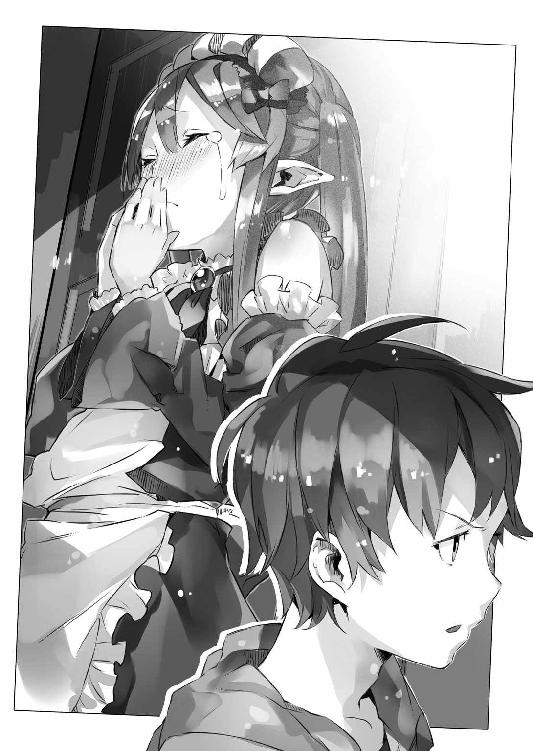
そして──
「泣くほど嫌われたら、さすがに退散するしかないでしょう」
ファルメルさんは肩を竦めてそう言いました。
「いえ......嫌いとかじゃなくて......」
ファルメルさんが嫌いなわけではありません。
私はただ──
「いろいろとお世話をかけました」
ファルメルさんは、しかし最後まで私の言葉は聞かず──シンイチ様達に頭を下げました。
「ミュセルをよろしくお願いします」
ファルメルさんは、そろそろ戻って、フォグロン家の商売を取り仕切らねばならないのだとか。もともと帝都に十日近く滞在していたのも、かなりやりくりして強引にあけた予定であったようです。
そういうわけで、私達は、屋敷の前でファルメルさんを見送ることになったのですが──
「そんな、僕達もミュセルにはいつもお世話になっていて......」
「それは仕事ですから」
きっぱりとファルメルさんはそう言いました。
何故か、彼女の表情は──『娘に嫌われた』と言うわりには、明るいものです。
「ミュセル」
そしてファルメルさんは私を振り返りました。
「あ......あの」
私は一歩前に出て言いました。
「ごめんなさい......」
一緒に帰りたくなかったわけじゃない。一緒にいたくないわけじゃない。だからこそ、わざわざ無理をして迎えに来てくれた母親を追い返す──そんな自分のわがままが、どれだけ醜いものかは、分かっていました。
謝って済むことではないのも、分かっています。
けれど──
「ここに残るって言い出すんじゃないか──とは思っていたのよね」
ファルメルさんは、さばさばした口調でそう言いました。
「え......？」
驚く私に、ファルメルさんは、そっと顔を近付けて耳打ちします。
「大変よ、覚悟しておきなさい」
「え？ え？」
「母ではなく、経験者からの忠告」
どこか悪戯っぽい口調でファルメルさんは言いました。
「私もそんなふうに、好きな人の傍にいられたらそれでいい、他には何も要らない、この気持ちさえあったらなんでもできる──そう思っていたときがあったわ」
そんな言葉を残して、ファルメルさんはすっと身を引きました。
「あ──あの」
「じゃあね。ミュセル。また暇を見つけて会いに来るから。それまで元気でね」
ファルメルさんは明るい笑顔でそう言いました。
私は──
「はい。待ってます」
ようやく素直にそう口にすることができました。
「お母さん」
「............」
一瞬、ファルメルさん──いえお母さんは驚いたように目を瞬かせていましたが、改めて満足そうな笑顔を浮かべると、そのまま踵を返し、羽車の中へと乗り込みました。
いつもの食堂で。いつもの席で。
シンイチ様は──お昼を食べておられます。
テーブルに置かれているのはお弁当が一つ。
今日は学校はお休みで──屋敷で食べるのであれば、お弁当箱に詰める必要はなかったのですが、私はシンイチ様にお願いして、こういう形にしていただいたのです。
「............ん」
シンイチ様はニッポンの食器──『ハシ』を手にしておかずを一つ摘ままれます。
私はその様子を、シンイチ様のお隣に立って見つめています。
お弁当箱の中身は、キャラ弁です。
エルビアさんの作るものに比べると、やはり、その弁当箱の中に描かれる絵はひどく拙く見えます。しかしシンイチ様は丁寧に、そっと『ハシ』を用いて、これを崩し──少しずつ口に運んでおられます。
ゆっくり嚙んで。それから飲み込んで。
シンイチ様は──私を振り返ってこうおっしゃいました。
「うん、美味しいよ」
暖かな笑顔に、私はじんわりと、全身に喜びが広がっていくのを感じます。
「ありがとうございます」
今はまだお世辞にも上手だとは言えないキャラ弁ですが。
いつかきっと見た目もエルビアさんの作るものに追いついてみせます。
焦らず。けれど怠けず。頑張ればきっとできるはずです。
時間はあるのですから。
「うん。本当に美味しいよ」
そんなお褒めの言葉をくださる、シンイチ様の横顔を見つめながら──
『私もそんなふうに、好きな人の傍にいられたらそれでいい、他には何も要らない、この気持ちさえあったらなんでもできる──そう思っていたときがあったわ』
──私は、頭の片隅に、お母さんの言葉をふと思い出していました。
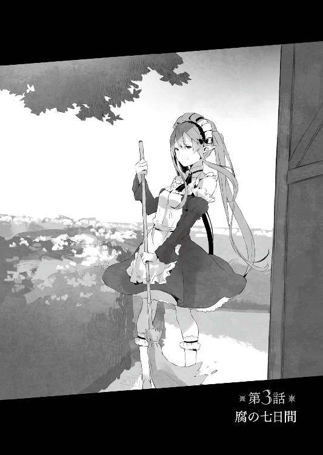
それはまるで──僕の目には踊っているかのようにも見えた。
直線的で。鋭利で。
なのにどこか綺麗で。
演舞といい、演武という。
確かに武術の型は『最大効率で身体を動かす』という意味において、舞踊に通じるところが多いのだろう。力を出しきるには呼吸や鼓動を無視するわけにはいかず、そして、拍子は呼吸や鼓動に通じる。
一定の『脈』に従って繰り返される身体運用の妙。
ゆるゆると空気を搔いていた手が──脚が、突然、閃光のような動きで虚を切り裂く。
けれど、余人には唐突に見えるそれすらもが、たぶん、ある種の『理』に沿った所作なのだろう。
だから、矛盾なく、すべての動きが綺麗に嚙み合わさって、一連の流れとして見える。だから、それはとても──自然で、力強くて、何より、美しい。
「............」
屋敷の裏庭。
表と異なり、ほとんどは、ただ平たい地面が広がっているだけの──殺風景とも言える場所。
その真ん中で、僕が捜していた人物は、黙々と身体を動かしていた。
一見すれば、あまり肉体派には見えない──長い髪をお団子状にまとめ、眼鏡を掛けた、どちらかといえば、図書館辺りで司書をしていた方が似合いそうな容姿の、おっとりした美人さんなのだけれど。
そんな彼女が、こうして格闘技の訓練をしている姿を見ると、やはりこの人も、文字通りに日本を護る現代の士──自衛官なのだと、改めて認識させられる。
陸上自衛隊一等陸士・古賀沼美埜里。
機密任務としてこの神聖エルダント帝国に駐留する部隊の一人であり、僕の護衛役でもある。普段は本当におっとりした『お姉さん』なのだけど、いざとなれば怒れる竜の鼻面も蹴り飛ばしちゃうような、強者なのだ。
「............」
たぶん──集中しているのだろう。
美埜里さんは僕が見ているのも気付いていない様子で、格闘技の型を繰り返している。
おそらく、自衛隊の実戦格闘術──自衛隊内では『自衛隊格闘 徒手技術』とか呼ばれてるみたいだけど──が基本なのだろうけど、どこか中国拳法っぽい動きが混じって見えるのは、美埜里さんがもともと道場の娘だからか。幼少の頃からお父さんに格闘技を習ってきたという美埜里さんの動きは、それこそ、無理のない自然なもので──疾駆する野生動物の美しさに通じるものがあった。
しかも......
「......おお」
思わず、声を漏らしちゃう僕。
何か『技』を一つ繰り出すたびに、タンクトップの下で、柔らかそうな、それでいて決して垂れたりはしない、弾力のある胸が大きく揺れるのだ。たゆんたゆんと。すげい。僕の視線はいつの間にかそこに釘付けになっていた。
そういえば『大きな胸はけっこう邪魔』とか『ブラ着けてても激しく動いたときにけっこう痛い』とか美埜里さん言ってたっけ。見てる側としては眼福なだけだけど、持ち主としては、必ずしも良いことばかりではないらしい。
ああ。そんなに大変なら、この僕の両手で、そのたわわではわわな胸を支えてあげたい......下からすくい上げるように、そっと。
──などと僕が通報半歩手前の欲望を持て余していると。
「......あら」
美埜里さんはようやく僕がいることに気付いたらしく──動きを止めて、こちらを振り返った。
「慎一君......」
「すみません、中断させちゃって」
美埜里さんに歩み寄りながら僕は言った。
「構わないよ。そろそろ終わろうと思ってたから」
美埜里さんは首を横に振ると眼鏡を外した。
それから近くの樹の枝にかけていたタオルを手に取り、顔に浮かんだ汗を拭う。
首元にうっすらと浮かんだ汗や、惜しげもなく露出している二の腕を見ていると、清々しくも艶めかしいというか──健康的なエロスの誘惑が僕を襲う。
嗚呼......髪の毛から垂れた汗が、柔らかそうな谷間に吸い込まれていく。思わず僕は、流れる汗と谷間を凝視していた。
ああ。汗め！ 汗め！ なんという役得！
僕もあの汗になりたい──
「声掛けてくれたらよかったのに」
「え？ あ、いや、だってトレーニング中でしたし......」
僕は慌てて美埜里さんの顔に視線を戻しながら言った。
もちろん、『途中から激しく揺れる胸に目を奪われて、声を掛けるのを忘れていたんです』などとは言えない。言ってもいいけど後が怖い。
「そういえば美埜里さん、これ」
僕は危険な領域に会話が逸れる前に、話題を変えようと、ポケットに手を入れた。
僕がここに来た理由はもともと、美埜里さんのおっぱい......もとい、朝の鍛錬を覗くためではなく、これを渡すためなのだった。
「鍵。忘れないでくださいよ」
言いながら僕は、ポケットの中から取り出したそれを、眼鏡を掛け直した美埜里さんに手渡す。
手のひらより少し小さめの札。
基本は正方形の金属製だけど、中央部分に硝子のような、プラスティックのような、透明な部品がはめ込まれている。この透明部品は見る角度によって──光の加減によって虹のように七色の光が映り込む。陽に透かしてみると実に綺麗だった。
「ありがとう、助かったわ。これの存在すぐに忘れちゃうのよね」
「まあ導入されたのは、本当についこの間ですからね。ミュセルですら、ときどき忘れてますよ」
これは『鍵』なのだ。
最近になって僕らの屋敷に取り付けられた──警備用の魔法具。屋敷の周りには自衛隊の設置した電子式警戒装置が置かれているものの、異世界側の魔法技術がこれをかいくぐってしまう可能性は否定できないので、改めて、こうした魔法技術の警備装置が置かれることになったのだ。
この魔法具は『鍵』と『錠』の二つからなる。
で──この『錠』の方が、今回のキモ。
とりあえず『鍵』に対応して『錠』とは言っているけれど、この魔法具は、単に扉を閉めて固定するだけのものじゃないのだ。この魔法具が発動すると、外から部屋の中に入ることはいっさい、できなくなる。扉はもちろん、壁や床や天井すら魔法で強化されてしまうようで、たいていの魔法や武器は──銃弾ですら、跳ね返してしまうらしい。
言ってみれば、魔法による部屋の待避壕化である。
万が一、暴漢が襲ってきても、部屋に入って扉を閉じてしまえば、外側からは押しても引いても殴っても開けられず、中の者は、助けが来るまで、たいていのことには持ち堪えられる──という寸法だ。
ただ......便利な道具には、たいてい、落とし穴というか、何か欠点もくっついてくる。
この魔法具も同じで──ホテルやマンションのオートロックなんかと同様に、魔法の発動そのものは『扉を閉じること』で行われる。つまり、部屋を出るときについうっかり『鍵』を持ち出すのを忘れ、『中に鍵を閉じ込めてしまう』という間違いが起こったりするのだ。
そしてこの『鍵』だけど──安全性を重要視するあまり、実に複製しにくい代物になっている。
今、屋敷にあるのは、個人でそれぞれが持っている自室の鍵と、それからミュセルが管理している予備のもの、二つずつしかない。そして僕が今、美埜里さんに渡したのは、ミュセルから借り出してきた、予備の方だった。
美埜里さんに限ったことではないけれど、皆、まだこの魔法具に慣れていない。
おかげで、気を抜くとすぐに『鍵』を部屋の中に忘れて外に出てしまうのだ。屋敷の部屋の見た目はほとんど変わっていないので、つい、今までの癖で──魔法具の存在自体を忘れてしまうのである。
結果──今朝は美埜里さんが、部屋から閉め出される形になってしまった。
「早く慣れなきゃね」
ポケットに鍵を入れながら、美埜里さんが苦笑する。
「ブルークやシェリスにも徹底しておかないとまずいですよね」
ブルークとシェリスは、この屋敷で働いているリザードマンの夫婦だ。
それぞれブルークは庭師、シェリスはメイドをしてくれているのだけど──実は今、二人は屋敷にいない。もともとブルークは英雄、シェリスは族長の娘で、リザードマン達の間ではそれなりに重要な立場にいるらしく......族長代理として、族長会議に出席することもある。今回はそのために、十日ほど休暇を取って郷里に帰っているのだ。
くだんの魔法具は、二人がいない間に設置されたので......帰ってきたら、きっちり説明しておかねばならないだろう。
「そろそろ朝食の時間よね。戻ろうか」
「はい」
僕は頷くと、美埜里さんと並んで歩き出した。
白いシャツにタイトスカートという、いつもの自衛官の制服──常装というらしい──に着替えた美埜里さんと一緒に食堂に向かうと、そこにはもう、二人の女の子の姿があった。
「ごめん、待たせちゃった？」
そう尋ねつつ、僕と美埜里さんは急いで自分の定位置に腰を下ろす。
けれど──
「いえ、ちょうど皆様、集まったところです」
配膳しながら笑顔でそう答えてくれたのは、メイド服に身を包んだツインテールの美少女──ミュセル・フォアランだ。
彼女はこの屋敷で働いているハーフエルフで、僕の心のオアシスである。というかちょっとそそっかしいところはあるけれど、本当に甲斐甲斐しく僕達の身の回りの世話をしてくれるので、本当にありがたい存在だ。
当然──朝食も彼女の仕事である。
でもって......
「シンイチ様、早く早く！」
椅子に座って身体を揺らしながら、何やら嬉しそうに僕を急かすのは、もう一人の女の子だった。
チューブトップとズボンの、鎖骨やらヘソやら何やら丸出しの、やたら露出度の高い格好をしているのだけれど......よく引き締まった身体と、わずかに濃い肌の色のせいで、色っぽいというより健康的な印象を受ける。
垂れた犬耳と、ふわふわの大きな──椅子の横からぱたぱたと揺れる尻尾を見れば分かるけれど、彼女は半獣人である。いわゆる人狼。ただし恐ろしげな怪物ではなく、本人はドジでお馬鹿で、そのくせ妙に憎めない典型的な犬っ娘なのだが。
エルビア・ハーナイマン。
それが彼女の名前だった。
でもって──
「あれ？ 光流さんは？」
と首を傾げて僕は尋ねる。
「さきほどお部屋を見に行ったときは、もう起きていらっしゃいましたけど......」
とミュセルが言う。
「二度寝でもしたのかな？」
「──おはようございます、無意味に清々しい朝ですね」
噂をすればなんとやら──話題の張本人が食堂に入ってきた。
朝だというのに、長い黒髪を揺らし、悠然と、黒のレースがたっぷり付いたゴスロリ服の完全装備で登場したのは──男にしておくのがもったいないほどの、とても綺麗な人だった。
綾崎光流さん。
僕や美埜里さんと同じ日本人で、〈アミュテック〉社では総支配人たる僕の補佐──ということになっている。
ちなみに前記の通り、この人は男だ。それと知って見ていてすら、『男というのは何かの間違いなのでは？』と思ってしまうくらいに、自然な女性っぷりだけども。
「無意味に清々しいって......」
またのっけから斜に構えた物言いである。
光流さんは、典型的な中二病というか──時折、妙な感じにひねくれた物言いをする。
「光あるところに影がある。光と影は表裏一体。一方的に明るいだけの世界など、むしろ不完全──世界は元より混沌より生まれしものだから」
「はぁ......」
まあ、いつものことなので僕も適当に流す。
彼が座ったのを確認すると──ミュセルも自分の席に座った。
「全員揃ったわね」
食堂内を見回し、美埜里さんが言う。
「それでは──」
僕は改めて両の手のひらを合わせた。
それを見て、イスに座った他のみんなも、僕と同じ動きをする。美埜里さんや光流さんはともかく、異世界生まれのミュセルとエルビアも一緒に合掌するのは、単純に屋敷の主人たる僕の──というか日本の流儀に合わせてくれているからだ。
「いただきます」
『いただきます』
皆の復唱と同時に僕達の朝食が始まる。
ミュセルが作ってくれた料理は、いつも美味しい。なので僕達はついつい料理を食べるのに夢中で、朝食の場も、かちゃかちゃとナイフやフォークの音だけがしばらく響くのが常なのだけど......
「そうだ、慎一君と光流君は、今日行く？」
ふと思い出した様子で美埜里さんが問うてきた。
「行く？ どこにです？」
「駐屯地よ。今日は『定期便』の日でしょ」
「ああ......」
そういえばそうだった。
定期便の日というのは、自衛隊のところに、さまざまな物資が日本から送られてくる日のことだ。自衛隊の武器や各種消耗品はもちろんだけど、〈アミュテック〉の仕事とは直接関係のない、個人的に取り寄せたような品も、同じ便で送られてくる。
僕の場合、漫画やアニメのＤＶＤなんかは、普通に仕事として取り寄せられるけど、ある種の調味料とか、駄菓子とか、そういうものは当然、この定期便によってこの異世界に送ってもらうしかない。僕の場合、時折、発作的に『サッポ○ポテトバーベＱあじ』が食べたくなったりすることもあったりして、毎回、一定量を送ってもらうことにしている。
「私はいいです。今回は何も頼んでいないから」
朝食をナイフで丁寧に──というか神経質なくらいに、同じ一口サイズに切り分けた光流さんが、そう言った。彼はまだこちらに来て日が浅いので、その手の欲求が薄いのだろう。僕なんかは、どれだけミュセルの料理が美味しくても、定期的に日本の駄菓子やジャンクフードが食べたくなるんだけどね。
「了解。慎一君は？」
「えっと......」
僕は今回──何を頼んだっけ？
こちらの困惑を察してくれたのか──美埜里さんはスマートフォンを取り出すと、ささっとその表面に指先を走らせる。
「今日は慎一君の荷物も来るはずよ。慎一君が行けない場合は、私が一緒に受け取ってくるつもり。手続きも済ませてあるから、行けるなら一緒に行きましょう」
「あ、じゃあ行きます」
「了解」
にっこり笑って頷くと、美埜里さんはスマートフォンをポケットの中に片付ける。
「じゃあこれ食べ終わったら、荷物を受け取りに行って、帰ってきて少し荷物を確認したら学校へ向かいましょ」
てきぱきと仕切る美埜里さん。
この人──こういうことは本当に上手い。いや。こういうこと『も』か。
なんにしても優柔不断を絵に描いたような性格の僕としては、羨ましい限りだ。
判断力があって、仕事ができて、優しいのに強くていざというときに頼りになる。容姿だって可愛くて、胸も大きいし、普段はミュセルの仕事だから厨房に彼女が立つことはほとんどないけど、いざ料理を作らせてもそれなりに美味しいものを作ってくれるのは、過去に何度か体験済み......いまさらだけど、なんだこの完璧超人!?
朝食を口に運ぶ美埜里さんを見つめつつ、そんなことを考える僕。
「ごちそうさま」
「──って早っ!?」
僕がぼんやりと見つめている間に、美埜里さんは朝食を食べ終わってしまった。量は僕と同じくらいなのに、この場にいる誰よりも食べ終わるのが早い。
美埜里さんは健啖家、というか本当によく食べる。
まあ筋肉の量や代謝の速度が、僕なんかとは全然違うのだろう。
ともあれ──
「慎一君の準備ができたら行こうか」
「は、はい！」
立ち上がった美埜里さんに僕は慌てて頷き、朝食を勢いよく口の中に詰め込んだ。
定期便の品は、基本的に自衛隊の駐屯地に運ばれてくる。
そしてこの神聖エルダント帝国において、自衛隊の駐屯地とは、城下町の練兵場の一角のことを指す。自衛隊が、神聖エルダント帝国から練兵場の一部を借り受けて、そこに簡易兵舎を建てているのだ。
ちなみに僕はお屋敷住まいで、自衛隊の人達は簡易兵舎ってのは不公平じゃないのかとも思ったんだけど、どうも、自衛隊の方で断ったらしい。機密保持とか、個別的な懐柔への対策とか、まあその辺の話が絡んでるらしいけど。
ともあれ......
「あー。来てる来てる」
僕達は羽車を降りると、物資の入ったコンテナが積み上げられている方へと、歩いていく。僕達のものだけでなく、エルダントに駐留中の自衛官達の私物もまとめてなので、かなりの量だ。
当然──その『駐留中の自衛官』には、美埜里さんも含まれるわけだけど。
「美埜里さん、なんだか嬉しそうですね」
美埜里さんの表情は明るい。
いや。明るいというよりなんというか──猫缶を開ける音を聞いた猫、散歩紐を前にちらつかされた犬、といった感じで、何やら興奮気味だ。いかにも足取りが軽い、といった感じで、放っておけば勝手にスキップとか始めそうに見える。
ここまで嬉しそうな美埜里さんは、珍しい。
「分かる？」
歩きながら、美埜里さんが僕に顔を向ける。
なんというか──笑みこぼれる、というのはこういう顔なのだろう。朝の修練のときとはもう完全に別人、凜とした雰囲気なんかまったくなくて、涎でも垂らしそうなくらいに緩みっぱなしである。なんだかな。
「今日すっごく楽しみにしてた本の続きが届くの！」
あ。やっぱり。
たぶん、美埜里さんが楽しみにしているということは──
「『どＭ眼鏡』っていうんだけどね！ とあるイケメン教師が──」
「いや、説明は別にいいです。はい」
僕は片手で美埜里さんの説明を遮った。
基本的に、僕はたいていのオタク作品を愛せる。嫌いなジャンルやパターンやキャラ類型はほとんどない。たとえばヒロインひとつとっても、メイドさんだろうがお嬢様だろうが巨乳だろうが貧乳だろうがツンデレだろうがボクっ娘だろうが、すべて平等に愛せる。ファンタジーも好きだけど、ガチガチのハードＳＦも嫌いじゃないし、ダークヒーローものもハーレムラブコメも全部オッケーの無節操さだ。ああ、さすがに『実物』を見ている関係上、妹ものと男の娘萌えはちょっと苦手だけど──それすら、嗜めないほどじゃない。
とにかく僕は、たいていの作品は美味しくいただける。
だが──残念ながらＢＬは対象外だ。というか全然分かんない。
嫌いというよりも、単純に『味が分からない』という感じ。
「なによ」
説明を遮られて美埜里さんは不服そうに唇を尖らせる。
あ。可愛い。
というか本当に年上か、この人？
「これを機に慎一君も読んでみたらいいのに。もしかしたら新しい扉を開くきっかけになるかも......」
「いえ、開くつもりないです。マジで」
「えー」
「なんで残念がるんですか。僕に何を期待してるんですか」
「そりゃもちろん──」
「いやすいません、いいです、聞きたくない」
まあいつも通りといえばいつも通りの会話をしつつ、僕達は自衛隊員達の集まっているコンテナの前に立つ。
「おはようございます」
「おはようございます」
と敬礼して挨拶する美埜里さんと自衛隊員達。
まあこの辺はやっぱりきっちりしている。
だがすぐにへにゃ、と嬉しそうに表情を緩めると、美埜里さんは言った。
「で、私達の荷物、どこですか？」
「あー......」
自衛隊員の一人──佐藤一尉が、顔をしかめて唸るように言った。
「......古賀沼。非常に残念なんだが......」
どうにもその表情が暗い。
「どうしました？」
躊躇うような佐藤一尉の様子を見て、美埜里さんは不思議そうに首を傾げる。
「連絡があって、その......古賀沼の荷物だけ、事故でまだ届いていないんだ」
「......え？」
「加納君の荷物はあるんだが。一応古賀沼の荷物がいつ届くのか訊いたんだが、早くても来週になるらしい」
「ら......来週......？」
美埜里さんの頰が引き攣った。
来週ということは、美埜里さんの荷物は、次の定期便の日に届く──つまりはその『どＭ眼鏡』とやらも、一週間はお預け、ということだ。
気の毒というかなんというか。
さっきから嬉しさで飛び跳ねちゃいそうな感じの美埜里さんを見ているだけに、驚愕と失望に顔を強張らせる彼女の姿は、見るに堪えなかった。
「加納君の荷物はあっちにある」
「あ、はい」
佐藤一尉にコンテナの一つを指差されたのを幸いと、僕は美埜里さんに背を向けてそちらの方へ歩き始める。
そんな僕の背中に──
「来週......新刊......『どＭ眼鏡』......」
呆然と呟く美埜里さんの声が触れた。
ちらりと肩越しに振り返ると──今にもその場に膝をついて、地面に崩れ落ちそうだった。
というかあれだ、漫画だと、ベタもトーンもナシで『灰のように真っ白』な感じのアレ。このままつついたら、そこから砂になって崩れていきそうだった。
......って、それほどのもんなの!?
彼女の落胆ぶりは誰の目にも明らかで、周りの自衛官達も、どう声を掛けて良いか分からず、気まずそうな表情で顔を見合わせている。
「あー......」
気の毒だとは思うけど......どうしようもないし。
僕は美埜里さんから視線を外すと、さきほど佐藤一尉に指差されたコンテナに向かう。
「よいしょっと」
コンテナから段ボール箱を下ろして、蓋を開ける。それが僕宛の荷物であることを確認してから、段ボール箱を持ち上げて、僕は美埜里さんの元まで戻った。あとは屋敷に帰るだけだ。
美埜里さんは固まったままだった。
「美埜里さん」
「............」
「美埜里さん」
「............」
「へっへっへ。ねえちゃん、ええ乳してまんな」
「............」
駄目だ。これは重症だ。
僕は深呼吸をしてから、大声で怒鳴った。
「古賀沼美埜里一等陸士ッ!!」
「はっはひっ!?」
眼鏡の下で目を瞬かせて、僕の方を振り返る美埜里さん。
「あ......し、慎一君。おはよう」
いやおはようじゃなくて。寝てたんかい。
「美埜里さん、行きましょう」
「あ...............うん、そう......ね......」
僕の言葉に一応は頷いたものの、美埜里さんはその場から動こうとせず──最終的に僕は、彼女の手を引っ張って羽車まで行く羽目になった。
そして──翌日。
ミュセルから居間の時計がおかしいと聞かされて、僕は様子を見に来ていた。
「んー？」
僕の目の前にあるのは、一昔前の洋画に出てきそうな、くすんだ茶色の、大きな柱時計だった。アンティーク調の古風なデザインで、上部には時計、下部には硝子戸があり、中には振り子がある。全長が一メートルほどで、童謡に出てくる、のっぽの古時計のイメージそのものだった。別に僕の生まれた朝にやってきた時計じゃないけども。
短針と長針で時間を示す形式は僕らの世界と変わらない。
まあこれは、おおむね一日の長さが同じだから、当然といえば当然か。
ただ──盤面に描かれている数字はこっちの世界のものだし、時間の区切りも微妙に僕らの世界とは違うので、僕は普段、この時計を見ることがない。基本は手に巻いたＧ‐ＳＨ●ＣＫか、さもなくばスマホで済ましちゃう。
「確かに止まっちゃってるねー」
時計を見ながら、僕は呟いた。
針はちょうど、僕の感覚でいえば六時のところで止まっている。振り子もまったく動いていない。
「これって電池式......なはずはないよね」
「ぜんまいなんですけれど......回しても動かなくて」
「ぜんまいかあ」
つまり電池を換えたらまた動く、なんて簡単な問題ではないわけで。
「なんだろう。埃が溜まったとか、歯車が欠けたとか......？」
呟きながら僕は時計の位置を少しずらして、時計の後ろに移動した。揺らしたり、叩いたり、適当に弄っていれば、直るかもしれない、そう思ったのだけれど......
「うーん......」
時計の針も振り子も止まったまま。
やはりそう甘いものでもないらしい。
だからといって、分解掃除なんて素人の僕にできるはずもなく。下手なことをして本格的に壊してしまっても困る。
さて──どうしようか。
僕がミュセルと顔を見合わせていると......
「どうしたの？」
そのとき開けっ放しだった扉の向こうの廊下から──通り掛かったらしい美埜里さんが、居間に顔を覗かせて、問うてきた。
「時計が動かなくなっちゃって」
居間に入ってきた美埜里さんに、僕はそう説明する。
「適当に弄っていれば直るかとも思ったんですが......」
「......弄る......？」
美埜里さんは呟いた。
あれ？ なんか口調が──
「......イジる......なんて......ヒワイなの......」
「──え？」
「──え？」
目を瞬かせる僕と──そして同じく夢から醒めたかのように目を瞬かせる美埜里さん。
「あ、いえ、何も」
僕は慌てて首を振った。
今のは僕の聞き間違いだろうか。うん。たぶんそうだろう。美埜里さんもきょとんとしているし──僕の空耳だ。そうに違いない。
「もし直らないようなら、専門の人に見てもらった方がいいわね」
美埜里さんはいつもの穏やかな口調でそう言った。
「そうですね......」
僕は軽く時計を叩いてみた。もちろん動く気配はない。
「確かこの手の木製部品が多い仕掛けは、湿度で膨らんだり縮んだりもするみたいだし。少し時間をおいて、もう一度ぜんまいを試してみましょ。それで駄目だったら、専門の人を呼んだらいいわ」
「分かりました」
と頷く僕。
やはりこういう判断、美埜里さんは速くて頼りになる。
「なるべく早く直してあげた方がいいとは思うけどね」
「そうですね」
僕はこの時計を使わないけれど、他の人もそうだというわけではない。特にミュセルなんかは、仕事の時間配分などで時計を見る機会も多々あるだろう。
「──だって切ないもの」
「......はい？」
「ただでさえすれ違うばかりで、しかも一時間に一度しか会えない二人なのに、こんな真逆の位置から動けなくなるなんて......」
美埜里さんは哀しげにそう言った。
「............」
僕は目が点になっている。
ミュセルに至っては魔章指輪の翻訳機能がおかしくなったと思ったのか、慌てた様子で指輪を着けたり外したりしていた。
意味が分からない。
「美埜里さん」
「なに？」
「なんですか？ 切ないって」
僕達は時計の話をしていたはずなんだけど......
「え？ だから──」
そこまで言ってから。
「......ああ。ううん。なんでもない」
と美埜里さんは何かに気付いた様子で首を振った。
なんなんだ。
「そう。なんでもないの。直るといいわね。うん、そういうことよ」
何かをごまかすかのように──笑顔を取り繕っているのがばればれだ──美埜里さんは口早にそう言うと、僕達に背を向けて居間を出ていった。
「............ミノリ様、どうなさったんでしょう？」
心配げに呟くミュセル。
「さあ......」
居間から顔を出し、廊下を去っていく美埜里さんの背中を揃って眺めながら──僕とミュセルはただ首を傾げるしかなかった。
居間での出来事から数時間後。
時刻はすでに夜中と呼ばれる辺り──おおかたの仕事を終わらせたミュセルに、僕は居間で日本語を教えていた。以前はこっそり厨房や執務室でしていたのだけれど、最近は照明器具も多い居間の方が何かと便利だということで、こちらが『カノウ流日本語講座』の教室になっているのだ。生徒はミュセル一人だけどね。
「シンイチ様、これはなんと読むのですか？」
「これ？ これは『てんじょう』」
ミュセルに指差された漢字を見て、僕はそう答える。
すでにひらがなもカタカナも問題なく読めるミュセルは、漢字カナ混じり文の読み取りを行うまでになっている。彼女はもう、魔章指輪なしでも簡単な日本語の聞き取りはできるけれど、さすがに漢字を直接読むとなると、少しきつい。
何しろ、訓読み音読み同音異義語、と日本語はいろいろ面倒だ。
そういうわけで僕は、比較的、読みやすいということで──ラノベを教科書代わりに、彼女に翻訳をさせていた。
「そういえばシンイチ様」
開いた文庫のページに目を落としながら、ふと思い出したようにミュセルが口を開く。
「テンジョウ、とはなんですか？」
「え？」
「本を見ていて、なんとなくは分かるんですけど......。ユカやカベも」
首を傾げるミュセル。
まさかいまさら、そんなことを訊かれると思っていなかった僕は──驚く。
「テンジョウって天井のことだよ。ユカは床。カベは壁」
自分で言っててもこんがらがりそうになってくるけど、よくよくミュセルの話を聞いてみると、この疑問が言語の違いからくるものだというのがすぐに分かった。
エルダントの言葉では、天井も床も壁もすべて同じく『壁』なのだ。正確には『上の壁』『横の壁』『下の壁』という言葉を用いるらしい。確かに部屋という空間を仕切るという意味では、皆同じで位置が違うだけだ。
そういえば、僕達の世界でも、確か寒冷地に住む人々の言葉には、雪を表す単語が幾つもあるって話を聞いた覚えがある。寒冷地に住む人々は四六時中、雪や氷と向き合っているうえに、それが生活に密接に関わってくるからこそ、すべて『雪』の一語で括ってしまうと不都合が生じる。だから雪の状態によってそれを『別のもの』として、別の言葉を当てる、という文化が育ったのだとかなんとか。
ともあれ──
魔章指輪は、翻訳機能があるといっても、互いに頭の中で思い描いている概念に、それぞれ知っている単語を振るだけだ。だからミュセルがエルダント語で『上の壁』と喋っていても、僕は自動的に自分の知っている『天井』という言葉を当てはめて理解していたのである。
だが文章の翻訳となると、そうはいかないわけで──
「ミノリ様に訊いてみたのですが分からなくて......」
「あ、訊いたんだ？」
「はい」
いったいどんなふうに教えてもらったんだろう。
美埜里さんだったら、僕より上手く説明してくれそうだけど。
「それが──」
ミュセルは何故か困惑の表情でそのときのことを話しはじめた。
内容は、こうだった。
僕と勉強する少し前──ミュセルは、自主的に日本語の勉強をしていた。
そこに『天井』や『床』『壁』といった単語が出てきたのだが、意味がよく分からなかった。おおむね、文章の流れからこれだろう、という想像は付いたみたいなんだけど......エルダント語ではそれらに『わざわざ別の単語を当てはめる』文化がなかったことから、混乱してしまったらしい。
で──ちょうど、居間を通り掛かった美埜里さんに、『床と天井の関係とは何か』を尋ねたらしいんだけど。
すると美埜里さんは、こう答えたという。
『そう──床と天井、それはお互い見つめ合うことしかできず、触れることのできない、究極の愛の形なの』
............
いや。ちょっと待て。
何言ってんだあんたは。
と──思わず僕は、ミュセルの回想の中の美埜里さんに突っ込みを入れそうになった。
美埜里さんはそのあとも何かを楽しそうに語っていたらしいが、ミュセルには理解できなかったとか。
そりゃそうだろうよ！
「よく分からなくて......」
申し訳なさそうにミュセルが言って俯く。
「私がもっと頭が良ければ......」
「いや、たぶんそれ頭の良さと関係ない」
そうは言ってみたものの、ミュセルは肩を落としたままだ。
「ああ、いや──とにかく気にしなくて良いから。というか気にしちゃいけません」
「はぁ......」
「とりあえず僕が説明するよ。まず『カベ』は横の壁のこと、分かるよね。それから床は──」
何か湧き上がる嫌な予感を無視して、僕はミュセルに解説を始めた。
とりあえずミュセルとの日本語授業を終えると──僕はそろそろ寝ようかと自分の寝室に向かって廊下を歩いていた。
すると......
「あれ？」
廊下の奥に、一つ人影が立っているのが見えた。
「美埜里さん、どうしたんですか？」
足を止めてそう尋ねる。
そこに突っ立っていたのは、美埜里さんだ。
彼女は僕の方を振り返って呟くように言った。
「慎一君......」
彼女の格好は昨日の朝と同じ、ズボンにタンクトップというきわめてラフなものだ。
「こんな時間にトレーニングですか？」
美埜里さんの右手にタオルがあるのを見て、僕はそう尋ねた。
「まあね。ちょっと邪念を消そうと......」
「邪念？」
思わず──タンクトップから覗く素晴らしい胸の谷間に、邪念一杯の視線を送りながら訊き返す僕。
美埜里さんは肩を竦めて言った。
「新刊が読めない辛さを解消してたのよ」
「ああ、なるほど」
例の『どＭ眼鏡』か。
しかしそこまで美埜里さんがハマるってのも、すごいな。
「まあ悩み事があるときは運動がいちばんっていいますしね。で──もうトレーニングは終わったんですか？」
よく見ると美埜里さんの肌はうっすらと赤みを帯びているし、タンクトップにも汗の染みがあちこちに見える。野郎の汗はどうでもいいというか鬱陶しいだけだけど、美埜里さんのような美人の場合、これがまたこう、実に色っぽくて──
「ええ。だから着替えようと思って......」
「なるほど」
「............」
「............」
僕達の間に沈黙が横たわる。
美埜里さんは自分の部屋の前に立ったままだ。
「美埜里さん？」
「はい」
「何故部屋に入らないんです？」
「............いや。それが......」
美埜里さんは僕から目を逸らし、困ったように眉根を寄せる。
ふと視線を下に向けると──美埜里さんの左手が、ズボンのポケットを探っているのが、視界の端に映った。
......もしかして。
「美埜里さん、まさか、また......」
「......てへ？」
はにかんだように笑う美埜里さん。
ぺろりと舌を出すその仕草はやっぱり、年上とは思えないくらいに可愛いのだけれど、それはともかく。
「また鍵忘れたんですね......」
「どうしよう、慎一君」
「ミュセルに借りるしかないですよ」
「やっぱりそれしかないわよね......」
美埜里さんはがっくりと肩を落とした。
ただでさえ昨日もミュセルに予備の鍵を借りたのに、さすがに連続して今日も、となると、かなり恥ずかしい。
けれどまあ、この状態のまま、というわけにもいかないし──
「ミュセルどこにいるかな......」
呟きながら僕は振り返る。
すると──偶然にも、ミュセルが階段を上がってくるのが見えた。
「ミュセル！」
僕の声を聞いて、ミュセルが視線を僕に向ける。
彼女は小走りに、僕と美埜里さんのところにやって来た。
「ちょうどよかった」
「はい、なんでしょう？」
「昨日みたいに、美埜里さんの部屋の予備の鍵、貸してくれない？」
「ごめんねミュセル。また忘れちゃって」
苦笑する僕と、申し訳なさそうな顔をする美埜里さん。
まあ優しいミュセルのことだ、『分かりました』と苦笑しながらまた鍵を取ってきてくれるだろう、僕はそう予想していた。
だが──ミュセルは。
「え？ えっと......」
きょとんと、僕と美埜里さんを交互に見た。
その表情がゆっくりと困惑の色に染まっていく。
「どうしたの？」
「鍵は昨日、お渡ししましたが......」
おずおずと言うミュセル。
「え？ 噓」
焦りの表情で言う美埜里さん。
「だって昨日慎一君が持ってきてくれて、それで......」
「まだ私、返していただいていません......けど......」
ミュセルの言葉に、美埜里さんが硬直した。
もちろん、ここでミュセルが噓を言う意味はない。
ということは──
「美埜里さん、予備まで部屋の中に......」
「噓ッ!?」
美埜里さんは悲鳴じみた声を上げると、ポケットの中に両手を突っ込んだ。
何度も中を探るが──そんなことで見つかるのなら、そもそも僕と会う前に見つけていただろう。
「ちょ......ちょっと困る、困るよ！」
無我夢中といった様子でドアノブを回すものの、もちろん開くはずもなく──さらに鍵がないなら力ずくで、とでも思ったのか、美埜里さんは、勢いよく部屋の扉を叩き始めたが、魔法で強化された扉はびくともしない。
「そんな......」
どう足搔いても扉は開かないと、美埜里さんは悟ったらしい。
ふらっとよろめいてその場に膝をつくと、四つん這いのように両の手のひらも地面についた。絵に描いたような絶望の図だ。
「み、美埜里さん!?」
「ミノリ様!?」
さすがに僕とミュセルは慌てて彼女に声を掛ける。
だが──
「そんな......私、どうすれば......」
僕達の存在など目にも耳にも入っていないかのように、床の一点を見つめたまま呆然と呟く美埜里さん。まあ動揺するのは当然だ。突然、自分の部屋に入れなくなったりしたら、僕でも困る。
しかし......
「あ、あのミノリ様、お洋服でしたら、私のでよければ使ってください！」
言ってから、胸だけはどうしようもないと悟ったのか、慌ててミュセルは付け加える。
「えっとその、細かい部分は、ヒカル様に直していただければ、たぶん、きっと......」
「............」
美埜里さんは思わず『orz』と打ちたくなるような、分かりやすい絶望のポーズのまま動かないし、声も出さない。
いや。あの。そこまでのことか？
「僕にもできることがあれば何か......」
おずおずと僕も声を掛ける。
だがやっぱり美埜里さんはそれには応えず──何やらぶつぶつと、目の前の床に向けて独り言を言っているのが聞こえた。
「......新刊も読めないうえ......部屋に入れないなんて......」
「え？ 新刊？」
「今までの分も読めないなんて......嗚呼......」
「そっちの心配!?」
「他に何があるのよ！」
反射的に突っ込んだ僕に、がばりと身を起こし、嚙み付くように美埜里さんが叫んだ。
「私はいったい、どうすればいいのおおお！」
己の身体を抱くようにして、身を捩って叫ぶ美埜里さん。
......なんだこれ。
まるで麻薬か何かの禁断症状を起こしたかのような女性自衛官を前に、僕とミュセルは為す術もなく、ただ立ち尽くしていた。
まあ鍵がなければ合い鍵を作れば良いというか──錠前師の人を呼べば良いわけで。
翌日、朝一番に僕達は神聖エルダント帝国の帝城へと向かった。
いつ来ても巨大なこの城は、外見は中世ヨーロッパに出てくるような印象の建物だけど、実際にはまったく別物......その基本構造は魔法で岩山をくりぬいて作られたものであるらしい。おかげで壮麗な外見に反して堅牢無比の代物だ。
その神聖エルダント帝城の──一角。
僕達は幾つかある謁見の間のひとつに通された。
そして──
「ふむ......？」
謁見の間の最奥。
一段高くなった場所に置かれた玉座に座っているのは、この神聖エルダント帝国の皇帝──ペトラルカ・アン・エルダント三世陛下である。
もっとも皇帝陛下という言葉から連想する厳めしい人物像と、実際とは随分とかけ離れているけれども。
玉座に座っているのは──まるで人形のように繊細で愛らしい少女だった。
ランドセルを背負っていてもおかしくないくらいに幼く見えるけど、これで僕と同じ年頃なんだとか。皇帝陛下であることを示すべく、その銀の髪の上には凝った作りの宝冠が載っているけれど、はっきり言って、あんまり威厳はない。
ともあれ──
「どうにかできない？ 美埜里さんの落胆ぶりが半端ないっていうか......」
僕は隣に立っている美埜里さんをチラ見して言った。
一応、自分が僕の護衛役ってことは覚えているみたいだけど──いざってときにその役に立つかどうかは甚だ疑問だった。明らかに寝てないのだろう、憔悴していて目の下には隈なんぞもできている。美人が台無しだった。
「うーむ......」
腕を組み、ペトラルカは難しい顔で首を捻っている。
「ミュセルの話だと、あの手の魔法は仕掛けた魔法使いでなければ解けないって──」
「そうじゃな」
帝城にはもちろん、宮廷魔法使いみたいな人達もたくさんいるみたいだけど、そもそも『魔法使いなら誰でも開けられる』のなら鍵の意味がないわけで。
「念のために訊くけど、城に予備の鍵とかは............？」
「ない」
あっさりとペトラルカは言った。
彼女の隣に控えている老人──ザハール宰相もこれを裏付けるように頷いた。
「正直、まさかそんなことになるとは思ってもみんかったのでな」
「開ける方法って他に何かないかな？」
「本来であれば、その魔法具を作った魔法技師を呼ぶのがいちばんじゃな。魔法具はその魔法具を作った本人に任せるのが早い」
「じゃあ......」
ペトラルカの言葉を聞き、美埜里さんの顔が一気に明るくなった。
しかし──
「じゃが......」
ペトラルカはそんな美埜里さんをちらりと見て、首を横に振る。
「呼ぼうにも、そいつも多忙でな。今は帝都から遠く離れた辺境に向かっておる。治安の悪い地域や、戦地での需要が多いのでな。今から呼び戻そうにも......日数が掛かるぞ。今どこにいるかもはっきり分からんのじゃから」
そう言ってペトラルカは、彼女の座る玉座の横に立っている青年を見た。
ザハール宰相とは反対側に立つその青年──ペトラルカと同じ銀髪で、すらりとした体軀の美青年は、ガリウス・エン・コルドバル卿という。
ペトラルカの親戚にあたる人で、騎士であり彼女の側近だ。
「運良くその魔法使いに連絡が届き、帰ってくるとしても、さて、どれくらい掛かるか......半年掛かるか、あるいはそれ以上か」
「は、半年!?」
訊き返す美埜里さんの声は裏返っていた。
そりゃもう頭の後ろに『ガーン！』と書き文字の効果音入れたくなるような感じで。
「他の魔法使いに任せることは......？」
「無理じゃな。だったら気長に、作った本人を待つ方がいい」
一応駄目元で訊いてみたけど、ペトラルカにあっさり否定されてしまった。
つまり、いつ帰ってくるか分からない魔法技師を、待たなくてはいけない？
その間美埜里さんの部屋は、閉じたまま？
「そ、そん......な......」
眼鏡の奥の美埜里さんの目は、もはや、虚ろになっていた。
ペトラルカだったら──皇帝陛下だったら、絶対権力で無理やりどうにかしてくれるかもしれないと、無茶を承知で尋ねてみたら、やっぱり無茶でした──と。
さすがにペトラルカ達の前なので──人目は少ないとはいえ、公の場なので、なんとか立っているけれど、そうでなければ、昨日と同じように、その場に両手両膝をついてうなだれていたことだろう。いや。その場に卒倒していたかもしれない。
「私の......ＢＬ......」
「びーえる？」
呆然と呟く美埜里さんの言葉に、ペトラルカが眉を寄せた。
「美埜里さんの部屋に入れないってことは、美埜里さんのＢＬ本が読めないってことなんですよ」
「何......!?」
僕の説明に反応したのは......
「──ガリウス？」
怪訝な表情で傍らの騎士を振り返るペトラルカ。
ああ。そういえばこの美形騎士団長、そっちの気があるってことで、美埜里さんにＢＬ本借りてたりしたみたいだけど。この人もなんだかんだでオタク文化（の一部）に染まりつつあるな......
「半年？ 半年も......？ ふふふふ......」
「み、美埜里さん、とりあえずもうすぐ物資が届きますから......」
絶望が過ぎて、もはや、何がなんだか自分でもよく分からなくなったのだろう──低い声で笑いはじめた美埜里さんを、僕はとりあえずそう言って励ます。
しかし......
「うふ、うふふ、うふふふフフふフ、フフフふふフフふ腐腐腐腐腐......」
やばい。なんか美埜里さんの笑い方が、変な風に捩れてきた。
だけど、それを止める手段は、もはや、僕にはなく──
「腐腐腐腐腐腐腐腐腐腐腐腐......」
もはや笑い声なんだかなんなんだか、よく分からない声を半開きの唇から漏らす彼女を前に──僕はただただ呆然としていた。
明確な最初の異変は──翌日に訪れた。
いつも通り、朝食風景。僕達は食堂に集まっていた。
ミュセル、エルビア、光流さん、美埜里さん。皆、椅子に座っている。
集まっている面々に変わりはない。
なのに、食堂にはどよんとした空気があった。
「............」
原因は──まあ言うまでもなく美埜里さんだった。
椅子に座って膝の上に手を置いている美埜里さんは、誰の目から見ても元気がなかった──というか、目に生気はなく、ぼんやりとテーブルを凝視している姿は、明らかに重病人か、何か良くない薬の中毒患者といった印象で、唇からは絶え間なく、細い溜め息が漏れていた──まるで延々と流血し続けているかのように。
「美埜里さん、大丈夫なんですか？」
小声で光流さんが僕に尋ねてくる。
「いや、僕からはなんとも......」
「ここまで美埜里さんが落ち込むとは思わなかったけれど──」
「僕もだよ。光流さんはＢＬ持ってないの？」
「残念ながら一冊も」
そう言って光流さんは肩を竦めた。
「というか私はコスプレが趣味なんであって、同性愛とかは範疇外です」
「......だったっけ。だよね。ごめん」
ＢＬは美形の男同士がくんずほぐれつ、が基本だから、そういうのが好きな人が美少女キャラのコスプレとかはしないよね。よく分かんないけど。
しかし......光流さんが持っていないとなると、誰もＢＬ関連のものを持っていないんだろうなあ。ガリウスが美埜里さんに借りて持っているかも──とも思ったけれど、それならとっくに美埜里さんも思い出しているだろうし。
ということは、物資が届く日までこの状態が続くのか......。
物資が届くまで四日。それまで美埜里さんがこの状態なのか──はっきりいって、気が滅入ることおびただしい。
「と、とりあえず食べようか！ せっかくの朝ご飯が冷めちゃうし！」
美埜里さんの放つ瘴気のようなどんより空気を押しのけるように、僕はことさら、明るく大声で言った。
「ほら美埜里さん、まずはお腹一杯になりましょう！」
さらに笑顔を取り繕って、僕は美埜里さんに話しかける。
ゆっくりと顔を上げる美埜里さん。
その唇が──戦慄くように小さく開くのを僕は見た。
「ホモォ......」
「............」
呟かれた言葉に、僕は目が点になった。
「み、美埜里、さん？」
「ホモォ」
僕を見る美埜里さんの目は虚ろだった。
諦めなのか自嘲なのか、それとも禁断症状が脳の変なところに入ったのか、口元だけが微妙に笑んでいる。目に感情がないのに笑っているその姿は、奇妙で、怖かった。
まるでゾンビだ。
「ホモォ......」
「ど、どうしたんですか美埜里さん!?」
思わず僕は美埜里さんの肩を摑んで激しく揺らす。しかし美埜里さんは口だけ笑ったまま──また「ホモォ」と呟くのだった。
「この状態はまさか！ ＢＬ欠乏症!?」
「な、何それ!?」
叫ぶ光流さんに、僕は思わず訊き返す。
「ＢＬを見たい読みたいという欲求を我慢することによって起こる腐女子特有の病気です。思考が『ホモォ』に冒され、それ以外のことが考えられなくなるとか......」
美埜里さんを見ながら説明する光流さん。
「そんなのあるの!?」
確かにこの美埜里さんの状態は、光流さんの説明がよく当てはまっている。しかし腐女子にはそんな病気があるなんて......！
戦慄する僕に光流さんは肩を竦めて言った。
「いや。今考えたんですけどね」
「......おい！」
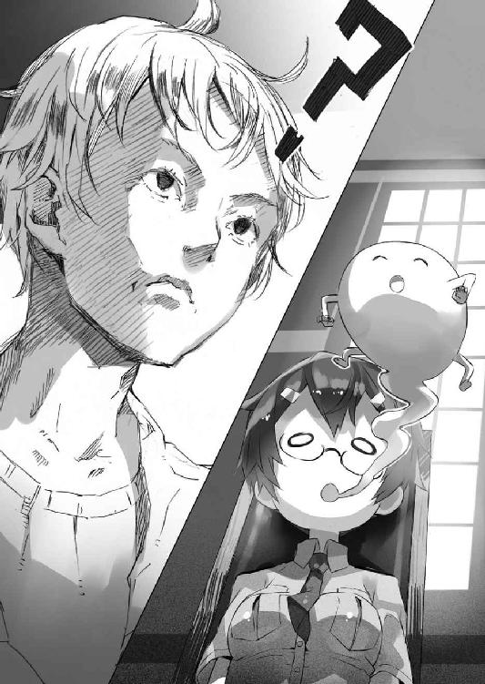
てへぺろ、とかすんな！ 可愛いから！
......この人も、たいがいだな。
「あー......まあ、と、とにかく、食べようか......」
「ホモォ」
「い、いただきます」
「ホモォ」
どうしようと思いながら手を合わせれば、ホモォとしか言わないながらも、美埜里さんも同じように手を合わせ、食事を始めた。さすがに脳がＢＬ禁断症状に占拠されていても、身体の本能は栄養補給を覚えているらしい。
とはいえ......
「ホモォ......」
「............」
「ホモォ......」
「............」
まるでお通夜みたいな空気の中、読経の如く、美埜里さんの『ホモォ』が響く。
なんだこの状況。
さすがに僕らとしても、今にもどこかの汎用人型決戦兵器みたいに、四つん這いでＢＬ求めて徘徊しそうな美埜里さんを目の前にして、楽しくお食事できるはずもない。正直、美味しいはずのミュセルの料理の味が、まったく分からなかった。
「ミ、ミノリ様、大丈夫っすか？」
そんな中、おずおずとエルビアが口を開いた。
彼女にしてみればごく普通の気遣いというか、単に美埜里さんを心配してのことだったのだろう。だからその後どうなるかなど、想像もできなかったに違いない。
「............」
エルビアに話しかけられ、機械的に朝食を食べていた美埜里さんの動きが止まった。
どこか憔悴したかのような顔を上げて、彼女はエルビアを見る。
「............」
「ミノリ様？」
「......エルビア」
不意に美埜里さんの目に、光が宿った。
表情が突然明るくなり、口元が綻ぶ。
──あ。やばい。
本能的に僕はそう悟ったが、遅かった。
まるで、ほしかった玩具を見つけた子供のように、キラキラとその眼鏡の奥の双眸を輝かせながら、椅子から立ち上がり、美埜里さんがテーブルの上に身を乗り出す。
彼女の両手が、引っ込める間も許さずエルビアの両手を摑んだのは次の瞬間だった。
「君は男の人の裸に興味あるかね？」
「......へ？」
エルビアがきょとんとした顔をする。
たぶん、何を言われたのか、一瞬、意味が分からなかったのだろう。
「あ、あの」
「興味あるかね？」
「ミノリさ」
「どうなんだね!?」
有無を言わせぬ美埜里さんの問い──ただし顔は満面の笑み──にエルビアの顔が強張っていた。ようやく彼女も美埜里さんの状態がどういうものなのか理解したみたいだけど、たぶんそれはもう遅い。
エルビアはもぞもぞと両肩を動かしている。どうやら美埜里さんの手から逃れようとしているんだけど──エルビアが手加減しているのか、美埜里さんの力がウェアウルフを圧倒するほどに強いのか、とにかく、握る手が離れない。
「シンイチ様......！」
エルビアが泣きそうな顔で僕達を見てくるけれど......僕達もどうしたらいいのか分からないので、みんなエルビアから目を逸らしてしまった。
ごめんエルビア。
僕達にはもう......手の施しようが............
そういうわけで、結局、僕達は──
「ごちそうさまでした」
まるで荒ぶる神を鎮めるために捧げる生け贄の如く、エルビアに美埜里さんを押しつけると、さっさと食堂を出ることにした。
分かっている。ひどい。ひどいんだ。
でも他に方法なんて何もないじゃないか......！
「ちょ......シンイチ様!?」
ありがとうエルビア。
君の尊い犠牲は忘れない！
背後で悲鳴じみた声を上げている本人ではなく、青空の彼方に浮かぶ彼女の笑顔（妄想）にそう告げて......僕達は、そそくさと食堂から退避したのだった。
そろそろ学校に行く時間だ。
朝食の後──少し自室でのんびりしてから、僕は時計で時刻を確認し、学校に行く準備を始める。まあ準備と言っても荷物なんて特になくて、身だしなみを整える、程度なのだけれど。
「お忘れ物はありませんか？」
「うん、たぶん大丈夫」
部屋の前で待っていたミュセルに尋ねられて、僕は頷く。
なんというか、形だけでもスーツを着て行う、出勤前のこのやりとり──これでネクタイなんか締めてもらった日には、絵に描いたような新婚さんの朝で......なんだか、照れくさい。
ちなみに今日ミュセルの授業はない。そのため彼女は留守番だ。
「鍵は大丈夫ですか？」
「......あっ」
慌てて服のポケットを探る僕。
「どうぞ」
その間に、僕の脇を通って部屋の中に入ったミュセルが──机の上に放置してあった鍵を、持ってきてくれた。
「今日も頑張ってください」
鍵を僕に渡しながら、ミュセルが微笑む。
「うん。ありがとう」
ああもう本当に可愛いなあ、このメイドさんは！
どこかくすぐったいような気持ちで僕は、微笑むミュセルに笑顔を返すと──そのまま二人で連れだって玄関に向かう。
まあここまでは特に問題のない、いつもの朝の風景だったのだけど。
「......あ」
僕は廊下の向こうで──美埜里さんとエルビアの姿を見つけた。二人並んで歩いているのだけど、共に肩を落とし、背を曲げた猫背の状態で、足取りは見るからに重く、見ているだけでこちらの気が滅入ってくるような姿だった。
しかも二人は、こちらに向かってくる。
「ど、どうしたんですか？ てか、エルビアまで......？」
美埜里さんの状態はまあ、いいとして──良くはないけどいまさらだ──エルビアまで一緒にどよんとしているのはいったいどうしたことか。近くまで来ると、その目は虚ろで、長々と溜め息をついているのも分かった。
「............慎一、君」
美埜里さんは生気のない眼鏡の奥の目を僕に向け、大きく溜め息をついた。
その手には──一枚の紙。
何か絵が描いてあるみたいだけど。
ひょっとして、美埜里さん、エルビアに絵でも描いてもらったのだろうか。小説や漫画は無理でもエルビアならＢＬっぽい絵を描くくらいはできそうだし。
しかしそれなら、何故二人ともこんなゾンビみたいな状態になっているのだろう。
「......ん？」
僕はなんの気なしに、美埜里さんの手にある紙を覗き込んだ。
そして──絶句。
まあ予想通りといえば予想通り、紙いっぱいに描かれていたのは、裸の男二人だった。いい歳のがっちりした体型の男が二人、仁王立ちで立っている。
しかし描かれている絵は、萌え絵というより写生のそれだった。
まるで写真から男二人を抜き出したかのようなリアルさがある。萌え絵のようなイラストタッチのＢＬだったらまだ大丈夫というか、拒否反応は少なめだけど、この絵は僕的にはちょっと......
さらにその絵は、通常だったら申し訳程度でもモザイクが入るだろう大事な部分も、それはもう猛々しく、今にも紙の中から飛び出してきそうなほど精密に描かれていた。男二人が「こいつを見てくれ。どう思う？」と低い声で問いかけてきているかのようだった。
「す、すごく......大きいです......」
脳内再生の声に思わず答えてしまう僕。
というかよく見ると股間の部分だけ妙に線が少なくて漫画的なのは、これ、たぶんエルビアが想像で描いてるからだろう。要するに男性の大事な部分がどういうものか、なんとなく形は知っているけれど、微に入り細に入り描けるほどには知らないってことだ。
以前、キャラ弁でＢＬそのものの絵を弁当箱に再現していたエルビアだけど、どうもアレはお手本があったから──ＢＬ本を見ながら作ったかららしく、ゼロから描くとこうなっちゃうらしい。
そういえばエルビアってこの間、はじめて発情期が来たばっかりなんだっけ。
女きょうだいだけだったみたいだし、男性のアレって、小さい頃一緒にお風呂に入ったお父さんのしか見たことない、なんて可能性も高いよな。
ともあれ......
これが、美埜里さんの求めているＢＬじゃないことは分かる。
これはハードゲイとかそーゆー系統であって、線の細い美少年とか美青年とかが、クラシック音楽でも流れてそうな中で、くんずほぐれつするのとは、全然違う。
あー。つまりエルビアに絵を描かせてみたのはいいけど、美埜里さんの望むものとは違っていて禁断症状は治まらず、エルビアはエルビアで、何をどう描いて良いのか分からないまま駄目出しされて、落ち込んでるのか......
ああもう、難儀な人達だな。
「そうなの、男の裸があればいいってわけじゃないの......。大事なのはシチュエーションなの......」
絶句する僕とミュセルの前で、ぶつぶつと美埜里さんは低い声で呟く。
さらにその隣でエルビアも──
「アタシが......アタシが悪いんす......。アタシがもっと上手に、リアルに描ければ......」
と独り言を言っていた。
「いや、これ以上リアルになっても困ると思うんだけど......」
「リアリティがあれば、ミノリ様に萌えていただけるのに......」
どうやらエルビアは、美埜里さんが自分の描いたＢＬ絵に萌えてくれないのは、リアルさが足りないからだと考えているらしい。
まあリアリティというのを『どれだけ本物に似ているか』と捉えるなら、エルビアの言うのはまったくの見当違いだ。創作物における『リアリティ』ってのはいかに『本物みたいだと読者（視聴者）が違和感なく思えるか』であって、ときにはむしろ噓っぽい描き方の方が、感情移入しやすいこともある。
ただその辺の機微をエルビアに伝えるのは、なかなか難しいだろう。
そんなことを僕が考えていると──
「もっとリアリティを......実際見て......」
呟くエルビアの声が、そこで止まった。
「......エルビア？」
食い入るような視線を感じて絵から顔を上げると......エルビアの目が、何故か妙にぎらぎらとした光を帯びて僕を見つめていた。
「シンイチ様、脱いでください」
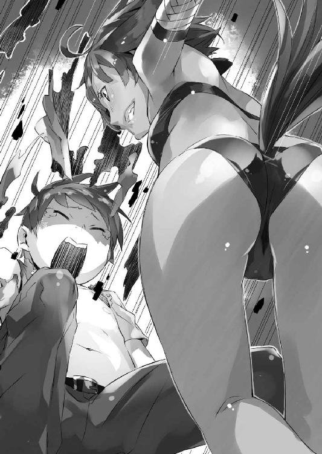
「はい？」
唐突な言葉に、思わず素っ頓狂な声が漏れた。
「リアリティがほしいんす」
「いや。あのエルビア、ここでいうリアリティってのは」
「アタシちゃんと男の人の体って見たことなくて。だからシンイチ様のを見ればアタシ、ミノリ様に萌えていただけるようなのが描けるんすよ」
「いやこれ以上ないくらい上手く描けてましたよ!?」
まあ確かに股間は少し詳細が足りなかったけど──たぶん、問題はそこじゃないだろうし。
しかし......
「見せてくださいシンイチ様」
どこか据わった目付きでそう訴えてくるエルビア。
駄目だ。聞いちゃいねえ。
「お願いっす......シンイチ様......シンイチ様の裸を見たいんすよ......！」
「いやだから。どこの痴女だよ」
「本物の......生の......シンイチ様の......」
ゾンビみたいに両手を伸ばして僕の方に一歩踏み出してくるエルビア。
ああもう駄目だこりゃ。
見せてやらないとこれは治まりそうにない。
「だが断る！」
エルビアの手が体に触れる直前に、僕は一歩後ろに下がった。
鉤のように曲げられた指が、虚しく宙を摑んだ。
「ぼ、僕もう行くから！ それじゃあ！」
「あっ、いってらっしゃいませ、シンイチ様！」
身の危険を感じた僕はミュセルにそう声を掛けると──美埜里さんとエルビアに背を向けて走り出す。本来は美埜里さんも僕の護衛として一緒に学校に行くべきなんだけど、こんな状態の彼女を学校に連れていくわけにはいかない。
しかし......
「......うわ」
思わず悪寒に身震いする僕。
光流さんの待つ玄関へと急ぎながら、僕は、美埜里さんとエルビアの視線が、ずっと僕の背中に突き刺さっているのを感じていた。
で──その翌日。
状況はさらに悪化していた。
「みんな、おはよう......」
学校は二日連続でお休み。
日本でいえば土日で、普段この二日間を、僕はのんびりと屋敷で過ごすことが多い。だがエルダントに来てからはわりと規則正しい生活なので、朝は早めに目が覚める。休みだからといって惰眠を貪るでもなく──朝食の時間もいつもと同じだ。
「......って」
食堂に足を踏み入れたとたん、僕はそこに充満する空気に思わず総毛立った。
何事かと中を見回す僕の目にまず映ったのは、イスに座って俯き、ぶつぶつと何か呟いているエルビアの姿だった。
「......どうしたらいいんすか......萌えってなんすか......どの角度に萌えるんすか......アタシはいったいどうすれば......？」
俯いているためエルビアの目元は見えない。
しかもその身体はぴくりとも動かず──しかしだからこそ、唇が、そこだけ別の生き物みたいに動いて独り言を延々と紡ぎ出す様は、はっきり言って、めちゃくちゃ怖かった。
「おはようございます、シンイチ様」
エルビアを前に硬直する僕の元へ──厨房にいたらしいミュセルが駆け寄ってきた。
「ねえミュセル、エルビアの様子悪化してない......？」
「話しかけても応えてくれないんです......」
困ったようにミュセルは言う。
ふと視線を感じて顔を上げれば、先に来てイスに座っていた光流さんと目が合った。
「............」
光流さんは、肩を竦めて首を横に振る。
もう手遅れです──とはっきりその表情が語っていた。
そして──
「......あれ？ 美埜里さんは？」
そういえば食堂に美埜里さんがいない。
エルビアの状態も悪化してるし、もしかして美埜里さんもそうなんだろうか。ベッドから起き上がれないくらい重症になってたりして......？
思わず心配になって、彼女の部屋──新たにあてがわれた客室だ──に様子を見に行こうとしたそのとき。
「みんな、おっはよお！」
大きな明るい声が、突然食堂に響き渡った。
エルビア以外の全員が、驚いて振り返る。
「み、美埜里さん!?」
僕達の後ろに立っていたのは、昨日の落ち込んだ様子が噓のように明るい、美埜里さんだった。
......あれ？
「ん？ どうしたのみんな」
美埜里さんはニコニコと僕達を見回し、足取りも軽く歩いて、自分の椅子に座る。
僕達はぽかんと間抜けに口を開けて、そんな美埜里さんを見つめていた。
「美埜里さん、大丈夫なんですか？」
不審そうな顔で光流さんが訊く。
昨日まではＢＬ欠乏症で、あんなにも落ち込んで、会話すら成立しなかったというのに......なんだ、この変わりよう？
「んー？ 何が？」
笑顔のまま美埜里さんは首を傾げると、立ったままの僕とミュセルに顔を向ける。
「何してるの二人とも。早くしないと、アツアツのご飯が冷めきっちゃうわよ☆」
座ってと促され、それを拒否する理由もない。
若干の疑問を抱えつつも僕とミュセルは椅子に腰掛けた。
「それじゃあ、いただきまーす！」
「い、いただきます......」
パクパクと朝食を食べ始める美埜里さんにつられて、僕、ミュセル、光流さんもゆっくりと朝食に手を伸ばした。エルビアも緩慢とした動作で、ぶつぶつ言いながらも朝食を口に運ぶ。
いったいどういうことだろう。
ご飯を口に運びながら、僕は美埜里さんをちらっと見る。
美埜里さんは元気よく朝食を口に運んでいた。
美埜里さん、元に戻ったのかな？ とうとう諦めがついたとか？
ミュセルも光流さんも、美埜里さんの様子に困惑しているのか、ちらちらと視線を彼女に向けている。
まあいつも通りの美埜里さんに戻ってくれたんだったら、それでいいんだけど......
「............」
「............」
食器と触れ合う涼やかな音だけが食堂を満たす。
なんか──何か変なんだけど、何が変なのか分からない。
そんなもどかしい空気だ。
やがて──
「............」
なんとなく喋るタイミングが摑めなくて、食事はほぼ無言のまま終わった。
エルビアは相変わらずぶつぶつ呟きながら、先に自室へ戻っていった。ミュセルも片付けがあるからと行ってしまった。
残されたのは、僕と、ニコニコしている美埜里さんと、未だに不審そうな目を美埜里さんに向けている光流さん。
「さて、私も部屋に戻ります」
「あ、僕も......」
ナプキンで口元を拭った光流さんが立ち上がったのを見て、僕も椅子から腰を上げる。
「ねえ、待って」
食堂を出ていこうとした僕らを、美埜里さんが呼び止めた。
僕と光流さんは美埜里さんを振り返る。
美埜里さんは満面の笑みで僕達を見ていた。眼鏡の奥の目は、眼球が見えないほど細められていて、唇の端もニッと吊り上げられている。
何故だろう。
美埜里さんは笑っているだけなのに......笑っているはずなのに。
なんだ、この、身体の奥から噴き出てくる怖気は。
「お願いがあるの」
美埜里さんは立ち上がると、僕と光流さんの前──食堂の扉の前に立った。
まるで、通せんぼをするかのように。
「あ、あの、美埜里さん？」
ニコニコと美埜里さんの笑みは崩れない。
まるで、そういう形の仮面を被っているかのように。
つまりは、それは『形』だけで中身と繫がっていないというか──
「............」
金縛りにあったかのように、僕と光流さんはその場から動くことができなかった。
そんな僕達を置いて、不意に美埜里さんは廊下に出ると──手に段ボール箱を抱えて、同じ位置に戻ってくる。さっきは気付かなかったけど、どうやら食堂の入り口の脇に置いていたらしい。
「これ、着てくれない？」
そう言って美埜里さんは、床に段ボール箱を置くと、その中から何かを取り出して、僕達の前に広げた。
「「......は？」」
僕と光流さんの声が重なる。
それは二着の服だった。というか衣装？
一つは黒いレオタード。レオタードというか、女性用の水着というか。
そしてもう一つは、黒い海パン──それもいわゆるブーメランパンツの──だった。
美埜里さんは衣装を床に置くと、さらに段ボール箱の中から......何やら続けていろいろと引っ張り出してくる。フリルとウサギの耳が付いたカチューシャ。フリルの付いた白いエプロン。さらには蝶ネクタイ。靴下。そしてヒールの靴。
どういう......ことだ......？
え？ ......今、着てくれって？ 着てくれって言いました？
誰に？
「え、いや、あの、美埜里さん」
「なぁに？」
「それ『着てくれない？』ってさらっと言うにはおかしなものだと思うんですけど......」
「何が？」
「いや、あの、何がって......」
ニコニコと美埜里さんは笑っている。
駄目だ。会話が成立しない。
「私は嫌です」
言葉を失くす僕の代わりに、きっぱりと答えたのは光流さんだった。
「キャラを分析し、理解し、自分なりに再現する手段としてのコスプレ。自己表現の一種。それがレイヤーとしての私の矜持ですから。適当に持ち寄られたアイテムを身に着けるだけのような、そんな場当たり的な仮装は興味ありません」
堂々とそう告げる光流さん。
おお。さすがに年季の入ったレイヤーさんは違うな。
そんなふうに感心していると──
「悪いけど部屋に戻らせてもらいます」
笑顔の美埜里さんの横を通り抜けようと、光流さんは歩き出す。
その姿が──いきなり一回転したのは、次の瞬間だった。
「──!?」
大きな音はしなかった。
ふわりと羽毛が落ちるかのように床に降ろされたのは、美埜里さんが光流さんの袖と襟を摑んだままだったからだろう。投げ技の最後で勢いを殺したのだ。
──って。
投げた!?
美埜里さんが、光流さんを？
「............!?」
慌てて飛び起きる光流さん。
美埜里さんは、数秒前までとまったく同じ体勢で扉の前に立っている。
一瞬の早業なので、何がなんだかよく分からなかったみたいだけど──
「古賀沼さん......？」
光流さんが呻くように美埜里さんの名を呼んだのは、自分が何をされたのか理解したからだろう。美埜里さんは女性自衛官であるのに加えて、武術家の娘で幼い頃から格闘技を叩き込まれている。相手を迅速に制圧する場合、中途半端な威力の打撃技を重ねるより、投げ技の方が身体全体に衝撃を叩き込めるということで、有利──という話をどこかで読んだ記憶があった。
「逃がさないわよ？」
美埜里さんの笑顔が深みを増す。
「............」
理解不能の深淵を覗き込んだ気持ちで、僕と光流さんは顔を見合わせた。
僕達を見つめる美埜里さんの目は......尋常でない光を宿している。
そう。美埜里さんは元に戻って明るくなったんじゃない。
ＢＬ欠乏症の禁断症状が行き着くところまでいって──壊れきっただけだった。
「屈辱です......！」
苦々しげに呟く光流さん。
その姿は──そりゃもう珍妙なものだった。
長い黒髪は首の後ろで括って一つにまとめられ、裸の上半身には付け襟と蝶ネクタイのみを着け、下半身にはぴちっとした競泳水着みたいな黒いパンツ。足には白いハイソックスとローファー。
それだけだった。
いっそ黒パンツだけなら水着、で済んだかもしれないが、付け襟だのハイソックスだのが、なんというか、異様な雰囲気を醸し出す。
やたら肌色面積が多い、そんな光流さんのありさまを見ながら──
「執事っていいわぁ。やっぱり男の子の膝小僧は重要よねぇ。ふふふふふふ」
笑顔で美埜里さんが呟いている。
執事......だと......？
僕は彼女のその台詞に戦慄していた。どこからどう見ても変態の装いにしか見えないこの衣装──彼女には執事に見えるらしい。どんだけイメージ補正能力高いんだよ。
そういや、前に水遊びに出掛けた時にも、ガリウスに似たような格好させて『裸執事』とか言ってたっけか。
それにしても、普段は女の子の格好をしていて、それが似合っているから忘れそうになるけれど、平らな胸や黒いパンツ姿に、光流さんが男の子なのだと実感させられる。ある意味で僕はほっとしていた。
だが──
「何見てるんですか！」
僕の視線に気が付いて、光流さんが嚙み付くように叫んだ。
顔が赤くなっているのを見るに、今の格好が恥ずかしいらしい。女装は恥ずかしげもなくしてるのに。光流さんの羞恥ポイントというのがいまいち分からない。まあ男装だ女装だという以前に、明らかに人間としておかしいけどさ──この格好。
「あ、貴方のその格好だってすごいんですからね!? 鏡で見てくれば!?」
「うっ......」
僕は言葉に詰まった。
嗚呼──せっかく、他人を見つめることに集中することで、自分の今のありさまを意識から閉め出すことに成功していたというのに。
そう。実を言えば僕の格好もたいがいだった。
男性水着を基本としたような格好の光流さんと対照的に、僕の着せられたそれは女性の水着そのものだった。いや、女性の水着というか、レオタードというか。さらにその上に、白いエプロンも着せられた。
しかも──
「慎一君......君のバニーメイドも似合ってるわ......！」
「やめてくださいいい！」
うっとりと呟く美埜里さんに僕は泣き叫んだ。
僕の頭には、無理やり美埜里さんに着けられた、ウサギの耳のカチューシャがあった。
どこで入手したのか、足元は赤いヒールだ。っていうか、男にも履けるサイズのヒールなんてこの世に存在するんですね......何より恐ろしいのは、美埜里さんが、それをいつの間にかこのエルダントに持ち込んでいたことだけど。
肩も鎖骨も脚も露出させられて、僕は恥ずかしさに泣きそうだった。
というかどうして僕が女装なんだよ!? ここは普通光流さんだろう!? いや、もちろん、決して、裸執事の格好をしたいわけではないけどさ!!
「いいわぁ......」
熱く、長く、満足げな息を吐く美埜里さん。
僕達を無理やり着替えさせるときに見せた、逆らうのが恐ろしいほどの鬼の形相は、今はもうすっかり消えている。暴れようとする僕らを一方的に押さえつけた美埜里さんの力はすさまじかった。自衛隊員ってやっぱりすごいね。これで日本は安泰だよ......！
いやそうじゃなくて。
「うふふふ。その表情だよ慎一君......その表情がイイの......」
と美埜里さんは言った。
「嫌だ、僕は男なんだ、なのにこんな女の格好なんかさせられて......とかなんとか言いつつ、先輩の命令には逆らえず、いつしか、屈辱が快感に変わっていく、そんな刹那の美がそこにはあるのよ......！」
ふ、深いッ......!?
マリアナ海溝よりも深い美埜里さんの業に僕はただひたすら戦慄していた。
というかやっぱり基本はＢＬなんですね。納得。納得したくなかったけど。
「やっぱりギャップって大事よね。普段と違う格好は萌えを刺激されるわ！」
それは分かるけど！ 確かにその辺は普通の趣味でも共通だけど！
だからってこんな──
「......古賀沼さん、これで満足したでしょう!? 私の服返してください！」
感極まってその場でくるくる回っている美埜里さんに、光流さんが強い口調で訴えた。
そうだ、無理やりという形だったが、僕と光流さんは美埜里さんの望み通り着替えた。これでもう満足したはずだ。溜まりに溜まった欲求不満の内圧を、ほんの少しでも下げる効果はあったはずだ。
ちなみに僕と光流さんのもともと着ていた服は、美埜里さんが段ボール箱の中に放り込んで、食堂の外に蹴り出してしまった。取り戻したくても、それにはまず、入り口付近に立ち塞がっている美埜里さんを倒さないといけないわけで。
二人がかりでも彼女には敵わないのは、先に証明されちゃってる。
「古賀沼さん！ 聞いてるんですか!?」
「............」
その場でくるくる回っていた美埜里さんの動きが、ピタッ、と止まった。
「何言ってるの？」
変わらぬ笑顔で美埜里さんは言った。
「一瞬の萌えもいいけど、それよりも私は永遠を望むわ」
「はい......？」
「つ・ま・り」
美埜里さんは楽しげに──心底楽しげに言った。
「これから楽しい撮影会よ♪」
「なっ......」
この僕らの恥ずかしい姿を──親とか親戚とかに見られたりした日には人生終了必至のこのありさまを、データの形で残そうというのかッ!?
あ、悪魔かこの女ッ！
戦慄する僕達を前に、鼻歌混じりでズボンのポケットに手を伸ばす美埜里さん。
しかし──
「──あれ？」
と彼女は首を傾げた。
「いっけなーい。衣装作るのに夢中で、忘れちゃってたわ。てへっ」
こんなに恐ろしい、てへぺろを見たのは生まれて初めてだった。
どうやら美埜里さん、カメラを忘れてきたらしいのだが──
「すぐに取ってくるから待っててね！」
そう言って食堂を出る美埜里さん。
彼女の姿が廊下に消えたその瞬間──
「──ッ！」
示し合わせたわけでもないのに、僕達はまったく同時に動いていた。
大人しく待ってるわけあるかい！
僕達は食堂を飛び出すと、美埜里さんが『るんたっるんたっるんたった♪』とか言いながら歩き始めていたのとは反対方向へ、全力で駆け出す。できれば僕達の衣装を突っ込んだ段ボール箱を回収したかったのだけど、そっち側には美埜里さんがいたので、諦めるしかなかった。
「あっ！」
もちろん、すぐに美埜里さんは気付いたみたいだけど──すでに撮影会に思いを馳せていろいろ緩んでいたのか、彼女にいつもの動きの鋭さはなく、僕達の背中に彼女の手が掛かることはなかった。
「待ちなさい！ 待て！ 私の萌え！ びいえるうううう！」
叫ぶ美埜里さんの声が僕達を追いかけてくる。
そしてたぶん──本人も。
「.........ッ！」
背後を振り返る余裕なんてあるはずもなく──僕達は声にならない声を上げながら、それはもう必死に、屋敷の廊下を走ったのだった。
部屋の窓は、厚いカーテンで覆われていた。
カーテンの隙間から細い光が漏れている。それに照らされて微細な埃が舞っているのが見える。黴臭い匂いもするし、長々といるとあまり身体に良くない環境だとは思うけど、今の僕達には、他に行くべき場所がない。
暗く狭い部屋だ。
横たわる静寂の中で、二人分の──僕と光流さんの呼吸の音だけが響いている。
「............」
僕は壁に凭れ掛かって、毛布に包まりながら、隣にいる光流さんをちらりと見る。
光流さんも僕と同じく毛布にすっぽりと包まって、首から上だけを覗かせながら、唇を引き結んでいた。
そして──
「──！」
扉を叩く音が響き渡る。
僕と光流さんの間に、緊張が走った。
美埜里さんに、ここにいると知られてはならない。できることなら呼吸も心拍も止めて静寂に溶け込んでしまいたいくらいだった。
一秒、二秒......僕達は扉を見つめる。
そして──
「旦那様、ヒカル様、私です。ミュセルです」
扉の向こうから、ミュセルの囁くような声が聞こえてきた。
僕は毛布を身体に巻きつけて、足音を殺しながら、ゆっくりと扉に近付いた。
「......合い言葉は？」
「ケモ耳、ケモ尻尾」
尋ねれば、間髪入れずに返事があった。
僕は安堵の息を吐くと──屋根裏部屋の扉を開けた。
「お邪魔します」
トレイを持ったミュセルが素早く屋根裏部屋に滑り込んでくる。まるで外は真空であるかのように、素早く大急ぎで僕は扉を閉めた。魔法で鍵が掛かって外から扉を開けることはできなくなった。
そう。この屋根裏部屋にも一応、例の魔法は施されているのだ。
「朝食です」
光流さんの前に腰を下ろし、ミュセルは持っていたトレイを床に置いた。
僕は床に膝をついて、料理の載ったお皿の一枚を光流さんへ渡しつつ──ミュセルに尋ねた。
「美埜里さんの様子はどう？」
「昨日と変わらずです」
ミュセルは強張った表情で言った。
「ホモォホモォとおっしゃりながら、屋敷の中を徘徊してます。エルビアさんも......」
「そっか......」
昨日──美埜里さんに無理やり変な衣装を着せられてから、僕と光流さんは、屋根裏部屋に逃げ込んでいた。
服は美埜里さんに取られたままだから、この格好で外に逃げることもできない。自室にこもろうにも、僕も光流さんも鍵を服と一緒に取られたままだったので、そもそも入ることができなかったし──入れたとしても、美埜里さんの侵入を防ぐことはできない。
いや。僕達がどこに逃げ込もうと、ミュセルから予備の鍵を奪い取ってしまえば美埜里さんは難なく侵入できるわけで──いちばん確実な安全確保の方法は、『そこにいる』ことを知られないことだった。
もちろん、僕達はミュセルに服を取ってきてもらうことも考えたのだけど......それを見越してか、それとも単に腐女子の本能が為せる業か、美埜里さんは僕達の自室の近くを徘徊しているらしく、ミュセルですら迂闊に近付けないんだとか。
そういうわけで僕達は、嫌々ながらも例の格好のままだ。
さすがにウサギ耳の付いたカチューシャとヒールは脱いだけどね。光流さんも付け襟と蝶ネクタイを外している。
まあそういうわけで。
僕と光流さんは、ミュセルの助力もあって、なんとか一日をこの屋根裏部屋にこもってやり過ごすことができた。
ちなみにトイレは屋根裏にあったツボを使って済ませた。いろいろ人間としてアレな感じだけど、背に腹はかえられない。かえられないんだッ......（泣）
ともあれ......安心はできない。
美埜里さんがこの屋根裏部屋の存在に気付けば──そこで終わりだ。
「............」
朝食を食べる光流さんの表情には生気がない。
慣れない屋根裏部屋で、ベッドもなく、満足に身体を伸ばすこともできないここに閉じこもることに、疲れてしまったのだろう。
それにしても──光流さんには悪いけど、被害にあったのが僕だけじゃなくてよかった。
きっと、一人だったら僕の心は今頃折れていただろう。
極限状況下の妙な仲間意識を光流さんに対して感じながら、僕は朝食を口に運ぶ。
「............」
朝食を食べながら近くにある窓のカーテンを少しだけ開いて、そっと外を覗く。
可能性は少ないけれど、美埜里さんが外に出てくれれば......それを期待してのことだった。彼女が僕達の部屋から離れてくれていれば、その隙に服を取り返すことだってできるだろう。その後は、まあ駐屯地の自衛隊員なり、城のペトラルカなりに助けを求めれば良いわけで。
駄目元のつもりで外を見た僕は──
「──！」
しかしそこに意外なものを見ることになった。
屋敷の前に停まっている一台の羽車。
見るからに豪華な造りのあれは──
「あれって......」
「どうかされましたか？」
呟いた僕の背後から、肩越しに、ミュセルと光流さんも、窓の外を覗く。
羽車から降りてきたのは──ペトラルカとガリウス、そして女性が四人だった。甲冑こそ着ていないが、いずれも武装していることからして、女性達はたぶん、ペトラルカの親衛隊か何かだろう。
僕が息を潜めて眺めている間に──六人は屋敷の中へと消えた。
「もしかして──魔法技師!?」
光流さんが嬉しそうな声を上げる。
しかし──
「いや......たぶん様子を見に来ただけじゃないかな？」
魔法技師らしい人の姿はなかったし、魔法技師が戻ってくるまで半年はかかると言われたのだ──いくらなんでも、こんなに早い到着になるとも思えない。
「そっか......そうですよね」
僕の返事に光流さんは肩を落とすと、元の位置に戻って、裸同然の体に改めて毛布を巻きつける。いつもはふてぶてしいとも言える態度の光流さんだけど、今の彼はひどく心細そうで、いつもの気の強さが感じられない。
僕はそんな光流さんを見つめつつ──
「ねえ、ペトラルカ達に助けてもらわない？」
そう提案した。
「逃げきる手段もないし、不特定多数の人にこの姿を見られたくないから隠れてるけど......。ペトラルカ相手だったらまだマシだし。あの羽車に乗せてもらえれば......」
なんとなくガリウスにはこの格好を見られたくない気がしたけれど、さすがに、背に腹は替えられない。
「ペトラルカ達が屋敷から出てきたら、ここから合図して気付いてもらおう。いっそこの窓から出てもいい」
屋根伝いに降りればなんとかなるはずだ。
「そうですね......」
「名案だと思います」
光流さんとミュセルが頷いてくれる。
そういうわけで──僕達はペトラルカ達が出てくるのを待った。
しかし............
十分経過。二十分経過。三十分経過。
さらに──一時間経過。
だがまだペトラルカ達は出てこない。
「遅くないですか......？」
「うん......」
光流さんの問いに僕は頷いた。
単に僕達の様子を見に来ただけなら、すぐに出てきてもおかしくない。
しかし......
「......私、直接会いに行ってきます！」
痺れを切らしたのか、毛布を体に巻いたまま、光流さんが立ち上がった。
「え、でも......」
「いざとなったらガリウスさんの剣でも借りればいいんです！」
「また強引な......」
光流さんは荒い足取りで扉に近付くと、ドアノブに手を掛けた。
そんな光流さんを見つめて──僕も考える。
「分かった、僕も行くよ」
僕は立ち上がり、毛布に包まりながら、光流さんの隣に並んだ。
「君一人を危険な場所にやるわけにはいかない」
「......単に一人でここに残るのが怖いだけじゃないんですか？」
ばれたか。
だけど僕は素知らぬ顔で「行こう」と彼を促す。
「私もお供します」
決然とした表情でそう言うと、ミュセルも揃って階下に──屋敷の二階に降りる。
僕達は、美埜里さんに気取られないよう、足音を殺してゆっくりと廊下を進んだ。
先頭はミュセル、次に僕、殿は光流さんだ。毛布が長くて歩きづらかったけれど、だからといって変態みたいな格好を曝け出す気にはなれなかったし、むしろ毛布が僕達の足音をある程度は吸収してくれる。
そして──
「......止まってください！」
小さな、けれど鋭いミュセルの声に、僕と光流さんは足を止める。
僕達三人の間に痛いほどの緊張が走る。
「何か聞こえます」
壁に身を隠すようにして、先頭のミュセルが廊下の向こうを覗き込んだ。
「あれは......！」
驚くミュセルの声につられて、思わず僕と光流さんも、壁から頭を出して廊下の向こうを見た。
そこには──
「あれ......！」
美埜里さんがいた。彼女が走っていた。
いや。それだけではない。
エルビアがいた。エルビアも走っていた。
いや。やっぱりそれだけでもない。
二人の後ろに──ペトラルカと、ガリウスと、四人の女性騎士の姿もあった。
彼も彼女らもまた走っていた。
足並みを揃えて、一定距離を保ち、淡々と走る彼女らの姿は、まるである種の訓練を見ているかのようだった。
「受けと攻めはベッドでごろごろ♪」
美埜里さんが歌う。
......っておい!?
「受けと攻めはベッドでごろごろ♪」
エルビアと、ペトラルカと、ガリウスと、でもって女性騎士もこれを復唱した。
「受けが転がりこう言った♪ お願いほしいの♪ しゅごいの♪」
「受けが転がりこう言った♪ お願いほしいの♪ しゅごいの♪」
「お前にホモォ♪ 俺にホモォ♪ うぅんホモォ♪」
「お前にホモォ♪ 俺にホモォ♪ うぅんホモォ♪」
聞いているだけで頭が腐ってきそうな歌詞だった。
「このメロディ......『ファミ●ンウォーズ』の......！」
「それを言うなら元ネタのハートマン軍曹でしょう。『フル●タル・ジャケット』の」
戦慄の表情のまま光流さんが、僕のボケに突っ込んでくれた。感謝。
「日の出とともに起き出して♪ 出してと言われて一日絞る♪ ホーケーチンも可愛いね♪ ショタコンおっさん堕ちてくノンケ♪ ボーイズラブが大好きな私が誰だか教えてよ♪」
......おいおいおいおい。
状況も忘れ、思わず全力で──助走付けてぶん殴る勢いで、突っ込みたくなる衝動を、僕は必死に堪えた。
「一、二、三、四」
「ＢＬ大好きミノリ様！」
「一、二、三、四」
「我らが教祖ミノリ様！」
美埜里さんの掛け声に合わせて、他のみんなが応えるように叫ぶ。
「ショタの軍隊！ おっさんの軍隊！ ホモォの軍隊！ ボーイズラブ！」
............
しばらくの間、僕達は呆然と、走る美埜里さん達を見つめていた。
僕は気付いた。全員の目が、焦点を失って、虚ろに揺れているというか──漫画表現でいえば、ぐるぐる渦巻きが目の中に描かれているような状態であるということに。
「手遅れだったみたいですね......」
僕の気持ちを代弁してくれる光流さん。
そう、僕達は遅かったのだ。
いったいどんな手管を使ったのかさっぱり分からないが──この短時間でペトラルカ達まで、美埜里さんに洗脳されてしまったのだ。いや、感染といった方が正しいかもしれない。
恐るべし腐女子脳。恐るべしＢＬ菌。
どんだけ感染力が高いんだよ。
このまま放置すると爆発的感染拡大しかねない。
いずれにせよ、僕達はもう、ペトラルカ達に助けを求めることはできないだろう。今の彼女らは美埜里さんの信者、というよりその分身だ。
「帰りましょう。いつまでもここにいては危険です」
「そうだね......」
単なる絶望よりも、希望の後に来る絶望の方が遥かに重い。
「スカした美少女もう要らない♪」
「スカした美少女もう要らない♪」
「俺のオンナは美少年♪」
「俺のオンナは美少年♪」
............
僕達はまるで抱えきれない重荷を背負わされたかのような気持ちで、肩を落としながらすごすごと屋根裏部屋に戻っていく。そんな僕達の背後で、美埜里さんの、そしてペトラルカ達の歌う腐の軍隊の歌が、いつまでもいつまでも、響いていた。
屋根裏部屋に戻った僕は、毛布を巻きつけたまま溜め息とともに床に座り込んでいた。
光流さんも毛布に包まって壁に凭れながら座り──ミュセルは痛ましげな瞳で、そんな僕達を見つめている。
もう駄目だ。
せっかく屋敷から抜け出せる好機だと思ったのに、むしろ敵が増えているなんて......！
「もはや、頼れるのはミュセルだけだ......」
「こ、光栄です......？」
ミュセルはどう応じて良いのか分からない、といった様子でそう応えた。
「......そういえばミュセルだけだよね」
「はい？」
「美埜里さんに洗脳されてないの」
洗脳というか、感染というか。
ついさっきやってきたペトラルカですら、わずか一時間かそこらで美埜里さんの毒牙にかかってしまったのだ。
それなのに一緒に屋敷で暮らしているミュセルがまだ無事だなんて。
どうしてだろう？
ひょっとしてミュセルには腐女子ウイルス（命名・加納慎一）に対抗し得る抗体か何かでもあるのだろうか？
「それはその、たぶん......相手がヒカル様でも、旦那様とのそういうのを私が見たくないからというか......」
「そういうの？」
赤面しつつも言葉を濁すミュセルに、僕は訊き返す。
「い、いえ、気にしないでください！ わ、私、屋敷のお仕事してきます！」
ミュセルは慌てた様子で立ち上がると、赤い顔のまま屋根裏部屋を出ていった。
屋根裏部屋には、僕と光流さんが残される。
そして──
「なるほどねー」
苦笑半分、溜め息半分で光流さんが言った。
「何が『なるほど』なの？」
「鈍い男には教えたげません」
何故か妙に楽しげな様子の光流さん。
いったいなんなんだ？
ともあれ──
「............」
そこで一度、僕達の会話は途切れた。
再び屋根裏部屋に横たわる沈黙。
やがて──
「うー......」
暑い。午後になって気温が上がってきたのだろう。
屋根裏部屋は特に熱がこもる。昨日は曇り空だったのでそうでもなかったけれど、今日はよく晴れている。まだまだ室温は上がるかもしれなかった。
「暑ぅ......」
蒸し風呂のような状態で、服を着たまま汗だくになっていると、気力も体力も減退する。
いつの間にか僕も光流さんも、お互い毛布を退けていた。
今この場所には僕と光流さんしかいないのだ。どうせお互いの格好は見てしまっているのだし、いまさら恥ずかしいも何もないだろう。何よりまず、気を張るのは疲れた。
「これからどうすればいいんでしょうね......」
光流さんが呟くように言う。
「......明後日までの辛抱だよ」
僕は言った。
「明後日？ ──あ」
光流さんも気付いたらしかった。
「そう。明後日になったら荷物が届くから......」
自衛隊の定期便まであと二日。
せめて新しいＢＬ本が届けば、美埜里さんも落ち着くかもしれない。
いや、落ち着いてくれないと困る。
「それまで、頑張ろう......」
言いながら僕は、なんの気なしに屋根裏部屋を見回した。
部屋には、ウサギ耳のカチューシャやヒール、付け襟や蝶ネクタイが、無造作に転がっている。
「............」
僕の視線を追って、光流さんが、僕達の脱ぎ散らかしたそれらに目を向けた。
手持ち無沙汰からか......光流さんは、いちばん近くにあったウサギ耳カチューシャを手に取る。
「美埜里さんも何考えてるんだろうね。僕達にそんなもの着けてさ」
「............意外と」
ウサギ耳カチューシャと僕を交互に見て、光流さんが呟く。
「似合ってる......？」
「......へ？」
「え？」
光流さんの言葉の意味が分からなくて、僕は訊き返していた。
光流さんも光流さんで、自分が口走ったことの意味に改めて気付いたのか......きょとんとして目を瞬かせている。
顔を見合わせ──数秒。
「光流さん!? な、何言ってるの!?」
「あ、あはははは！ そうですね私ったら何言ってるんでしょう！」
慌てて叫ぶように言う光流さん。
「ただ見慣れちゃったせいでしょうか、別に普通かもーなんて......」
「普通違う！ 断じて違うッ！」
耳を塞いで、僕は毛布に包まった。
「頼む！ 頼むから君だけは正気でいてくれ！ 僕を一人にしないでえええ！」
腐女子菌がもうこんなところにも!?
それともこれはあれか、極限状況、閉鎖的環境で、恐怖を忘れようとするあまり、テロリストとかに人質が親近感を覚えちゃう──ええとクロロホルム、じゃなくて、バーゲンホルム、でもなくて、そう、ストックホルム症候群ってやつか！
まずい。直接接触していなくても、僕達は自然と腐女子に洗脳されかねない！
「染まっちゃダメだ染まっちゃダメだ染まっちゃ......」
呪文のように繰り返して、自らに言い聞かせる僕と光流さん。
結局──その日、僕達はそれ以上のことは何もできなかった。
でもって──翌日。
雑魚寝状態で眠っていた僕は、ノックの音で目を覚ました。
「うーん......？」
僕は寝返りを打つ。
昨日からの暑さと空気の淀みでどうにも頭が働かない。二度寝はできないけれども、眠気はずっと頭の片隅に引っかかったまま──そんな感じだ。
「旦那様、ミュセルです」
扉の向こうからそんな声が聞こえてくる。
僕は気怠さを意思の力で押し殺し、身を起こした。
「合い言葉は？」
「ケモ耳、ケモ尻尾」
「今開けるよ......」
寝ぼけ眼で、僕は扉を開けた。
お盆の上に朝食を載せたミュセルがゆっくりと入ってきた。
「うー......？ もう朝......？」
目を擦りながら、光流さんが起き上がった。
「朝食をお持ちしました」
「ありがとう、ミュセル」
「はい」
朝食を載せたお盆を持つミュセルに、いつも通りお礼を言う。
扉を閉めようとした僕は、そこでなんの気なしに、部屋に入ったミュセルを見た。
朝食の載ったお盆を持つミュセルは、何故か、俯いていた。
どうしたんだろう？ 具合が悪いんだろうか。
「ミュセル？」
僕は気になって声を掛ける。
すると──
「ホモォ......」
「──!?」
にっこり笑って顔を上げる──ミュセル。
その目を見て、僕は絶句した。
嗚呼。ミュセルの、今や僕の唯一の希望であった可愛いメイドさんの、藍色の目は、漫画でいうところのぐるぐる状態だった。それは昨日見たペトラルカやエルビアと同じ──つまり。
「ミュセル!?」
洗脳済みの証だった。
僕達の前で、ミュセルは一人ニコニコと笑っている。楽しいことも嬉しいことも何もない。それなのに心の底からニコニコと。
こ、怖い......！
「ブルータス、もとい、ミュセル、君もかッ!?」
「ホモオオオオオ！」
僕が叫んだ次の瞬間、まだ閉めていなかった扉の向こうから、咆哮──というかなんというか──が聞こえてきた。いや。それだけではない。ミュセルの背後から、何本もの手が伸びてくる。それはもう、ゾンビ映画そのものの図だった。
「腐女子の群れ......！」
呆然としている僕よりも、光流さんの方が反応は速かった。
ミュセルを突き飛ばし、背後の腐女子達の方へと押しやると、無理やり、身体全体で体重をかけるようにして扉を閉めたのだ。
「逃げますよ！」
「で、でもミュセルが......」
「ミュセルはもうダメです！」
「でも、でも......」
僕達がそうやって言い合っている間にも、扉は外から叩かれ、激しくがたがたと揺れていた。魔法が掛かっているので無理やり開けられる心配はないけれど──
「ミュセルが向こうに回ったってことは、鍵が向こうにあるも同然です！ ここに入ってこられるのも時間の問題ですよ！」
「──！」
そう。そうだった。
ということはやはりここも安全ではない！
「早く！」
光流さんが僕の手を引く。
もはや、逆らうこともできず後に続くだけの僕。
僕の頭の中にはぐるぐる目玉になったミュセルの姿が焼き付いていた。
嗚呼。屋根裏へご飯を運びに来てくれていたミュセル。僕達の味方だったミュセル。昨日まではなんともなかった。それなのに......それなのに！
「くそおおおおっ！」
怒声とも悲鳴ともつかない声を上げながら、僕は光流さんとともに窓から外へと飛び出していた。幸いにも、屋敷の屋根は緩めの傾斜がついているだけなので、すぐに転がり落ちてしまうようなことはない。
僕達は屋根の上を歩いてその端まで移動すると──屋敷のすぐ傍に生えている樹木の枝に飛び移った。正直、追い詰められていなければ、とてもやろうとは思えない距離の跳躍だけど......僕も光流さんもなんとか樹に飛び移り、そこから幹を伝って地面に降りることができた。
しかし──
「どこに逃げる!?」
屋敷の中には入れない。
すぐ美埜里さん率いる腐の軍隊に見つかってしまうことだろう。
だがだからといって、屋敷から外に出ることもできないし......！
「あそこ！」
屋敷の周りを駆けていた僕達が見つけたのは、木でできた小さな小屋──ブルークの作業小屋だった。
ブルークとシェリスはまだ帰ってきていないし、敷地内ではあるけれど、屋敷の中ではないということもあって、この小屋に封鎖の魔法は掛けられていないはずだ。
僕と光流さんは、一目散にその小屋の中に逃げ込んだ。
転がり込むようにしてその中に入ると、扉を蹴って僕が閉め──そこに飛びついた光流さんが鍵を閉めた。
「............」
そこでようやく僕は人心地がついた。
改めて小屋の中を見回してみる。
窓は小さなものが一つあるだけで、しかも鎧戸も閉められているので、小屋の中は薄暗かった。
「............どこか、どこか隠れる場所は」
粗末な鍵ひとつでは安心できない。
喘ぐように荒い息をしながら僕達は、端に置いてある荷物と壁の隙間に蹲る。
身体が密着して、露出の多い格好のせいで肌がくっつくが、そんなこと気にしていられなかった。ただ少しでも小さくなって、見つからないようにしたかった。
「............」
「............」
僕と光流さんは、しばらく、お互いに一言も発しなかった。
今度こそ本当に息を殺して静かにしなければいけない、というのは分かっていたが──同時に見つかるのは時間の問題だということも、もう分かっていた。
どうしよう。これからどうしたら良いだろう？
今度こそ呼吸も心拍も止めてしまいたいと本気で思った。
しかし......
「ん......？」
どれくらいの時間が経過したのだろうか。
「なんだ？」
何か、音が聞こえた気がして、思わず僕は呟いていた。
自然の音ではない。
光流さんも同じことを思ったのだろう。絶望で俯かせていた顔に怪訝そうな表情を浮かべて──
音が近付いてくる。
いや、違う。
これは音ではなく──
「あんなこといいな♪ できたらいいな♪」
聞こえてきた音は、美埜里さん達の合唱だった。
「ドラ●もん......？」
それは日本人なら、誰だって聞いたことのあるはずの、国民的人気アニメの主題歌だった。
しかし──
「あんな穴こんな穴いっぱいあるけど♪」
「ん......？」
「みんなみんなみんな叶えてくれる♪ 素敵なお尻で叶えてくれる♪」
......っておい!?
「可愛いお尻にいれたいなー♪」
「はい、ヤオイアナー！」
窓が遠い位置にあるので確認できないけれど、合唱が近くなったり遠くなったりしていることを考えるに、美埜里さん達は小屋の周りを回りながら歌っているようだった。
てか誰だよ、今ド●えもんの声真似して応えたの!?
似すぎててびっくりだよ！ 思わず不思議道具としてヤオイ穴を取り出す未来の世界の猫型ロボットを想像して、総毛立っちゃったよ！
「アンアンアッー♂ とっても大好き♪」
「アッーじゃねえよアッーじゃ！」
「ちょ、バカ！」
とても我慢できず、反射的にツッコミを絶叫する僕の口を──慌てて光流さんが塞ぐが、もう遅い。
「ご、ごめん......」
ああ、でもでも、あまりにも歌詞がアレすぎて、ツッコミ待ちにしか思えなかったっていうか、ツッコミを入れずにはいられなかったんだよう！
いやそれはともかく。
「............？」
シン──と僕らの周囲に静寂が、満ちる。
もしかして僕のツッコミに気付かなかったのか？ それでどこかに行ったのか？
淡い希望に胸をときめかせた、その、瞬間。
──バン！
すさまじい勢いで、扉が叩かれた。
一度じゃない。二度でもない。連続して扉が叩かれる。最初の数度は探るように、散発的に。十回目を超える辺りから、バンバンバンバン！ と叩きまくってくる。
しかも扉だけでもない。
小屋を取り囲むような形で、至るところの壁が外から叩かれているのが分かった。
「ひいっ......!?」
たぶん、本当にゾンビに追い詰められれば、こんな気持ちになるのだろう。
本当の本当にもう駄目だ。囲まれた。逃げ場もない。
「ああ......」
僕と光流さんは震えながら身を寄せ合う。
そこに──
「慎一くーん？ 光流くーん？」
扉の向こうから、妙に優しい美埜里さんの声が投げかけられた。
「そこにいるのは分かってるのよー？ 早く出てきなさーい」
優しい声音と裏腹に──ガチャガチャガチャッ！ と、小屋のドアノブが壊れそうな勢いで回る。さらにそれと同調するかのように、扉が、壁が、断続的に外から叩かれる。
今にも扉を突き破って、あるいは壁を破って入ってくるんじゃないかという──恐怖。
もう限界だった。
「うわああああ！」
僕と光流さんは揃って荷物と壁の隙間から飛び出すと、最後の砦である扉を、全体重かけて押した。あんな隙間に隠れている場合じゃない。少しでも、扉を開けられる可能性を少なくしようと思っての行動だった。
扉に身体を預けたことで、外からの衝撃が直接的に伝わってくる。
──バンバンバンバンバンバン！
どうすればいいんだ!? どうすればこの状況を打破できる!?
混乱する頭で、必死に考える僕。
だが──その直後。
銃声がした。
「え......？」
身体が浮いたかのような感覚。
次の瞬間に襲ってきた衝撃で──僕は事態を悟った。扉を支える金具が壊されて、身体を預けていたために開いた扉の勢いで、自分達が外に飛び出したのだ。
つまり──
「わあああ！」
僕と光流さんは飛び出した勢いのまま、地面をごろごろと転がる。
「......痛っ......」
そして気が付いたときには。
「......!!」
僕は地面に仰向けになっていて。
その上に光流さんが、まるで覆いかぶさるような状態で。
それは、僕がまるで、光流さんに押し倒されているかのような──
「おおおおおおおおおおおおお！」
咆哮が──いや歓声が空気を震わせた。
「え、え......？」
いつの間にか僕と光流さんを、腐女子達が取り囲んでいた。
美埜里さんが。ミュセルが。ペトラルカが。エルビアが。女性騎士達が。ついでに──ガリウスも。まあ彼は叫んでないけど。だからよけいに怖いけど。
──というかペトラルカもガリウスも女性騎士も、皆、城に帰らなかったの？
なんという洗脳具合......！ 恐るべし腐女子脳！
いや、今はそんなことに驚いている場合ではなく！
「あ......ああああ......」
突き刺さる視線。
怖い。やめて。僕達を見ないで......！
歓喜の声を上げる彼女達の輪から一人離れるように、美埜里さんが一歩前へと踏み出した。彼女は僕と光流さんのすぐ横までやってきて、足を止める。
ちょうど、逆光で、美埜里さんの表情は分からない。
しかし──
美埜里さんが、勢いよく両手を挙げた。
まるでどこかのクラシック音楽の指揮者のような──仕草で。落ちてくる空を受け止めようとしているかの如く。
そして──
「私は、すべてを許そう......ッ！」
「......は？」
感極まったかのような声音に、僕達は目が点になった。
ゆっくりと雲が動いて太陽を覆い隠す。
わずかだが明るさが減じて──美埜里さんの顔が見えるようになった。
妙に、すっきりとした、その顔が。
「............!?」
なんというか、あれだ、まるで、アレをナニした後の、賢者モードみたいな。
しかも──他のペトラルカやミュセル、エルビア達まで、いつの間にか似たような表情になっている。少なくとも狂気を宿したぐるぐる目玉ではなくなっていた。
美埜里さん達が襲ってくる気配はない。
もしかして......助かったのか？
僕は、僕に覆いかぶさっている光流さんと、顔を見合わせた。
そこに──
「見つめ合う二人！」
遥か彼方の空に手を差し伸べながら──まるでオペラ歌手みたいに美埜里さんは言った。
「遠ざかる森羅万象！ 二人だけの世界！ 熱い──どこまでも熱い抱擁！ 泥にまみれながらもしかし、いや、だからこそ、それは、美しいッ!!」
「いや。あの──美埜里、さん？」
「撮影ッ!!」
美埜里さんの叫びとともに──デジカメの立てる人工的なシャッター音が連続して聞こえてくる。見れば、今までどこに持っていたのか、美埜里さんがカメラを構えて、僕達を撮っていた。プロのカメラマン並みの速さでアングルを変えて写真を撮る様は、僕達にツッコむ暇さえ与えてくれない。
「ふふっ、うふふふふふふふ」
カメラのシャッター音と──不気味な美埜里さんの笑い声。
精根尽き果てた僕と光流さんは、もちろん、反抗することも逃げることも、できなかった。
そして──八日目。
待ちに待った定期便のその日。
屋敷に帰ってきた美埜里さんは、くだんのＢＬ本──『どＭ眼鏡』だったっけ？──が入っているのであろう段ボール箱を抱えて、ホクホク顔だった。
「やっとよ！ 死ぬかと思ったわ！」
ＢＬ本が届いたことがよほど嬉しいのだろう。偶然玄関で鉢合わせした僕に、訊きもしないのに美埜里さんはそう告げてきた。
「......僕達にあんなことまでしておいて、死にそうだったんですか」
とジト目で言う僕。
昨日までの三日間、美埜里さんに無理やり着せられたあの格好──思い出すだけで、その場で身もだえしそうになる。もしタイムマシンがあるなら、今の僕がまず最初にすることは、過去に遡ってデータどころか、あの忌まわしい過去そのものを消し去ることだろう。
ちなみに昨日、僕と光流さんを撮影して気が済んだのか......撮影会後、美埜里さんは正常に戻ったように見えた。
洗脳──なのか？──されていた皆は、美埜里さんから少しだけ遅れて、しかし全員同時に正気に戻った。ということはあれか。皆、美埜里さんの勢いに吞まれていただけだったのか。
「死にそうだったのよ。だからああいう格好してもらったの」
「もうあんなの、それこそ、死んでもごめんですよ」
光流さんは疲れ果てたのか、今日は熱を出して寝込んでしまった。
僕も熱はないものの、身体が重くて仕方ない。
「えー」
「不服そうな顔しないでください」
「いいわよいいわよ。昨日の写真眺めて萌えとくから」
膨れっ面でそう言う美埜里さん。
これがまた可愛いので、どうしたもんだか。
「マジで、やめてくださいよ!?」
思わず悲鳴じみた声でそう訴える僕。
そんな僕を見て美埜里さんは、妙に余裕のある笑みを浮かべていた。
「よかったわー、二人とも。最後には協力していろいろなポーズとってくれたし」
「それは美埜里さんが銃で脅すから......」
「えー、私なんのことか分からないなー。私はただ、片手に銃を持っただけだもの」
「さすが自衛官、建て前を使うのが上手いですね！」
言って僕は長々と溜め息をついた。
「......そういえば、絡みっぽいことはさせられましたけど、結局マジっぽいのはしませんでしたね」
よく許してくれたものだ。
美埜里さんのことだから、ギリギリモザイクが入るようなことをさせられるんじゃないかと怖かったけど......せいぜい鼻と鼻が触れ合うほどの距離まで、光流さんと顔を近付けたくらいだ。......いやまあ、それはそれで勘弁なんだけども。
要するに最後の一線は越えずに済んだわけで。
「それはもちろんよ」
美埜里さんは笑顔で言った。
「ＢＬは寸止めが美しいのよ」
「そうなんですか？」
「キスする半歩手前を見た方が、より自由に妄想の翼を羽ばたかせられるというものよ」
「......さいですか」
「それに──」
ふっと遠い目をして美埜里さんは言った。
「身体を重ねるだけが愛じゃない。触れないことで完結する愛もあるのよ」
「......いいこと言ってる風だけど、全然よくないですから」
ドヤ顔の美埜里さんに、僕はもう呆れ果てるくらいしか、とれる対応がなかった。
そういうわけで。
後に『腐の七日間』と呼ばれるようになる、この七日間の出来事は、〈アミュテック〉関係者の間で、恐怖と恥辱の記憶として語り継がれることになった。
『古賀沼美埜里からＢＬを奪うべからず』
そんな──教訓とともに。
（つづく）
あとがき
どうも、軽小説屋の です。
です。
『アウトブレイク・カンパニー 萌える侵略者』七巻をお届けいたします。
六巻のあとがきで宣言していた様に短編集でございます。
なおかつ表紙はようやっと美埜里さんです。まあ慎一（主人公）の周りの女の子としては、半歩、離れた位置に立っているので、彼女中心の話になりにくく、表紙を飾りにくいという印象がある訳ですが。
ちなみに......作中での短編はそれぞれ、時間的に開きがあり、『腐の七日間』だけは６巻以降、それ以外は５巻以前の話です。『腐の七日間』にしか光流が出てこないのはその辺が理由って事で。
『腐の七日間』の腐女子ネタは、さすがに私には思いつけないので、毎度の様にうちのアシスタントの女の子に考えて貰っているのですが......時計の長針と短針とか、天井と床とかでＢＬネタを展開できる腐女子の妄想力というのは、凄まじいものがありますな。彼女等に限界は無いのか......
それと──先日、『アウトブレイク・カンパニー』のアニメ第一話のアフレコに立ち会って参りました。アニメは本当に大抵がぎりぎりの予算とスケジュールで回っているものなので、蓋をあけてみないとどんなものになるか分からないのが常ですが──第一話、割とイメージ通りの雰囲気で、監督や音響さんの『間』の取り方がとても上手く、一緒に立ち会ったゆーげんさんと、けらけら笑っておりました。
声優さん達も──慎一もミュセルもペトラルカも美埜里も、皆さん、主人公・メインヒロイン級を他の作品で既にこなしておられる様な、豪華メンバー。上手いのは当然なのですが──私個人的には、特に的場が、良かったです（笑）。ああ、こういういかにも腹に一物あるお役人の、「ヤラしい」感じが出るといいよね、的な。
さて次の巻は本筋の長編に戻りますが、本筋とは別に、アニメに合わせて悪ふざけ満載の短編を書いたり、ドラマＣＤの脚本書いたりもする予定なので、御期待いただければと。
ではでは、また次の本で！
２０１３年７月31日
一郎
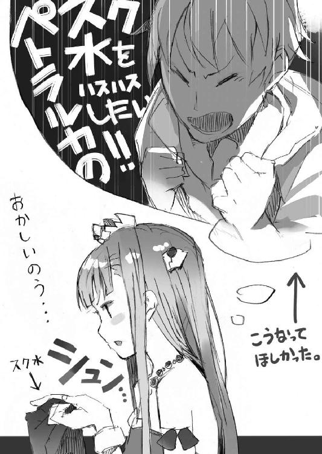
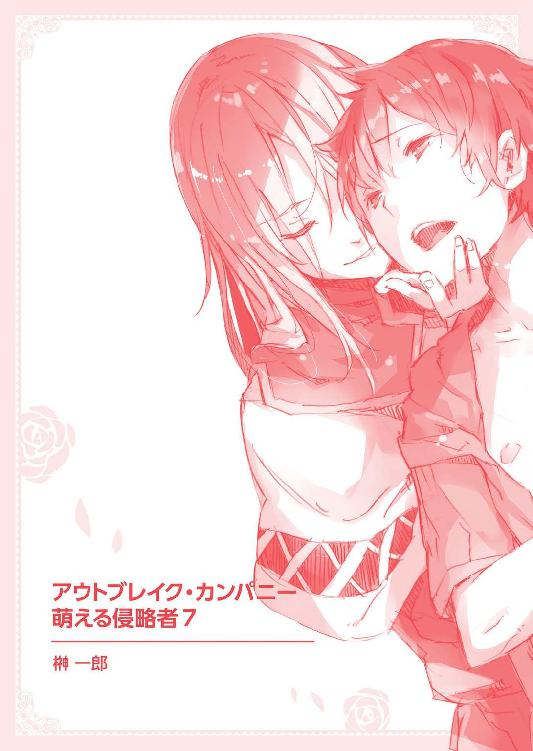
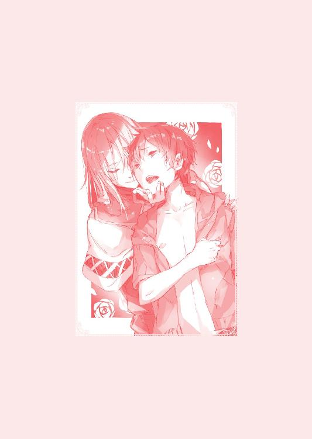
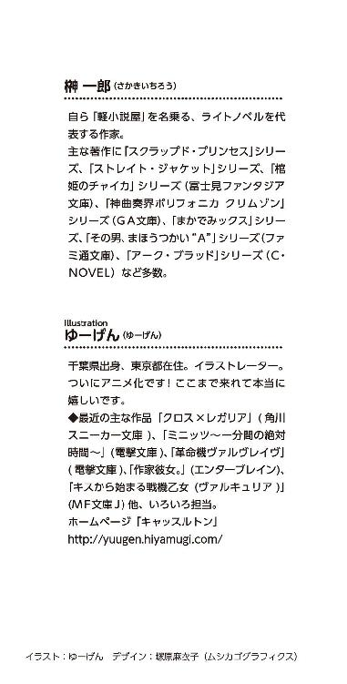
本作品は、二〇一三年八月、小社より講談社ラノベ文庫として刊行されたものを電子書籍化したものです。
◎本電子書籍内の外部リンクに関して
ご利用の端末によっては、リンク機能が制限され正しく動作しない場合があります。また、リンク先のｗｅｂサイト、メールアドレス、電話番号は、事前のご連絡なく削除あるいは変更されることもございます。ご了承ください。
アウトブレイク・カンパニー
萌える侵略者７
二〇一三年一〇月一日発行
一郎
©Ichiro Sakaki 2013
発行者 清水保雅
発行所 株式会社講談社
東京都文京区音羽二‐一二‐二一
〒112-8001
◎本電子書籍は、購入者個人の閲覧の目的のためにのみ、ファイルの閲覧が許諾されています。私的利用の範囲をこえる行為は著作権法上、禁じられています。
01